[各门科学的辩证内容]
[166]
[1880年的计划]270
1.一般运动。.
2.吸引和排斥。运动的传递。
3.能量守恒[定律]在这里的应用。排斥+吸引。——排斥的进入＝能量。
4.重力——天体——地球上的力学
5.物理学。热。电。
6.化学。
7.概要。
（a）在第4项之前：数学。无限长的直线。+和－相等。
（b）在天文学中：有潮汐做功。
亥姆霍茨的两种计算，第2册第120页(336)。
亥姆霍茨的“力”，第2册第190页(337)。
[170]
[运动的基本形式]271
运动，就它被理解为物质的存在方式、物质的固有属性这一最一般的意义来说，涵盖宇宙中发生的一切变化和过程，从单纯的位置变动直到思维。研究运动的本性，当然不得不从这种运动的最低级的、最简单的形式开始，先学会理解这样的形式，然后才能在说明更高级的和复杂的形式方面有所建树。所以我们看到：在自然科学的历史发展中，最先产生的是关于简单的位置变动的理论，即天体和地上的物体的力学，随后是关于分子运动的理论，即物理学，紧接着、几乎同时而且在有些方面还先于物理学而产生的，是关于原子运动的科学，即化学。只有在这些关于支配着非生物界的运动形式的不同知识部门达到高度的发展以后，才能成功地阐明各种显示生命过程的运动进程。对这些运动进程的阐明，是随着力学、物理学和化学的进步而取得相应的进步的。因此，当力学早已对动物躯体中通过肌肉收缩而引起运动的骨骼杠杆作用能够用那些对非生物界也有效的规律作出充分说明的时候，对其他生命现象的物理化学的论证几乎还处于发展的最初阶段。所以，当我们在这里研究运动的本性时，我们不得不把有机体的运动形式撇在一边。我们不得不局限于——按照科学的现状——非生物界的运动形式。
一切运动都和某种位置变动相联系，不论这是天体的、地上物体的、分子的、原子的或以太194粒子的位置变动。运动形式越高级，这种位置变动就越微小。位置变动决不能把有关的运动的本性包括无遗，但是也不能和运动分开。所以必须首先研究位置变动。
我们所接触到的整个自然界构成一个体系，即各种物体相联系的总体，而我们在这里所理解的物体，是指所有的物质存在，从星球到原子，甚至直到以太粒子，如果我们承认以太粒子存在的话。这些物体处于某种联系之中，这就包含了这样的意思：它们是相互作用着的，而它们的相互作用就是运动。由此可见，没有运动，物质是不可想象的。再则，既然我们面前的物质是某种既有的东西，是某种既不能创造也不能消灭的东西，那么由此得出的结论就是：运动也是既不能创造也不能消灭的。只要认识到宇宙是一个体系，是各种物体相联系的总体，就不能不得出这个结论。早在这种认识在自然科学中发挥实际作用以前很久，哲学就已经有了这种认识，所以不难说明，为什么哲学比自然科学整整早200年就得出了运动既不能创造也不能消灭的结论。甚至哲学作出这个结论时所采取的形式，也比今天的自然科学的表述要高明。笛卡儿关于宇宙中现存的运动量永远一样的原理只是在形式上有缺点，即用一种有限的表达方式来表示一种无限大。与此相对应，在自然科学中这同一个定律现在有两种表达方式，一种是亥姆霍兹的力的守恒定律，另一种是更新的更确切的能量守恒定律。我们以后可以看到，这两种表达法中的每一种所表示的正好是另一种的对立面，而且它们当中的每一种都只表达了关系的一个方面。(338)
如果两个物体相互作用，致使其中的一个或两个发生位置变动，那么这种位置变动就只能是互相接近或互相分离。这两个物体不互相吸引，就互相排斥。或者如力学上所说的，在这两个物体之间起作用的力是有心力，即沿着它们的中心点所联结起来的直线的方向起作用的力。不管许多运动看起来多么复杂，上述情形都在宇宙中发生着，不断地和绝无例外地发生着，这在我们今天看来已经是不言自明的了。如果设想两个相互作用的物体在相互作用时不受第三个物体的任何妨碍或影响，而这种作用不是沿着最短的和最直接的路线发生，即沿着联结两个物体的中心点的直线发生，那么这在我们看来是很荒谬的。(339)。大家知道，亥姆霍兹（《论力的守恒》）1847年柏林版第1节和第2节）用数学方法也证明了：有心作用和运动量272的不变性是互为条件的，如果设想存在着不同于有心作用的作用，那就会导致运动可以创造或消灭的结论。所以一切运动的基本形式都是接近和分离，收缩和膨胀，一句话，是吸引和排斥这一古老的两极对立。
应当明确指出：吸引和排斥在这里不是被看做所谓“力”，而是被看做运动的简单形式。康德早就把物质看做吸引和排斥的统一。(340)至于“力”究竟是怎么一回事，我们到时候将会看到。
一切运动都在于吸引和排斥的相互作用。然而运动只有在每一个吸引被另一处的相应的排斥所抵偿时，才有可能发生。否则一方会逐渐胜过另一方，运动最后就会停止。所以，宇宙中的一切吸引和一切排斥，一定是互相平衡的。于是，运动既不能消灭也不能创造的定律，就采取这样的表达方式：宇宙中的每一个吸引运动，都必定由一个相等的排斥运动来补充，反过来也是这样；或者如古代哲学早在自然科学中提出力的守恒定律或能量守恒定律以前所说的，宇宙中一切吸引的总和等于一切排斥的总和。
但是，这里似乎还留下了一切运动总有一天会停止的两种可能性：这或者是由于排斥和吸引有一天在事实上终于互相抵消，或者是由于全部排斥最终占据物质的一个部分，而全部吸引则占有另一个部分。从辩证法的观点看来，这两种可能性从一开始就不可能存在。辩证法根据我们直到目前为止的自然经验的结果，已经证明了：所有的两极对立，都以对立的两极的相互作用为条件；这两极的分离和对立，只存在于它们的相互依存和联结之中，反过来说，它们的联结，只存在于它们的分离之中，它们的相互依存，只存在于它们的对立之中；这样，就不可能存在排斥和吸引最终抵消的问题，也不可能存在一种运动形式最终分配在物质的这一半上，而另一种运动形式最终分配在另一半上的问题，这就是说，既不存在两极互相渗透(341)的问题，也不存在两极绝对分离的问题。在第一种场合下，这就好比硬要使一条磁石的北极和南极互相抵消，在第二种场合下，就好比把一条磁石从中间切断，硬要使一段只有北极而没有南极，使另一段只有南极而没有北极。不过，虽然从两极对立的辩证性质中已经可以推断这样的假设是不能容许的，可是由于在自然科学家中形而上学的思维方式占支配地位，至少第二种假设在物理学的理论中仍起着一定的作用。这一点以后在适当的地方还要谈到。
运动在吸引和排斥的相互作用中是怎样表现出来的呢？这最好是就运动本身的各单个形式来研究。这样最终就会得出结论。
我们不妨看一看一颗行星环绕其中心天体所作的运动。普通的天文学教科书追随牛顿把椭圆形的行星轨道解释为两种力，即中心天体的吸引和使行星沿着垂直于这种吸引的路线运动的切线为共同作用的结果。所以，除向心的运动形式外，普通的天文学教科书还假设了与中心点的联线相垂直的另一个运动方向或所谓“力”。因此，它和前面所说的基本定律是矛盾的，依据这个定律，我们的宇宙中的一切运动，只能沿着相互作用的物体的中心点的方向发生，或者如人们所说的，只能由有心作用力所引起。正因为如此，普通的天文学教科书就把下面这样一种运动因素纳入理论之中，这种运动因素，如我们也已经看到的，必然要导致运动可以创造也可以消灭的结论，因而也就必然要以造物主的存在为前提。这样一来，就需要把这一神秘的切线力归结为某种向心的运动形式，而完成这个工作的，是康德和拉普拉斯的天体演化学。大家知道，按照这种看法，整个太阳系是由某种旋转着的极稀薄的气体逐渐收缩而产生的，旋转运动在这个气团的赤道线上显然最为强烈，并且使个别的气环从这个气团上分离出去，然后这些气环就收缩成行星、小行星等等，并按照原来的旋转方向围绕着中心天体旋转。这一旋转本身，通常是用气体的单个质点的自身运动来说明。这种运动朝极不相同的方向发生，但是最后总有某一多余部分朝一定的方向运动下去，这就引起旋转，这种旋转必然随着气团的进一步收缩而不断地加强。但是，关于旋转的起源，不管提出什么样的假说，都是排除了切线力，使之化为向心运动的某种特殊的现象形式。如果行星运动的一个要素，即直接向心的要素，表现为重力，即行星和中心天体之间的吸引，那么，另一个要素，即切线要素，则表现为气团各个质点原有排斥的残余，即以衍生的或改变了的形式出现的残余。于是，一个太阳系的生存过程就表现为吸引和排斥的相互作用，在这个过程中，排斥以热的形式放射到宇宙空间中去，因而在太阳系中，排斥就逐渐消失，而这样一来，吸引就越来越占优势。
一目了然：在这里被理解为排斥的运动形式，和现代物理学所说的“能”是同一个东西。由于太阳系的收缩和由此而来的构成现在的太阳系的各个天体的分离，太阳系便失去了“能”，而这一损失，按照亥姆霍兹的著名的计算现在已经达到太阳系中原来以排斥的形式出现的全部运动量的
。
我们还可以再来看一看地球上的某个物体。这个物体是靠重力和地球联结在一起的，正像地球是靠重力和太阳联结起来一样，但是这个物体和地球不同，不能作自由的行星般的运动。它只有靠外来的推动才能运动起来，而且推动一旦终止，它的运动很快也就停止，这或者仅仅是重力的作用所致，或者是重力和该物体赖以运动的介质的阻抗的共同作用所致。这一阻抗归根到底也是重力的一种作用，没有重力，地球表面上就不会有任何具有阻抗的介质，不会有大气了。所以在地球表面上的纯粹的机械运动中，我们所碰到的是重力即吸引占有决定性优势的情形，因而在这里运动的产生显示出两个阶段：首先是抵抗重力的作用，然后是让重力起作用，一句话，就是先使物体上升，然后再使之下降。
这样一来，我们又有了以吸引为一方和以按相反方向发生的运动形式即排斥的运动形式为另一方的相互作用。但是，在地球上的纯粹力学（这种力学所研究的，是处于既定的、对它来说是不变的聚集状态和凝聚状态之中的物体）的范围内，这种排斥的运动形式在自然界中是不发生的。无论是岩石从山顶上崩落下来，还是水之所以能够下泻，形成这类现象的物理条件和化学条件都是这种力学范围以外的事情。所以在地球上的纯粹力学中，排斥运动或提升运动只能由人工造成，即由人力、畜力、水力、蒸汽力等等造成。这种情形，这种用人工办法克服天然的吸引的必要性，使力学家们产生了一种看法，认为吸引、重力，或者如他们所说的重力的力，是自然界中最重要的运动形式，甚至是基本的运动形式。
例如，如果提升一个重物然后让它直接或间接下落而把运动传导给其他物体，那么按照通常的力学观点，传导这个运动的不是重物的提升，而是重力的力。例如，亥姆霍兹就让
“我们最熟悉的和最简单的力，即重力，作为推动力而起作用……例如在一座靠重锤推动的挂钟里。这个重锤……如果不使钟的全部机械运转起来，便不能顺应重力的牵引”。而它如果不自行下落，便不能使钟的机械运转起来，而且这种下落最终一直要持续到联结它的链条完全松直为止。“到那时，钟就停了，重锤的推动能力暂时用尽了。重锤的重力既没有失去，也没有减少，它依旧被地球在同一程度上吸引着，可是这个重力引起运动的能力已经丧失了…… 但是我们可以用手臂的力量把钟再上好，重锤就又升上去。这样一来，重锤又获得了它原先的推动能力，又能使钟走起来。”（亥姆霍兹《通俗讲演集》第2册第144页）
因此，按照亥姆霍兹的说法，使钟走起来的，不是运动的主动的传导，不是重锤的提升，而是重锤的被动的重力，虽然这个重力本身只是由于被提升才脱离被动状态，而在联结重锤的链条松直以后又回到被动状态。所以，照我们刚才见到的新观点看来，能仅仅是排斥的另一种说法，而照亥姆霍兹的旧观点看来，力则是排斥的对立面即吸引的另一种说法。我们暂且确认这一点。
这样，当地球上的力学的过程终结的时候，当重物先被提升然后又下降到同一高度的时候，构成这个过程的运动将怎样呢？在纯粹力学看来，它是消失了。但是，我们现在知道，它决没有消灭。它有一小部分转化为空气的声波振动，而绝大部分则转化为热。这些热一部分传导给具有阻抗的大气，一部分传导给落体本身，最后一部分传导给落体所碰到的地面。钟的重锤，也以摩擦热的形式，把自身的运动逐渐传导给钟表机械的各个齿轮。可是转化为热，即转化为排斥的一种形式的东西，并不是人们通常所说的落体运动，就是说，并不是吸引。相反，如亥姆霍兹正确地指出的，吸引，重力，现在仍然和先前一样，确切地说，甚至变得更大了。倒不如说，通过下降而在力学上被消灭的，并且以热的形式重新出现的，恰好是借提升而传导给被提升物的排斥。物体的排斥变成了分子的排斥。
如我们已经说过的，热是排斥的一种形式。它使固体的分子发生振动，从而减弱各个分子间的联系，直到最后开始向液态过渡；在液态下，如果继续加热，热便又会增强分子的运动，直到达到这样的程度：分子完全脱离物体，并以一定的速度一个一个地自由运动起来，而这个速度对每一个分子来说取决于它的化学构造。如果再继续加热，热就使这个速度更加增大，从而使分子越来越互相排斥。
但是，热是所谓“能”的一种形式；后者在这里再次证明与排斥是同一的。
在静电和磁的现象中，我们有吸引和排斥的两极之分。关于这两种运动形式的作用方式，无论提出什么样的假说，面对事实没有一个人会怀疑：只要吸引和排斥是由静电或磁所引起，而且能够毫无阻碍地展开，它们就会完全互相抵偿。这事实上已经是从两极划分的本性中必然得出的结论。各自的作用不能完全互相抵偿的两极，决不是极，而且到现在为止在自然界中也没有见过这样的极。流电现象我们在这里暂时撇开不谈，因为这方面的过程决定于化学过程，因而比较复杂。所以我们最好来研究化学的运动过程本身。
当两份重的氢和15.96份重的氧化合成水蒸气的时候，从这个过程中散发出68.924热量单位的热量。反过来，如果要把17.96份重的水蒸气分解为两份重的氢和15.96份重的氧，那么这只有在下列条件下才有可能实现：要有等于68.924热量单位的运动量传导给水蒸气，不管这是以热本身的形式还是以电运动的形式发生的。一切其他的化学过程也是一样。在大多数场合下，化合时放出运动，分解时必须导入运动。在这里，排斥通常也是过程的主动方面，即被赋予更多的运动或要求导入运动的方面，吸引则是过程的被动方面，即造成运动过剩并放出运动的方面。因此，现代的理论也宣称：总的说来，元素化合时释放能量，化合物分解时束缚能量。所以“能”在这里又是表示排斥的。亥姆霍兹又说：
“这个力〈化学亲和力〉，我们可以想象为吸引力…… 碳原子和氧原子间的这种吸引力所做的功，同地球以重力的形式对一个被提升的重物所做的功是一样的…… 当碳原子和氧原子互相冲撞而化合成碳酸气的时候，新形成的碳酸气粒子一定是处在极猛烈的分子运动中，即处在热运动中…… 当碳酸气后来向四周放出自身的热的时候，碳酸气中的碳和氧仍然丝毫没有减少，而两者的亲和力也和以前一样强。但是这个亲和力现在只表现在这一点上：它把碳原子和氧原子牢固地联结在一起，不让它们分开。”（上引书，第169[—170]页）
同上面刚刚说过的完全一样，亥姆霍兹坚持认为，在化学中和在力学中一样，力只存在于吸引之中，因而它是和其他物理学家称做“能”并与排斥完全等同的东西正好相反的东西。
因此，我们现在不再只有吸引和排斥这两种简单的基本形式，而有一大串从属形式，那种在吸引和排斥的对立中展开和收缩的包罗万象的运动的过程，就是在这些从属形式中进行的。但是，把这形形色色的现象形式归纳到运动这一总的名称之下，这决不仅仅是我们的理解。相反，这些形式本身通过实际过程就证明它们是同一运动的不同形式，因为在某些情况下它们会互相转化。物体的机械运动可转化为热，转化为电，转化为磁；热和电可以转化为化学分解；化学化合反过来又可以产生热和电，而以电为中介又产生磁；最后，热和电又可以产生物体的机械运动。而且这种转化是这样进行的：一种形式的一定运动量，总是有另一形式的精确规定的一定运动量与之相适应，而且，用来量度这个运动量的量度单位，不管是从哪一种运动形式中借用来的都无所谓，就是说，不管是用来量度物体的运动，量度热，量度所谓的电动力，还是量度化学过程中转化的运动，都是无所谓的。
在这里，我们是立足在“能量守恒”理论的基础上，这个理论是尤·罗·迈尔在1842年创立的(342)），并且从那时以来国际上对它的研究已获得了十分辉煌的成就。现在，我们应当研究一下这个理论目前所使用的基本概念。这就是关于“力”或“能”以及关于“功”的概念。
我们在前面已经看到，根据较新的、现在几乎已经被公认的观点，“能”被理解为排斥，可是亥姆霍兹却主要是用“力”这个词来表示吸引。人们会以为这是一种无关紧要的形式上的差别，因为在宇宙中吸引和排斥是互相补偿的，因此把这个关系中的哪一方当做正或当做负，似乎都无所谓，这就好像正的横座标是从某一直线上的某一点向右边算起或向左边算起都是无所谓的一样。但是事情绝对不是这样的。
目前我们在这里考察的并不是宇宙，而是地球上发生的一些现象，这些现象被地球在太阳系中和太阳系在宇宙中的十分确定的位置所制约。我们的太阳系每一瞬间都向宇宙空间放出极大量的运动，而且是具有十分确定的质的运动，即太阳热，亦即排斥。而我们的地球本身只是由于有太阳热才有生气，而且它本身在把这种太阳热的一部分转化为其他运动形式以后，最终也把所获得的太阳热放射到宇宙空间中去。因此，在太阳系中，特别是在地球上，吸引已经大大地胜过了排斥。如果没有太阳放射到我们这里的排斥运动，地球上的一切运动都一定会停止。倘若太阳明天就冷却，那么在其他条件不变的情况下，地球上的吸引还会和现在一样。100千克重的石头，只要还在原来的地方，就和原先一样还是重100千克。可是运动，无论是物体的还是分子和原子的运动，都会进入我们所想象的绝对静止状态。所以很清楚，对于在今天的地球上所发生的过程来说，是把吸引还是把排斥看做运动的主动的方面，即看做“力”还是看做“能”，这决不是无关紧要的。相反，在今天的地球上，吸引由于明显地胜过排斥而变成完全被动的了；一切主动的运动都应归功于来自太阳的排斥的供给。因此，最新的学派——虽然它对运动关系的本性还不清楚——把“能”理解为排斥，这从事物本身来看，以及从地球上的过程来看，甚至从整个太阳系来看，都是完全正确的。
“能”这个词确实没有把整个运动关系准确地表达出来，因为它只包括这种关系的一个方面，即作用，而没有包括反作用。它还会造成这样一种假象：“能”是物质以外的某种东西，是植入物质中的某种东西。但是和“力”这个词比起来，无论如何还是宁可选择“能”这个词。
力的观念，如各方面所承认的（从黑格尔起直到亥姆霍兹止），是从人的机体在其周围环境中的活动借用来的。我们说肌肉力、双臂上举力、腿的弹跳力、肠胃的消化力、神经的感觉力、腺的分泌力等等。换句话说，为了不必对我们机体的某种机能所引起某种变化的真实原因作出说明，我们就塞进某种虚构的原因，某种和这个变化相当的所谓力。然后我们又把这种偷懒的办法搬用于外在世界，这样，有多少种不同的现象，便虚构出多少种力。
自然科学（天体的和地球上的力学或许是例外）还在黑格尔的时代已经处于这种质朴的发展阶段，而黑格尔已经完全正当地抨击当时流行的把什么都命名为力的手法（引证一段话）274。他在另一个地方也指出：
“说磁石有灵魂〈如泰勒斯所说的〉，比说它有吸引力更好些；力是一种属性，它可以和物质分离开来，可以认为是一个宾词；而灵魂则是磁石的这种运动，同物质的本性是一回事。”（《哲学史》第1卷第208页）
现在我们已经不像当初那样轻易地谈论各种力了。且听听亥姆霍兹的说法：
“当我们完全认识某一自然规律的时候，我们也一定会要求它毫无例外地起作用…… 这样，规律在我们面前就表现为一种客观的力量，因此，我们把它叫做力。例如，我们把光的折射定律客观化，把它看做透明物体的一种折射力；把化学亲和性定律客观化，把它看做各种不同物质间的亲和力。我们同样地说金属的电接触力，说附着力、毛细作用力等等。这些名称把一些规律客观化了，这些规律起初只涵盖了一小批条件还相当复杂的自然过程…… 力只是作用的客观化了的规律…… 我们所引进的力的抽象概念，只补充了这样一层意思：我们不是任意编造这个规律，它是现象的无法违抗的规律。这样，我们的旨在把握自然现象即发现其规律的要求，就采取了另外的表述形式，这就是：我们应当去探究构成现象的原因的力。”（上引书，第190页。1869年在因斯布鲁克的报告）
首先，把关于力的纯主观的概念，塞到一个已认定为不以我们的主观为转移的、从而是完全客观的自然规律中去，这无论如何是一种奇特的“客观化”方法。干这种事情的充其量只是一个墨守陈规的老年黑格尔派，而不应当是亥姆霍兹这样的新康德主义者。当我们把某种力硬塞进已经确定的规律中去的时候，我们既没有给这个规律，也没有给它的客观性或它的作用的客观性添加哪怕一点点新的客观性；所添加的只是我们的主观的论断；这个规律靠着某种暂时还完全未被认识的力而起作用。但是，当亥姆霍兹给我们举出光的折射、化学亲和性、接触电、附着、毛细现象这些例子，并把支配这些现象的规律提高到力这个“客观的”显贵等级上去的时候，这种在规律中塞进某种力的做法的隐秘含义立刻就显露出来了。
“这些名称把一些规律客观化了，这些规律起初只涵盖了一小批条件还相当复杂的自然过程。”
正是在这里，“客观化”（实际上是主观化）有了某种意义：并不是因为我们完全认识了规律，而恰好是因为我们不认识它，因为我们还不清楚这些现象的“相当”复杂的条件”，所以我们在这里有时把“力”这个词当做避难所。可见，我们由此不是表明我们对规律的本性及其作用方式具备科学知识，而是表明我们缺少这方面的科学知识。从这种意义上说，“力”这个词作为尚未探明的因果关系的略语，作为语言上的权宜之计，日常还是可以使用的。但是超过了这一点，那就糟了。如果亥姆霍兹有权利用所谓光的折射力、电接触力等等来解释物理现象，那么中世纪的经院哲学家就同样有权利用热力和冷力来解释温度的变化，从而就用不着对热这个现象作任何进一步的研究了。
即使从这个意义上来说，“力”这个词也是不确切的。因为它对一切事物都作了片面的表述。一切自然过程都有两个方面，它们建立在至少两个发生作用的部分的关系上，建立在作用和反作用上。可是，由于力的观念来源于人的机体对外界的作用，再者也来源于地球上的力学，所以它包含的意思是：只有一个部分是主动的、发生作用的，而另一部分是被动的、接受作用的；这样一来，就把两性的差异推广到无生命的存在物上去，而对此直到现在却不能作出证明。力作用于另一个部分所产生的反作用，最多只表现为一种被动的反作用，表现为一种阻抗。这种看问题的方法甚至在纯粹力学以外的许多领域里也是行得通的，因为在这些领域里涉及的只是运动的简单的转移及其量的计算。但是在比较复杂的物理过程中这就不够了，亥姆霍兹自己的例子就证明了这一点。光的折射力在光本身中和在透明物体中一样多。在附着和毛细现象中，“力”在固体表面上和在液体中肯定一样多。关于接触电，有一点无论如何是没有问题的，即在这里有两块金属各自起着作用；而“化学亲和力”如果存在于什么地方的话，那无论如何是存在于起着化合作用的两个部分中。但是，由两个分开的力所构成的一种力，一种不引起反作用、却在自身中包含和承载着这种反作用的作用，决不是地球上的力学所说的力，而这门科学正是让我们真正明白力的含义的唯一科学。要知道，地球上的力学的基本条件，首先是不去研究碰撞的原因，即每一种情况下的力的本性，其次是关于力的片面性的观点，它认为同这个力相对抗的是一种在任何地方都总是和自身相等的重力，这也就是说，同地球上的任何物体降落的距离比起来，地球半径都被认为等于无限大。
我们现在进一步看看亥姆霍兹怎样把他的“力”“客观化”，使之成为自然规律。
在1854年的一篇讲演（上引书，第119页）中，他研究了构成我们的太阳系的星云球体最初所包含的“做功的力的蕴藏”。
“事实上，它不过是以它的各个部分彼此间的万有引力的形式获得这方面的一套极为巨大的妆奁。”
这是无可怀疑的，但是，同样无可怀疑的是，这一整套由重力或引力构成的妆奁依然完好无损地保存在现在的太阳系中，也许要除去一个微不足道的量，这个量是同可能一去不复返地抛到宇宙空间中去的物质一道丧失的。接着说：
“各种化学力必定也是既有的，已准备好起作用的；但是，各种物质只有发生最紧密的接触，这些力才能起作用，所以在它们开始起作用以前，一定要发生凝缩现象”[第120页]
如果我们像亥姆霍兹在前面所说的那样，把这些化学力看做亲和力，即看做吸引，那我们在这里也不得不说，这些化学吸引力的总和依然丝毫未减地继续存在于太阳系中。
但是在同一页上，亥姆霍兹还叙述了他的计算的结果：
在太阳系中“最初的机械力现在大约只有
还原样存在着”。
这怎么能和上面所说的相一致呢？引力，无论是万有引力或是化学吸引力，都依然完好地存在于太阳系中。亥姆霍兹并没有指出力的某个其他的确实来源。当然，按照亥姆霍兹的说法，这些力已经作了巨大的功。但是这些力并没有因此而增加或减少。太阳系中的每一个分子乃至整个太阳系本身的状况，都和前面的例子中的钟锤的情形相同。“重锤的重量既没有失去，也没有减少。”一切化学元素的状况都和前面说过的碳和氧的情形一样：每种元素既有的总量依然原样保存着，而“全部亲和力也和以前一样强”。那么我们失去了什么呢？是什么样的“力”做了据他计算相当于太阳系现在能做的功的453倍的巨大的功呢？到目前为止，亥姆霍兹没有给我们提供任何答案。不过他进一步又说：
“我们不知道，[原始星云球体中]是否另外还有以热的形态存在的力的蕴藏。”[第120页]
但是，请让我说几句。热是一种排斥的“力”，因而是逆着重力和化学吸引的方向起作用的，假设重力和化学吸引为正，它就是负。因此，既然亥姆霍兹以万有吸引和化学吸引来构成他的力的原始蕴藏，那就不应当把此外还存在着热的蕴藏算到这个力的蕴藏中去，而应当从中减掉。否则情况应当是这样：当太阳热正好逆着地球的引力把水变成水蒸气并使水蒸气上升的时候，太阳热必定增强地球的引力；或者用来输送水蒸气的发烫的铁管所具有的热必定增强氧和氢的化学吸引。可是它实际上恰恰会使这种吸引不起作用。所以，当亥姆霍兹设想一定量的排斥运动可以以热的形式加到吸引形式的运动上去，并增加后者的总量时，他犯了一个明显的计算错误。
或者我们可以以另外的形式来说明这同一个问题：假设星云球体半径为r，因而体积为
πr3，其温度为t。再假设另一质量相同的星云球体在较高的温度T之下有较大的半径R和体积
πR3。显然，在第二个星云球体中，只有当它的半径从R缩小到r，即把相当于温度差T—t的热放射到宇宙空间中去的时候，吸引，无论是力学的吸引或是物理的和化学的吸引，才能和第一个星云球体中的吸引以同样的强度发生作用。所以较热的星云球体比较冷的星云球体要凝缩得晚一些，因而从亥姆霍兹的观点看来，热作为凝缩的障碍，就不是“力的蕴藏”的正量，而是负量。
这所有的“力的蕴藏”，不管是可能存在的，还是可能加以证实的，我们都冠以同样的符号，使它们可以相加。因为我们暂时还不能使热转换，不能用等量的吸引来代替热的排斥，所以我们不得不在两种吸引的形式下来实现这种转换。于是我们就干脆用气团自身独立化的那一时刻存在于其中的排斥运动或所谓的能的总和，来代替万有引力，代替化学亲和力，代替那些一开始可能就在这些力之外存在着的热。这样，亥姆霍兹的下述计算就理顺了，在这里他要计算的是
“由于太阳系各天体从弥漫的星云物质发生假设的最初的凝缩而必定出现的变热现象”[第134页]。
他就这样把全部“力的蕴藏”都归结为热，归结为排斥，从而就可以把想象的“热这样一种力的蕴藏”加到“力的蕴藏”上去。于是他的计算表明：最初存在于气团中的全部能量（即排斥）的
，已经以热的形态放射到宇宙空间中去，或者确切地说，现在的太阳系中的一切吸引的总和，与太阳系中还存在着的一切排斥的总和之比，是454：1。但是这样一来，这些计算就和拿这些计算来作例证的讲演的本文发生矛盾了。
关于力的观念甚至在亥姆霍兹这样的物理学家那里都引起了这样的概念混乱，这就最好不过地证明，它在计算力学范围以外的任何研究部门中，在科学上都是不适用的。在力学中，运动的原因被当做已知的，人们关心的不是运动的起源，而只是运动的作用。因此，如果有人把某种运动的原因称做某种力，这丝毫无损于力学本身；但是人们习惯于把这个名称也搬到物理学、化学和生物学中去，这样一来混乱就不可避免了。这一点我们已经看到而且还会常常看到。
关于功的概念，我们在下一章中再谈。
（应当阐明功这种运动的传递及其形式的概括。）
[札记和片断]
[11]
终极的原因——物质及其固有的运动。这种物质并不是抽象。就是在太阳中，一个个实物都是分解了的，并且在它们的作用上是没有差别的。而在星云的气团中，一切实物虽然彼此分离地存在着，却融合为纯粹的物质本身，即仅仅作为物质起作用，而不以自己的特殊属性起作用。
（此外，在黑格尔那里，起作用的原因和终极的原因的对立也已经在相互作用的范畴中被扬弃了。）(343)
[26]
原始物质。
“关于物质本身就存在并且自身没有形式的观点，是很古老的，在希腊人那里我们就碰到过，他最初是以混沌这一神话形式出现的，而混沌被设想为现存世界的没有形式的基础。”（黑格尔《全书》第1部第258页。）
(344)
[153]
通常都把重量看做物质性的最一般的规定。这就是说，吸引是物质的必然属性，而排斥却不是，但是吸引和排斥像正和负一样是不可分的，因此，根据辩证法本身就可以预言：正确的物质理论必定认为排斥具有和吸引同样重要的地位；只以吸引为基础的物质理论是错误的，不充分的，片面的。事实上已经有足够的现象预示了这一点。仅仅由于光的缘故，以太194就是不可缺少的东西。以太是否是物质的东西呢？如果它确实存在着，它就必定是物质的，必定归入物质概念。但是它没有重量。彗尾被认为是物质的。它们显示出很强的斥力。气体中的热会产生斥力，等等。
[123]
吸引和重力。整个重力论是建立在吸引是物质的本质这种说法的基础上的。这当然是不对的，凡是有吸引的地方，它都必定被排斥所补充，所以黑格尔说得完全正确：物质的本质是吸引和排斥。(345)事实上，我们越来越不得不承认：物质的离散有一个界限，达到这个界限，吸引就转变成排斥；反之，被排斥的物质的凝缩也有一个界限，达到这个界限，排斥就转变成吸引。
[13]
吸引转变成排斥和排斥转变成吸引，这在黑格尔那里是神秘的，但是，事实上他在这里预言了以后自然科学上的发现。就是在气体中也存在着分子的排斥，而在更稀薄的离散的物质中，例如在彗尾中，更是如此，在那里排斥甚至以非常巨大的力起着作用。甚至在这里黑格尔也显示出他的天才，他把吸引看成是从作为首位的东西的排斥中派生出来的第二位的东西：太阳系不过是由于吸引渐渐超过原来占支配地位的排斥而形成的。——由热产生的膨胀＝排斥。气体动力学。
[39]
物质的可分性。这个问题对于科学来说实际上是无关紧要的。我们知道，在化学中，可分性是有一定的界限的，超出这个界限，物体便不能再起化学作用——原子；几个原子总是结合在一起——分子。同样，在物理学中，我们也不得不承认有某种——对物理学的观察来说——最小的粒子；它们的排列制约着物体的形式和内聚力，它们的振动表现为热等等。但是，物理学上的分子和化学上的分子究竟是相同的还是不同的，我们直到现在还毫无所知。——黑格尔很容易就把这个可分性问题应付过去了，因为他说：物质既是两者，即可分和连续的，同时又不是两者。275这不是什么答案，但现在差不多已被证明了（见第5张第3页下端：克劳修斯(346)）。
[3]
可分性。哺乳动物是不可分的，爬行动物还能再生出一只脚来。——以太波可以分割并且可以计量到无限小。——实际上，每一物体在一定的界限内，例如在化学中，都是可分的。
[30]
“它〈运动〉的本质应该是空间和时间的直接统一……空间和时间都属于运动；速度作为运动的量，是与流逝的特定时间成比例的空间。”（《自然哲学》第65页）“空间和时间充满着物质……正如没有无物质的运动一样，也没有无运动的物质。”（第67页）
(347)
[60]
力。(348)黑格尔（《哲学史》第1卷第208页）说：
“说磁石有灵魂〈如泰勒斯所说的〉，比说他有吸引力更好些；力是一种属性，它可以和物质分离开来，可以认为是一个宾词；而灵魂则是磁石的这种运动，同物质的本性是一回事。”
[61]
海克尔《人类起源学》第707页：
“根据唯物主义的世界观，
物质或实物的存在早于运动或活力，实物创造了力！这和断言力创造了实物是同样错误的，因为力和实物是不可分的。
(349)
[38]
机械运动。在自然科学家那里，运动总是不言而喻地被看成等于机械运动，位置移动。这种看法是从化学产生前的18世纪遗留下来的，它大大妨碍了对各种过程的清楚的认识。运动应用于物质，就是一般的变化。出于同样的误解，还产生了想把一切都归结为机械运动的狂热——甚至格罗夫也
“强烈地倾向于相信物质的其他属性是运动的各种样式或者最终会归结为运动的各种样式“（第16页）
276，
[32]
运动和平衡。平衡和运动是分不开的。(350)在天体的运动中，存在着平衡中的运动和运动中的平衡（相对的）。但是，任何特殊的相对的运动，即这里的一个运动着的天体上的单个物体的所有的单个运动，都趋向于实现相对静止即平衡。物体相对静止的可能性，暂时的平衡状态的可能性，是物质分化的本质条件，因而也是生命的本质条件。在太阳上没有单个物体的平衡，而只有整个物体的平衡，或者说只有一种极微不足道的、由密度的显著差异所制约的平衡，而在表面上则是永恒的运动和不平静，离解。在月球上似乎只有平衡占统治地位，没有任何相对的运动——死亡（月球＝否定性）。在地球上，运动分化为运动和平衡的变换：单个运动趋向平衡，而总体运动又破坏单个平衡。岩石进入静止状态，但是剥蚀、海浪、河流、冰川的作用，不断地破坏这个平衡。蒸发和雨，风，热，电和磁的现象，也造成同样的景象。最后，在活的有机体中我们看到一切最小的单位和较大的器官的持续不断的运动，这种运动在正常的生存时期以整个有机体的持续平衡为其结果，然而又始终处在运动之中，这是运动和平衡的活的统一。
一切平衡都只是相对的和暂时的。
[169]
（1）天体的运动。吸引和排斥在运动中的近似平衡277。
（2）一个天体上的运动。物体。只要这种运动是由纯粹机械的原因所引起，也就存在着平衡。物体静止在自己的基础上。在月球上这种静止看来是完全的。机械的吸引克服了机械的排斥。从纯粹力学的观点看来，我们不知道从排斥中发生了什么，而且纯粹力学也没有说明，例如在地球上是物体反重力而运动的“力”究竟从何而来。纯粹力学視这一事实为己知的。所以，这里讲的只是具有排斥、分离作用的位移运动由物体传递给物体，这时吸引和排斥是相等的。
（3）但是，地球上异常多的种种运动，都是一种运动形式向另一种运动形式的转化（机械运动向热、电、化学运动的转化），是每一种运动形式向任何其他运动形式的转化；所以，或者是吸引转化为排斥——机械运动转化为热、电、化学分解（这种转化是原来上升的机械运动转化为热，而不是下降的机械运动转化为热，后者只是假想而已）(351)。
（4）现在在地球上起作用的全部能量，都是由太阳热转化来的。
[29]
运动不灭已经表现在笛卡儿的下述命题中：宇宙永远保持着同量的运动。39自然科学家把这一点表达为“力的不灭”，这是不完全的。笛卡儿仅仅从量上加以表达，也同样是不充分的：运动本身作为物质的本质活动，作为物质的存在形式，和物质自身一样，是不灭的，其中包括量的方面。这就是说，在这里哲学家的理论也是在200年之后才被自然科学家所证实。
[115]
能量守恒。运动的量的不变性已经由笛卡儿指出了，并且使用的是和现在（克劳修斯，罗伯特·迈尔，麦克思韦？）差不多相同的说法。而运动形式的转化却从1842年起才被发现，而且新的东西正是这一点，而不是有关量的不变性的定律。
[37]
运动不灭。格罗夫书中有很精彩的一段，第20页及以下几页。278
[138]
力和力的守恒。须引用尤·罗·迈尔的最初两篇论文中的几段话来反驳亥姆霍茨。(352)
[28]
力。任何运动如果从一个物体转移到另一个物体，那么，只要这一运动是自己转移的，是主动的，就可以把它看做是被转移的、被动的运动的原因。于是，这个原因，这一主动的运动，就表现为力，而被动的运动就是力的表现，根据运动不灭定律，从这里自然而然的就得出结论：力和力的表现是同样大的，因为在两种情况下出现的是同一个运动。但是，自己转移的运动或多或少在量上是可以规定的，因为它出现在两个物体上，而这两个物体中间的一个，可以作为量度单位去量度另一个物体的运动。运动的可量度性使力这个范畴具有它的价值，否则力就没有什么价值了。因此，运动越是可以量度，力和力的表现这些范畴在研究上就越有用处。因此，这些范畴在力学中特别有用，在那里，力还进一步地被分解，被看做复合的东西，从而时常得到新的结果，可是，不要忘记，这不过是头脑中的运算罢了。如果把力的平行四边形所表示的真正合理的类比应用到真正简单的力上，那么这些简单的力并不因此就变为真正的合力。在静力学中也是如此。其次，在其他运动形式转变为机械运动形式（热、电、吸铁时的磁）时也是如此，在这里，原来的运动可以用产生出来的机械作用来量度。但是就在这里，在各种不同的运动形式同时被考察时，“力”这一范畴或简称的局限性已经显露出来了。没有一个像样的物理学家再把电、磁、热简单地称为力，正如不再把它们称为物质或不可量物一样。当我们知道一定量的热运动转变为若干量的机械运动的时候，我们还一点也不知道热的性质，虽然对这些转变的研究是探讨热的性质所必需的。把热看做一种运动形式，这是物理学上最近的进步，而且这样一来，力这一范畴在这种形式上就被取消了：在某些情况下——在转移的情况下——这些运动形式可以表现为力，并因而可以量度。例如，热可以用受热的物体的膨胀程度来量度。如果在这里热没有从一个物体转移到另一个物体（充当尺度的物体），就是说，如果充当尺度的物体的热没有发生变化，那就谈不上什么量度，谈不上什么数量变化了。人们简单地说：热使物体膨胀；然而，如果说热具有使物体膨胀的力，这就不过是同义反复，至于说热是使物体膨胀的力，那就不确切了，因为（1）用别种方法也可以产生膨胀，例如在气体中，（2）这样并没有把热完全表现出来。
一些化学家也谈到化学力，说它是产生和保持化合物的一种力。但是在这里并没有真正的转移，而只是不同物体的运动合在一起，这样，“力”在这里就遇到了自己的界限。但是这个“力”还可以用产生的热来量度，然而直到今天并没有多大结果。“力”在这里成了纯粹的空话，就像在任何这样的地方一样，在这些地方，人们不去研究没有研究过的运动形式，而是虚构某种所谓的力来解释这些运动形式（例如，用浮力来说明木块在水上浮起，用光的反射力来说明光的反射作用等等），于是有多少种不能说明的现象，便有多少种力，而外部的现象恰好仅仅被翻译成一种最纯粹的空话。274（引力和斥力的提法倒还说得过去，在这里，物理学家们所不能说明的许多现象都总括在一个共同的名称之下，这个名称暗示出某种内在的联系。）
最后，在有机界中，力这一范畴是完全不够的，可是人们不断地使用它。当然，人们可以根据肌肉的机械作用，把肌肉的活动叫做肌肉力，而且也可以把它量度出来；甚至还可以把其他可量度的机能看做力，例如，不同的胃的消化力，但是这样立刻会产生荒谬的东西（例如，神经力），在这里无论如何只能在十分有限的和借喻的意义上谈论力（日常的说法：恢复力量）。但这种不经之谈引起了生命力的说法。如果这里是想说，机体中的运动形式不同于机械的、物理学的和化学的运动形式，它扬弃后几种运动形式而把它们包含在自身之中，那么这种说法是站不住脚的，特别是因为力——它以运动的转移为前提——在这里表现为某种从外部导入机体的东西，而不是机体所固有的、和机体分不开的东西，因此，生命力就成了一切超自然主义者的最后避难所。
缺点：（1）力通常是被当做某种独立存在的东西（黑格尔《自然哲学》第79页）。
（2）潜在的、静止的力——这要从运动和静止的关系来说明（惯性、平衡），而在说明时还需要研究力的激发问题。
[31]
力（见上述）。运动的转移当然只是在所有各种条件齐备的时候才会发生，这些条件常常是多种多样的和复杂的，特别是在机器中（蒸汽机，装有枪机、撞针、火帽和火药的枪支）。如果缺少一个条件，那么在这个条件产生以前，转移是不会发生的。于是，人们对这种情况就可能产生这样的想象：力似乎只有依靠这最后一个条件的帮助才被激发起来，力似乎潜藏于某一物体即所谓力的载体（火药、煤炭）之中。但是在这里，实际上不仅要具备这个物体，而且还要具备其他的一切条件，才能引起这个特殊的转移。——
力的观念对我们来说是自然而然地产生的，这是因为在我们自己身上就有使运动转移的手段，这些手段在某种限度内可以受我们的意志支配而运作起来，特别是双臂的肌肉，我们可以用它来使别的物体发生机械运动，即位置移动，可以用它来举、持、掷、击等等，并因此得到一定的效果。在这里，运动好像是产生出来的，而不是转移过来的，于是就引起这样一个观念：仿佛力的真的产生运动。肌肉力也不过是运动的转移，这在今天才在生理学上得到了证明。
[181]
如果说，黑格尔把力和力的表现、原因和结果理解为同一的东西，那么，这从物质的形式变换中得到了证明，在这种变换中等价性已在数学上得到证明。这种等价性在量度上早已被承认了：力用力的表现来量度，原因用结果来量度。
[35]
力。还得分析消极方面——和运动的转移相对立的阻抗。
[171]
运动的量度——功279
“相反，直到现在我仍然发现：这个领域中的基本概念〈即“功及其不变性的基本物理概念”〉，对于那些没有研习过数理力学的人来说，不管他们多么努力，多么有才华，甚至还有相当高的自然科学造诣，都是很难理解的。不能否认，这是一种十分特别的抽象。甚至像伊·康德这样有才智的人也不是轻而易举就能领悟的，这从他和莱布尼茨在这个问题上的争论就可以得到证明。”
这段话是亥姆霍茨说的（《通俗科学讲演集》第2册序言）。
这样，我们现在就冒险进入了一个十分危险的领域，何况我们不好冒昧地让读者去“研习数理力学”。但是，也许事实表明：在问题涉及到概念时，辩证思维至少可以像数学计算那样管用。
伽利略一方面发现了落体定律，依照这个定律，落体经过的距离和下落所用的时间的平方成正比。另一方面，他又提出一个如我们将会看到的同这个定理不完全符合的命题：一个物体的运动量（它的冲量和动量）是由质量和速度决定的，所以在质量不变时它与速度成正比。笛卡儿采取了后一命题，把运动物体的质量和速度的乘积一般地看做物体运动的量度。
惠更斯已经发现：在弹性碰撞时，质量和速度平方的乘积之和，在碰撞前后是不变的，而且类似的定律，对于连成一个系统的各个物体的其他各种运动的情况，也是适用的。
莱布尼茨是看出笛卡儿的运动量度和落体定律相矛盾的第一个人。另一方面，不能否认，笛卡儿的运动量度在许多情况下是正确的。因此，莱布尼茨把运动力分为死力和活力。死力是静止物体的“压力”或拉力，其量度是物体的质量同物体由静止状态转入运动时的运动速度的乘积；至于活力的量度，即物体的真正运动的量度，他则认为是质量和速度平方的乘积。而且，他是直接从落体定律导出这种新的运动量度的，莱布尼茨的结论是：
“把4磅重的物体提升1英尺和把1磅重的物体提升4英尺，需要同样的力；但是运动距离和速度的平方成正比，因为，物体下落4英尺，其速度两倍于下落1英尺。而物体下落时获得把物体提升到原有高度所需要的力；所以这两种力都和速度的平方成正比。”（苏特尔《数学史》第2卷第367页）
但是他又进一步又证明了：运动的量度mv和笛卡儿关于运动量守恒的问题是矛盾的，因为，如果这一量度真正有效，那么力（即运动量）在自然界中就会不断地增加或减少。他甚至设计了一种仪器（《学术记事》，1690年），如果mv这一量度是正确的，这种仪器就必然成为不断获得力的永动机，而这是荒谬的。近来，亥姆霍兹又常常使用这种论据。
笛卡儿派竭力抗争，于是发生了一场著名的延续多年的争论，康德在他的第一部著作（《关于活力的正确评价的思想》，1746年）280中也参加了这场争论，虽然他并没有弄清这个问题。今天的数学家们都十分轻蔑地看待这场“无结果的”争论，这场争论
“延续了四十多年，使欧洲的数学家分成了两个敌对的阵营，直到最后，达兰贝尔才与他的《动力学》（1743年）一书，俨然以最后裁决的形式结束了这场只能说是无益的文字争论”（苏特尔，上引书第366页）。
但是，看来还不能把争论的问题这样完全归结为一场无益的文字争论，因为争论的问题是由莱布尼茨这样的人物针对笛卡儿这样的人物提出来的，而且康德这样的人物也探讨了这个问题，并为此写了他的第一部相当有分量的著作。的确，说运动有两种互相矛盾的量度，一会儿说它和速度成正比，一会儿又说他和速度平方成正比，怎样才能使之协调一致呢？苏特尔把事情看得很容易。他说，两种说法都对也都不对；
“‘活力’这个用语一直沿用至今；但是它不再被看做力的量度，而只是一度用来表示质量和速度平方的一半的乘积这一力学中很有意义的东西”[第368页]。
由此可见，mv仍是运动的量度，而活力只是
 的另一种表达，关于这一公式，我们虽然知道它在力学中很有意义，可是现在确实不知道它意义何在。
的另一种表达，关于这一公式，我们虽然知道它在力学中很有意义，可是现在确实不知道它意义何在。
我们且把那用来救命的《动力学》拿在手上，仔细读一下达兰贝尔的“最后裁决”。他就写在序言里。
那里说，在正文中根本没有谈这整个问题，因为“这个问题对于力学来说毫无用处”。[第XVII页]
这对纯粹计算的力学来说是完全正确的，在这样的力学中，正像以上我们在苏特尔那里看到的，文字标记不过是代数公式的另一种表达，另一种名称，就这些名称来说，最好根本别去费脑筋。
但是，由于有如此重要的人物探讨过这个问题，所以达兰贝尔也愿意在序言中简略地考察一下这个问题，他认为，人们只要头脑清醒，就会把运动物体的力仅仅理解为物体克服障碍或抵抗障碍的特性。所以，力既不能用mv去量度，也不能用mv2去量度，而只能用障碍和这些障碍的阻抗来量度。### $$$障碍有三种：（1）不可克服的障碍，这种障碍可以使运动完全消失，所以在这里用不着考察；（2）其阻抗刚好足以使运动停止，而且这是一瞬间做到的：平衡的情况；（3）只能逐渐使运动停止的障碍：减速运动的情况。[第XVII—XVIII页]“大家都会同意：当两个物体的质量与其虚速度（即物体即将开始运行运动的速度）的乘积彼此相等时，这两个物体便处于平衡状态。所以在平衡中，质量和速度的乘积，即运动量，是可以代表力的。大家也都会同意：在减速的运动的情况下，被克服的障碍的数目和速度的平方成正比，因此，如果一个物体例如在某一速度下可以压缩一根弹簧，那么在速度为两倍时就可以同时或连续压缩四根而不是两根同样的弹簧，当速度为三倍时可以压缩九根，以此类推。于是活力的拥护者〈莱布尼茨派〉便由此得出结论：运动中的物体的力，一般是同质量和速度平方的乘积成正比。其实，如果力的量度在平衡状态中和在减速运动中有所不同，这又有什么不方便呢？因为，只要用明确的概念来进行推论，他就应把力这个词仅仅理解为克服障碍或抵抗障碍时所发生的那种作用。”（法文第1版序言第XIX—XX页）
但是达兰贝尔毕竟是一位哲学家，他不会不明白用如此轻而易举的办法是摆脱不了同一个力有双重亮度这一矛盾的。因此，在他实际上只是重复了莱布尼茨已经说过的话（因为他的“平衡”和莱布尼茨的“死压力”是一回事）之后，突然又转向笛卡儿派，找到下面这样一条出路：
mv这一乘积甚至在减速运动的情况下也可以看做力的量度，“只要在这种情况下不是用障碍的绝对量去量度力，而是用这些障碍的阻抗的总和去量度力。毋庸置疑，阻抗的这个总和是与运动量〈mv〉成正比的，这是因为，如大家所公认的，物体在每一瞬间所失去的运动量同阻抗与无限小的时间段的乘积成正比，而这些乘积的总和显然表示全部阻抗”。这后一种计算方式在他看来更为合理，“因为一个障碍只有当它产生阻抗时才成其为障碍，阻抗的总和恰当的表示被克服的障碍；此外，这样的量度力还有一个好处，就是说平衡和减速运动就有了一种共同的量度”。但是究竟怎样行事，不妨各随其便。[第XX—XXI页]
这样他用一种数学上不正确的方法（这一点连苏特尔也是承认的）自认为解决了问题，随后，他在序言的末尾对他的前辈们的思想混乱做了令人不快的评述，并且断言：从以上的评述看来，这只能是一场毫无价值的形而上学的争论，甚至是一场更加不足取的纯粹文字争论。
达兰贝尔的调和建议可归结为下列计算：
质量为1，速度为1，在单位时间内可压缩1根弹簧。
质量为1，速度为2，可压缩4根弹簧，但要用2个单位时间，即在每个单位时间内只能压缩2根弹簧。
质量为1，速度为3，在3个单位时间内可压缩9根弹簧，即在每个单位时间内只能压缩3根弹簧。
所以，如果用所需要的时间去除效果，我们就又从mv2回到mv了。
这正是卡特兰以前用来批驳莱布尼茨的那个论据281：的确，一个速度为2的物体抵抗重力而上升的高度，是速度为1的物体上升高度的4倍，但是所需时间为2倍；所以，运动量应除以时间，结果等于2，而不等于4。十分奇怪，苏特尔的观点也是这样。它去除了“活力”这一用语的全部逻辑含义，只给他留下数学含义。其实，这是很自然的。在苏特尔看来，问题是要把mv这一公式拯救出来，把它作为运动量的唯一量度；所以mv2就合乎逻辑地要被牺牲掉，以便在数学的天国里变容复活。
不过，如果说卡特兰的论据构成一座连接mv和mv2的桥梁，因而是有价值的，这倒是对的。
达兰贝尔之后的力学家们根本没有接受他的最后裁决，因为他的最后裁决是有利于以mv为运动的量度的。他们抓住他在表述莱布尼茨对死力和活力的区分时所说的话：对于平衡，即对于静力学来说，mv是有效的；对于受阻碍的运动，即对于动力学来说，mv2是有效的。这种区分虽然大体上是正确的，但是在这种形势下，它并不比那位军士的著名解决办法有更多的逻辑含义：这位军士值班时总是说“对我”，在下班后总是说“使我”282。大家都默认这种区分：既然事已如此，我们就无法去改变，即使这种双重亮度有矛盾，我们又有什么办法呢？
例如，汤姆生和泰特在《自然哲学论》：（1867年牛津版）第162页上说：
“一个没有自转的、运动着的钢铁，其运动量或动量，与其质量和速度二者成正比，质量或速度增加一倍，运动量也增加一倍。”
紧接着又说：
“一个运动着的物体的活力或动能，与质量和速度的平方二者成正比。”
他们竟这样明显地把两种相互矛盾的运动量度并列在一起。对这个矛盾根本不想去说明，哪怕只是掩饰一下也不想去做。在这两位苏格兰人283的著作中，思维是被禁止的，只有计算才被容许。难怪他们当中至少有一个人，即泰特，被看做虔诚的苏格兰的最虔诚的基督徒了。
在基尔霍夫的关于数理力学的讲义(353)中，mv和mv2这两个公式完全不是以这种形式出现。
也许亥姆霍兹会帮助我们。他在《论力的守恒》中主张用
来表示活力(354)，这一点我们回头再来谈，接着他的第20页和以下几页列举了活力〈即
〉守恒原理至今仍被应用和承认的几种情况”。其中的第二种情况是：
“只要不发生摩擦或非弹性体的碰撞，运动就可以由不可压缩的固体或流体来传递。在这些情况下，我们的一般原理通常表述为下列规则：由机械力所传递和改变的运动，其力的强度的减少与其速度的增加总是保持同一比例。因此，如果我们设想有一架机器靠某种过程而均匀地产生做功的力，重量m借助于这家机器以速度c向上升起，而重量nm借助于另一架机械装置向上升起，不过其速度为

，那么，在这两种情况下，由机器在单位时间内产生的张力的量，都可以用mgc来表示，其中g表示重力的强度。”[第21页]
当然，这里表明，mv和
被用来规定两种完全不同的过程，但是这一点我们老早就已经知道，因为mv2不可能＝mv，除非v＝1。问题是要弄清楚，为什么运动会有两种量度，这种情况在科学中也和在商业中一样，是不容许的。因此，我们再试一试别的解决办法。
既然mv可以用来量度“由机械力所传递和改变的运动”，那么这种量度对于杠杆及其一切派生的形式，如滑轮、螺杆等等，一句话，对于传递运动的一切机械，都是适用的。但是，一种十分简单而又不是什么新的考察表明：在这里，在mv适用的场合，mv2也一样适用。我们来考察一下这样一个机械装置，在这个装置中，两边的杠杆臂的比是4∶1，因而在这个装置中1千克的重物可以同4千克的重物保持平衡。这样，我们在一个杠杆臂上稍微加上一点力，使1千克上升20米；如果把同样的力加在另一个杠杆臂上，则可以使4千克上升5米，并且较重的重物下降所用的时间和另一重物上升所需要的时间是一样的。质量和速度互为反比：mv，1×20＝m′v′，4×5。反过来，我们让每个重物在上升以后又自由下落到原来的水平线上，则1千克的重物下落20米所达到的速度是20米（在这里，重力加速度用整数10米来表示，而不是用9.81米）；另一个4千克的重物下落5米所达到的速度是10米。284
mv2＝1×20×20＝400＝m′v′2＝4×10×10＝400。
相反，下落所用的时间却是不一样的：4千克下落5米，时间是1秒，1千克下落20米，时间是2秒。摩擦和空气阻力在这里当然全都略去。
但是两个物体中的每一个从所在的高度下落后，运动便停止了。所以，在这里mv表现为单纯传递的、也就是持续的机械运动的量度，而mv2表现为已经消失的机械的量度。
其次，完全弹性体相碰撞的情形也是一样：mv的总和与mv2总和在碰撞前后都是不变的。两个量度具有同样的效力。
非弹性体相碰撞时，情形就不同了。在这里，通行的初等教科书（高等力学几乎根本不再研究这类小问题）都说，mv的总和在碰撞前后是一样的。相反，活力却有损失，因为，如果用碰撞前的mv2的总和减去碰撞后的mv2总和，会留下一个总归是正的余数。这个量（或它的一半，这要视采取的观点而定）就是因碰撞物体的相互挤压和变形而减少的活力。这后一点现在是清楚明白的。前一论断，即mv的总和在碰撞前后不变，却不是如此。不管苏特尔怎么说，活力是运动，如果它的一部分丧失掉，运动也就丧失了。可见，要么mv在这里表示运动量并不准确，要么上述论断是错误的。总之，这整个定理是从这样一个时代承袭下来的，在这个时代，人们对运动的转化还毫无所知，因而只是在没有别的出路时才承认机械运动的消失。所以，mv的总和在碰撞前后的相等，是由这一总和在碰撞前后不增不减来证明的。但是，既然物体由于没有弹性而发生相应的内部摩擦使活力有所损失，从而也就使速度有所损失，那么mv的总和在碰撞后必定比碰撞前小。既然在计算mv2时，内部摩擦显得这样重要，那么在计算mv时就不应该把它略去。
但是，这没有什么关系。即使我们承认这个定理，而且在计算碰撞后的速度时假定mv的总和不变，我们仍然可以发现mv2的总和减少了，因此，mv和mv2在这里发生了冲突，而且是因为出现了实际消失的机械运动的量差，计算本身表明：mv2的总和准确地表示运动量，而mv总和并未准确地表示运动量。
mv应用于力学的各种情形大致上就是如此。下面我们来考察一下应用mv2的几种情形。
当炮弹发射出去的时候，无论他击中固体目标，或是因空气阻力和重力的作用而趋于静止，它在飞行过程中总要消耗一个和mv2成正比的运动量，如果一列火车撞上另一列停着的火车，那么碰撞的激烈程度和相应的破坏程度，和这列火车的mv2成正比。计算克服某一阻抗所需要的机械力，同样要应用mv2。
但是，“克服某一阻抗”这一在力学家中非常流行的方便用语的含义是什么呢？
如果我们提升一个重物，克服了重力的阻抗，那么在这种情况下某个运动量即某个机械力的量便消失了，这个消失的运动量即机械力的量等于所提升的重物从它所达到的高度直接或间接下落到原来的水平线时重新产生的运动量即机械力的量。这个量可以用重物的质量同下落的最终速度的平方的乘积的一半即
来量度。那么提升重物时发生了什么呢？机械运动或机械力本身消失了。但是它并没有化为乌有：按亥姆霍茨的说法，它转化为机械张力；(355)按现代人的说法，它转化为位能；按克劳修斯的说法，它转化为埃尔加勒[Ergal]；(356)，而且它可以在任何时候用任何力学上可行的方法重新转化为同它产生时所必需的机械运动能量的机械运动。位能只是活力的反面表现，反之亦然。
一颗24磅重的炮弹以每秒400米的速度击中一辆铁甲舰的一米厚的钢板而对钢板无显著影响。就是说，在这里消失的机械运动等于
，即等于12×400×400×＝960 000千克米（因为24磅＝12千克(357)），这运动变成了什么呢？一小部分消耗于钢板的震动及其分子移动。另一部分消耗于把炮弹爆炸成无数碎片。大部分则转化为热，使炮弹升温到炽热状态。1864年，普鲁士人在驶向阿尔斯岛时用重炮轰击罗尔夫·克拉克号285的铁甲船舷，每命中一发，他们在黑暗中都看到突然变得炽热的炮弹所发出的闪光，而惠特沃思通过实验早已证明，射向铁甲舰的爆破弹无需安装雷管；炽热的金属本身就可以引燃炮弹中的炸药。如果以424千克米作为单位热量的机械当量286，那么和上述机械运动的量相当的是2 264单位的热量。铁的比热是0.1140，也就是说，使1千克水的温度升高1℃的热量（这一热量被当做热量单位），足以使＝8.772千克铁的温度升高1℃。所以，上述2 264单位的热量可以使1千克铁的温度升高8.772×2 264＝19 860°，或使19 860千克的铁升高1℃。因为这一热量均等地分布于舰身钢板和击中钢板的炮弹上，所以后者的温度便升高＝828°，这就足以产生出相当高的炽热。但是，因为炮弹前端即与目标碰撞的一端所得到的热量必定占绝大部分，大约比后半截所得到的热量多一倍，所以前端的温度会上升到1 104℃，而后半截的温度则上升到552℃，即使我们把碰撞时的实际作的机械功大打折扣，这也完全足以解释炽热效应。
机械运动在摩擦中同样也会消失，并以热的形式重新出现；大家知道，曼切斯特的焦耳和哥本哈根的柯尔丁，对这两种相互关联的过程作了尽可能精确的测量，通过实验第一次近似地确定了热的机械当量。
由机械力，例如由蒸汽机发动的磁发电机产生电流的情形也是一样的。一定时间内产生的所谓电动力的量和同一时间内消耗的机械运动的量成正比，如果用同一量度来表示，则二者正好相等。我们可以设想，这个量不是由蒸汽机产生，而是由一个在重力作用下下落的重物产生的。这个重物所能提供的机械力，可以用该重物自由下落经过同一高度所得到的活力去量度，或者用该重物重新升到原来的高度所需要的力去量度：两种情况都是用
去量度。
这样，我们发现机械运动确实有双重亮度，但是也发现每一种量度适用于某个界限十分确定的范围之内的一系列现象。如果现有的机械运动以保持机械运动的方式进行传递，那么它是按照质量和速度的乘积的比例传递的。但是，如果它以下述方式进行传递，即它作为机械运动消失掉而又以位能、热、电等等形式重新出现，一句话，它转化为另一种运动形式，那么这种新的运动形式的量则同原来的运动着的质量和速度平方的乘积成正比。一句话，mv是以机械运动来量度的机械运动； 是以机械运动转化为一定量的其他运动形式的能力来量度的机械运动。我们看到，这两种量度因为互不相同，所以并不互相矛盾。
由此可见，莱布尼茨和笛卡儿派的争论绝不是单纯的文字争论，而达兰贝尔的最后裁决事实上并没有解决任何问题。达兰贝尔大可不必长篇大论地指责他的前辈们糊涂，因为他自己和他们一样糊涂。事实上，只要人们不知道仿佛消失了的机械运动变成了什么，他们一定会是糊涂的。只要像苏特尔这样的数理力学家死守在本专业的范围之内，他们就会像达兰贝尔一样糊涂，而且一定会用既空洞又充满矛盾的套话来搪塞我们。
但是，现代力学对机械运动向在量上与之成正比的另一种运动形式的这种转化是怎样表述的呢？——他做了功，而且做了如此这般多的功。
但是，这里并没有把功这一概念的物理含义充分表达出来。比如说，在蒸汽机或热力机中热转化为机械运动，即分子运动转化为物体运动；热使化合物分解；热在热电堆中转化为电；电流从稀硫酸中把水的两种元素分解出来，或者反过来，在电池的化学过程中释放出来的运动（换句话说，就是能量）采取电的形式，而后者在闭合电路中又重新转化为热——在所有这些过程中，那种使过程发生并由此转化为另一运动形式的运动形式做了功，而且它所做的功的量是和他自己原有的量相当的。
所以功是从量的方面来考察的运动形式的变换。
但是，这是怎么一回事呢？如果一个被提升的重物停在高处不动，那么在静止状态下它的位能仍是一种运动形式吗？当然是。甚至泰特也深信，这种位能随后会转化为一种实在运动的形式（《自然》杂志）。287，此外，基尔霍夫走得远得多，他说（《数学物理学讲义。力学》第32页：
“静止是运动的特殊情况”，
这就证明：“他不仅能计算，而且能辩证地思维。
可见，我们通过考察机械运动的两种量度，完全是顺便地、轻而易举地而且几乎是自然而然地得出了功这一概念，而有人曾对我们说，不懂数理力学是很难理解这一概念的。不管怎么说，我们现在对这一概念所了解的超过了我们从亥姆霍茨1862年《论力的守恒》这一演讲中所学到的东西，而正是在这一讲演中，他要
“尽可能清楚地阐明功及其不变性的基本物理概念”
(358)。
“摩擦和非弹性碰撞是机械功消失并从而产生热的过程。”（《通俗科学讲演集》第2册第166页）
正好相反，在这里机械功并没有消失，在这里是做了机械工，机械运动表面上消失了。但是，机械运动本身如果不在表面上消失，如果不转化为另一种运动形式，就连百万分之一千克米的功也无法做出来。
包含在一定量的机械运动中的做功能力，正像我们所看到的，称作这一机械运动的活力，而且直到最近还是用mv2来量度的。可是在这里出现了一个新的矛盾。我们去听听亥姆霍茨的说法（《论力的守恒》第9页）。他说：功的大小可以用升到h高度的重物m来表示；然后，如果用g来表示重力，则功的大小＝mgh。重物m要自由地垂直上升到h这一高度，需要速度，它下落时又会得到同一速度，所以，mgh＝
。于是亥姆霍兹建议
“用
这个量来表示活力的量，这样一来，它就和功的大小的量度同一了。就活力这个概念一向使用的情况来说……这一变动没有什么意义，不过以后会给我们带来莫大好处”。
“一个运动着的物体的活力或动能，与质量和速度的平方二者成正比。如果我们采用先前的质量[和速度]的单位〈即以单位速度运动着的质量的单位〉，那么把活力界定为质量和速度平方的乘积的一半，是特别有利的。”
可见，在这里，在这两位一流的苏格兰力学家那里，不仅思维停止了，而且计算也停止了。说这个公式特别有利、十分方便，有妙不可言地把一切都解决了。
我们已经知道，活力无非是一定量的机械运动做功的能力，所以在我们看来，不言而喻，这一做功的能力和他实际做的功，用力学的量度来表示，必定是彼此相等的，因此，如果功可以用
来量度，那么活力也一定可以用
来量度。而这就是科学上发生的情形。理论力学得出了活力这一概念，工程师们的应用力学得出了功这一概念，并把它强加给理论家。人们只顾计算而非常不习惯于思维，以致多年来都没有认识到二者的相互联系，他们用mv2去量度其中的一个，用
去量度另一个，而最后才采用
量度这二者，但这不是因为有了认识，而是为了计算的简便！(360)
[札记和片断]
[176]
气体动力学证明mv2也适用于气体分子。因此，分子运动和物体运动有同样的定律。二者的差异在这里被取消了。
[172]
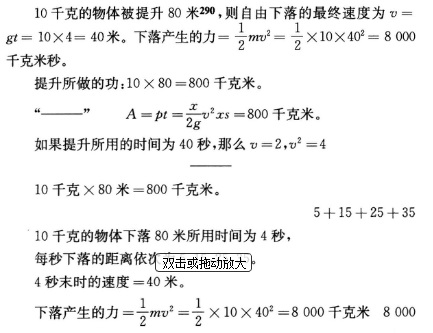
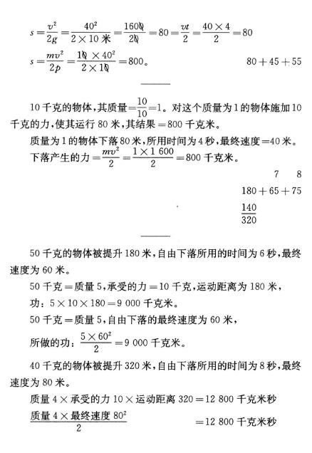
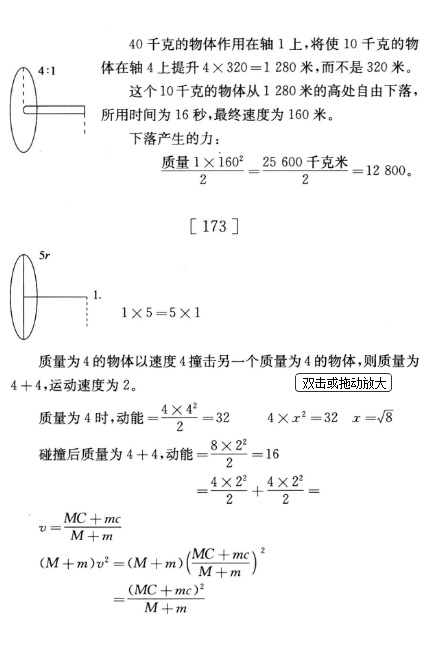290
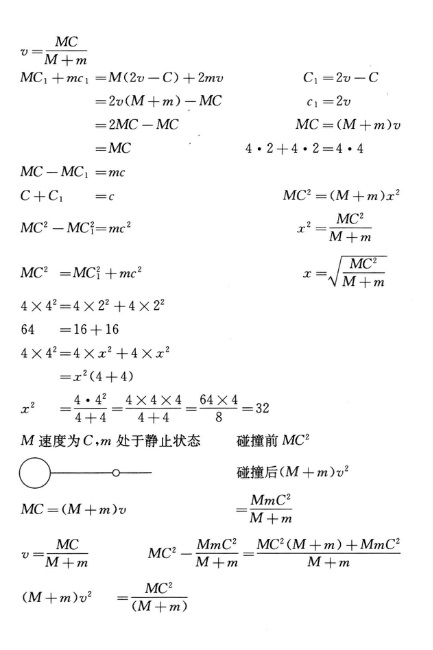
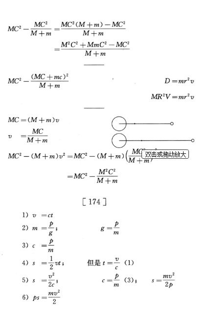
[数学]
[160]
关于现实世界中数学上的无限之原型291
Ⅰ
加在第17—18页上(361)：思维和存在的一致。——数学上的无限
我们的主观思维和客观世界遵循同一些规律，因而两者的结果最终不能互相矛盾，而必须彼此一致，这个事实绝对地支配着我们的整个理论思维。这个事实是我们理论思维的不以意志为转移的和无条件的前提。18世纪的唯物主义，由于它的本质上形而上学的性质，只是从内容方面研究这个前提。它只限于证明一切思维和知识的内容都应当来源于感性的经验，并且重新提出下面这个命题：感觉中未曾有过的东西，理智中也不存在292。只有现代的唯心主义的、同时也是辩证的哲学，特别是黑格尔，才又从形式方面研究了这个前提。尽管我们在这里遇到无数的任意虚构和凭空臆造，尽管这种哲学的结果——思维和存在的统一——采取了唯心主义的头足倒置的形式，可是不容否认，这种哲学在许多场合下和在极不相同的领域中证明了思维过程同自然过程和历史过程是类似的，反过来也一样，并且证明了同一些规律对所有这些过程都是适用的。另一方面，现代自然科学已经把一切思维内容都来源于经验这一命题以某种方式加以扩展，以致把这个命题的旧的形而上学的限制和表述完全抛弃了。它由于承认了获得性状的遗传，便把经验的主体从个体扩大到类；每一个体都必须亲自取得经验，这不再是必要的了，个体的个别经验在某种程度上可以由个体的历代祖先的经验的结果来代替。例如，在我们中间，一些数学公理对每个八岁的儿童来说都好像是不言自明的，用不着通过经验来证明，这只是“累积的遗传”的结果。想用证明的方法向一个布须曼人或澳大利亚黑人传授这些公理，这可能是困难的。
在本书(362)中，辩证法被看做关于一切运动的最普遍的规律的科学。这就是说，辩证法的规律无论对自然界中和人类历史中的运动，还是对思维的运动，都必定是同样适用的。一个这样的规律可以在这三个领域中的两个领域中，甚至在所有三个领域中被认识到，只有形而上学的懒汉才不明白他所认识到的是同一个规律。
让我们举一个例子。在一切理论进展中，同17世纪下半叶发明微积分比较起来，未必再有别的东西会被看做人的精神如此崇高的胜利。如果说在什么地方可以出现人的精神的纯粹的和唯一的业绩，那就正是在这里。至今仍围绕着微积分中所运用的各种数量（各阶的微分和无限）的那种奥秘，是下述事实的最好的证据：人们总是以为，这里所研究的是人的精神的纯粹的“自由创造物和想象物”(363)，而客观世界提供不出任何相应的东西。然而实际情形恰恰相反。自然界对这一切想象的量都提供了样本。
我们的几何学是从空间关系出发，我们的算术和代数学是从数量出发，这些数量是同我们的地球上的各种关系相适应的，就是说，是同力学称之为质量的物体大小相适应的，这些质量是出现在地球上并由人使之运动的。和这些质量比起来，地球的质量显得是无限大的，并且也被地球上的力学当做无限大来看待。地球半径＝∞，这是整个力学在考察落体定律时的原则。但是，当我们所考察的是那些用天文望远镜才能观察到的恒星系中的、必须以光年来估算的距离时，不只是地球，而且整个太阳系以及其中呈现出的各种距离，又都成为无限小了。这样，我们在这里不仅已经有了第一阶的无限，而且还有了第二阶的无限，我们的读者高兴的话，还可以凭自己的想象构造出无限空间里的其他的更高阶的无限。
但是，按照现在物理学和化学中流行的观点，力学所研究的地球上的质量，即物体，都是由分子构成的，而分子是最小的微粒，如果不破坏所研究的物体的物理的和化学的同一性，便不能再加以分割。根据威·汤姆生的计算，最小的分子的直径不能小于五千万之一毫米293。但是，即使我们假定最大的分子的直径甚至达到二千五百万分之一毫米，那么，同力学、物理学、甚至化学所研究的最小的质量比较起来，分子仍然是一个非常微小的量。尽管如此，分子还是具有所考察的质量的一切特性，可以在物理学上和化学上代表质量，而且在一切化学方程式中确实代表着质量。一句话，分子同相应的质量相比具有完全相同的特性，正如数学上的微分同其变数相比具有完全相同的特性一样。唯一的差别是：在微分中，在数学的抽象中，在我们看来似乎是神秘的和无法解释的东西，在这里却是不言自明的，并且可以说是一目了然的。
自然界使用这些微分即分子的方式和所遵循的规律，与数学使用数学中的抽象的微分的方式和规律是完全相同的。例如：x3的微分是3x2dx，这里略去了3xd x2和dx3。如果我们按几何学来设想，我们就可以得到一个边长为x的立方体，其边长按无限小dx量增大。我们假定这一立方体是由一种可升华的元素构成的，比方说，是由硫磺构成的；再假定构成一个角的三面被遮盖起来，另三面是露着的。我们把这个硫磺立方体放在硫磺蒸气中，再把气体温度降低足够的度数，于是硫磺蒸气就凝结在这个立方体的露着的三面上。如果我们设想这是一个以纯粹的状态发生的过程，因而假定在这三面的每一面上最初凝结了一个分子厚的一层，那么我们就完全没有超出物理学和化学惯用的实验方法。立方体各边的长度x增大了一个分子直径的长度dx。立方体的容积x3增加x3和x3+3x2dx+3xdx2+dx3之差，按照数学中的同一理由，我们可以略去dx3和3xdx2，即略去一个分子和联成直线的长度为x+dx的三排分子。结果是一样的：这个立方体的质量增加了3x2dx。
严格说来，硫磺立方体上并不存在dx3和3xdx2，因为在同一空间内不能有两个或三个分子存在，因而这个立方体的质量的增量恰好是3x2dx+3xdx+dx。这可以由下述事实来说明：在数学上dx是一个线性量，而大家知道，这种没有厚和宽的线在自然界中并不能独立地存在，因此数学的抽象也只是在纯数学中才是无条件地有效的。既然这个3xdx2+dx3也可以略去，所以也就没有什么差别了。
蒸气的情形也是一样，如果一杯水的最上面的一层分子蒸发了，那么水层的高度x就减少了dx，这样一层分子又一层分子地蒸发下去，事实上就是一个连续的微分。如果热的水蒸气在一个容器中由于压力和冷却又凝结成水，而且分子一层又一层地累积起来（在这里，我们必须把那些使过程变得不纯粹的次要情况撇开不谈），直到容器满了为止，那么这里就不折不扣地发生了一种积分，这种积分和数学上的积分不同的地方只在于：一种是由人的头脑有意识地完成的，另一种是由自然界无意识地完成的。不过，和微积分运算完全类似的过程，不仅仅发生在从液态到气态或从气态到液态的转变中。当物体运动由于碰撞而中止，并转化为热即分子运动的时候，那么这不是物质运动发生微分，又是什么呢？当水蒸气的分子运动在蒸汽机的汽缸中累积起来，把活塞冲高一定的距离并且自身转化为物质运动的时候，这种运动不是被积分了吗？化学把分子分解为原子，即具有更小的质量和空间广延的量，然而是同阶的量，所以二者相互间保持一定的、有限的比值。因此，表示物体的分子组合的一切化学方程式，就形式来说是微分方程式。但是这些方程式由于其中所表示的原子量实际上已经积分化了。化学所计算的正是量的相互关系为已知的微分。
但是，原子决不能被看做单一的东西或者被笼统看做已知的最小的物质粒子。撇开越来越倾向于把原子看做复合的东西的化学本身不谈，大多数物理学家都断言：充当光辐射和热辐射的介质的宇宙以太194，同样是由分立的粒子构成的，不过这些粒子极小，以致它们同化学的原子和物理的分子的关系就像后两者同力学上质量的关系一样，也就是像d2x同dx的关系一样。因此，这里我们在现今流行的关于物质构造的观念中，同样看到了二阶微分；每个人只要高兴，完全有理由设想：自然界中一定还存在着和d3x，d4x等等相似的各种情况。
因此，不论人们对物质构造采取什么样的观点，下面这一点是十分肯定的：物质按质量的相对的大小分成一系列大的、界限分明的组，每一组的各个成员在质量上各有一定的、有限的比值，但相对于邻近的组的各个成员则具有数学意义上的无限大或无限小的比值。目力所及的恒星系，太阳系，地球上的物体，分子和原子，最后，以太粒子，都各自形成这样的一组。这种情况不会因为我们在各组之间发现中间成员而有所改变。例如，在太阳系的物体和地球上的物体之间有小行星，其中一些小行星的直径并不比罗伊斯幼系公国294的直径大些，此外还有流星等等。例如，在地球上的物体和分子之间有有机界中的细胞。这些中间环节只是证明：自然界中没有飞跃，正是因为自然界全是由飞跃所组成的。
数学计算的只要是实数，它就也要毫不犹豫地采用这个观点。对地球上的力学说来，地球的质量已经被看做无限大，而在天文学中，地球上的物体及与之相当的流星却被看做无限小，同样，对于天文学来说，只要它超出最邻近的恒星的范围来研究我们这一恒星系的构造，太阳系诸行星的距离和质量就会趋近于零。但是，数学家一旦退入他们的无法攻克的抽象堡垒，即所谓纯数学，这一切相似就都被忘却，无限就变成完全神秘的东西，而在分析中所运用的方式方法就好像成了完全不可理解的、同一切经验和一切理智相矛盾的东西。数学家们的这种处理方法令人奇怪地总是取得正确的结果，他们对这种方法与其说作说明不如说作辩解时所表现的愚蠢和荒唐，超过了例如黑格尔自然哲学的各种最坏的虚虚实实的幻想，然而面对这些幻想，数学家们和自然科学家们却害怕得难以言状。他们谴责黑格尔把抽象推到了极端，可是他们自己正是这样做的，而且规模还大得多。他们忘记了：全部所谓纯数学都是研究抽象的，它的一切数量严格说来都是想象的数量，一切抽象推到极端都变成荒谬或走向自己的反面。数学的无限是从现实中借用的，尽管是不自觉地借用的，所以它只能从现实来说明，而不能从它自身、从数学的抽象来说明。如果我们从这方面来研究现实，那么如我们看到的，我们就会发现作为数学的无限性关系的来源的现实关系，甚至会发现自然界中使这种关系起作用的数学方法的类似物。而这样一来，事情就得到了说明。（海克尔对思维和存在的同一性的糟糕的复述。但是还有连续的物质和分立的物质之间的矛盾，见黑格尔。）295
[18]
数学上的所谓公理，是数学需要用作自己的出发点的少数思维规定，数学是数量的科学；它从数量概念出发。他以不充分的方式给数量下定义，然后把这个定义中没有包含进来的数量的其他一些基本规定性，当做公理从外部补充进来，在这里，这些规定性表现为未经证明的东西，自然也是数学上无法证明的东西。对数量的分析会得出所有这些公理的规定，及数量的必然规定。斯宾塞说得对：我们所认为的这些公理的不证自明性是传承下来的，这些公理只要不是纯粹的同义反复，都是可以辩证地证明的。
[66]
统一和差异——在微分学中已经存在辩证的关系，在那里，dx是无限小，然而是起作用的并且是无所不能的。
[67]
数学问题。看来，没有什么东西比四则运算（一切数学的要素）的差异具有更牢固的基础了。然而，乘法一开始就表现为一定数目的同一数量的简约的加法，除法则表现为其简约的减法，而且除法在一种情况下，即当除数是一个分数时，可化为同此分数的倒数相乘。代数的运算却进步了很多。每一个减法（a－b）都可以用加法（－b+a）来表示，每一个除法
都可以用乘法
 来表示。至于幂运算就更进步得多。运算方法的一切固定的差异都消失了，一切都可以用相反的形式表示出来。幂可以写做方根（
），方根可以写做幂（
），1被幂除或方根除，可以写做分母的幂。，。一个数的几个幂相乘或相除，可以化为其各个指数的相加或相减。任何一个数都可以理解为并表示为任何其他一个数的幂（对数，y＝ax）。(364)而这种从一个形式到另一个相反的形式的转化，并不是一种无聊的游戏，它是数学科学的最有力的杠杆之一，如果没有它，今天就几乎无法去进行一个比较困难的计算。如果从数学中哪怕只把负指数幂和分数指数幂取消掉，那么结果会怎样呢？
来表示。至于幂运算就更进步得多。运算方法的一切固定的差异都消失了，一切都可以用相反的形式表示出来。幂可以写做方根（
），方根可以写做幂（
），1被幂除或方根除，可以写做分母的幂。，。一个数的几个幂相乘或相除，可以化为其各个指数的相加或相减。任何一个数都可以理解为并表示为任何其他一个数的幂（对数，y＝ax）。(364)而这种从一个形式到另一个相反的形式的转化，并不是一种无聊的游戏，它是数学科学的最有力的杠杆之一，如果没有它，今天就几乎无法去进行一个比较困难的计算。如果从数学中哪怕只把负指数幂和分数指数幂取消掉，那么结果会怎样呢？
（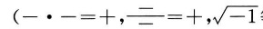）等等，应在前面说明。）
[120]
只有微分学才使自然科学能够用数学来表示过程即运动，而不仅仅表示状态。
[137]
分子和微分。维德曼（第3册第636页）296把有限的距离和分子的距离彼此直接对立起来。
[112]
量和质。数是我们所知道的最纯粹的量的规定。但是它充满了质的差异。（1）黑格尔，数目和单位。乘，除，乘方，开方。由此已经产生了黑格尔所没有强调的质的差异：质数和乘积，单根和幂。16不仅仅是16个1之和，而且也是4的2次方和2的4次方。不仅如此，质数使它和其他数相乘而得的数获得新的确定的质：只有偶数才能被2整除，类似的规定也适用于4和8。在用3做除数的情况下。有数字横和的规则。在用9和6做除数的情况下也是一样，但是在用6的情况下必须同时是偶数。在用7做除数的情况下有特殊的规则。数字游戏就建立在这上面。没有学过的人觉得莫名其妙。所以黑格尔（《量》第237页）关于算术的无思想性的说法是不正确的。但是参看《度量》297。
数学一谈到无限大和无限小，它就导入一个质的差异，这个差异甚至表现为不可克服的质的对立：量之间的差异太大了，以至它们之间不再有任何合理的关系，无法进行任何比较，它们变成在量上不可通约的了。例如，圆和直线通常是不可通约的，这也是一种辩证的质的差异；但是在这里正是同类数量的量的差异把质的差异提高到不可通约的地步。
[113]
数。单个的数在记数法中已经获得某种质，而且这要视记数法的情况而定。9不仅是1相加九次。而且是90、99、900 000等等的基数。一切数的定律都依赖于并取决于所采用的记数法。在2进位记数法和3进位记数法中，2×2不等于4，而等于100或等于11。在以奇数作基数的每种记数法中，偶数和奇数的差异不复存在了，例如在5进位记数法中，5＝10，10＝20，15＝30。同样，在这种记数法中，3的倍数3n的数字横和可以被3除尽的规则也失去作用了，9的情况也是这样（6＝11，9＝14）。因此，基数不但决定它自己的质，而且也决定其他一切数的质。
关于幂的关系，问题更进了一步：每个数都可以当做其他任何一个数的幂——有多少整数和分数，就有多少对数系统。
[116]
零是任何一个确定的量的否定，所以不是没有内容的。相反，零具有非常确定的内容。作为一切正数和负数之间的界限，作为可以既不是正又不是负的唯一真正的中性数，零不只是一个非常确定的数，而且它本身比其他一切以它为界限的数都更重要。事实上，零比其他任何一个数都有更丰富的内容。把它放在其他任何一个数的右边，按我们的记数法它就使该数变成原来的十倍。在这里，本来也可以用其他任何一个记号来代替零，但是有一个条件，即这个记号就其本身来说表示零，即等于0。因此，零本身的性质决定了零有这样的用处。而且唯有它才能够被这样应用。零乘任何一个数，都使这个数变成零；零除任何一个数，都使这个数变成无限大，零被任何一个数除，都使这个数变成无限小；它是和其他任何一个数都有无限关系的唯一的数。可以表现－∞和+∞之间的任何数，而且在每一种情况下都代表一个现实的量。——一个方程式的真实内容，只有当它的所有各项都被移到一边，从而把它的值约简为零时，才能清楚地表现出来，这在二次方程式中已是如此，而在高等代数学中几乎是一般的规则。一个函数F（x，y）＝0，同样可以使之等于z，而这个z虽然等于０，却可以像普通的因变量一样被微分，而且可以求得它的偏微商。
但是，任何一个量的无，本身还是有量的规定的，并且仅仅因此才能用零来运算。一些数学家心安理得地以上述方式用零进行运算，即把零当做特定的量的观念而用于运算，使它和其他量的观念发生量的关系，而当他们看到黑格尔把这一点概括成某物的无是一个特定的无(365)时，却大惊失色。
现在来谈（解析）几何。在这里零是一个特定的点，从这个点起，一条直线上某一方向定为正，而相反的方向定为负。因此，在这里零点不仅和表示某一正量或负量的任何点同样重要，而且比所有这些点更重要得多：它是所有这些点所依存、所有这些点与之发生关系、所有这些点由之决定的一点。在许多情况下，这个点甚至可以任意选定。但是一经选定，它就始终是全部运算的中心点，甚至常常决定其他各点（横坐标终点）所在的线的方向。例如，如果我们为了求得圆的方程式而选择圆周上的任何一点作为零点，那么横坐标轴必定通过圆心。这一切在力学中也得到应用，在那里，在计算运动时，每次选定的零点都构成整个运算的轴心。温度表上的零点是一个温度段的十分确定的下限，这个温度段可以任意分成若干度数，从而既可以用做这一温度段内各温度等级的量度，也可以用做更高温度或更低温度的量度。因此，零点在这里也是一个极其重要的点。甚至温度表上的绝对零点也决不代表纯粹的、抽象的否定，而是代表物质的十分确定的状态，即一个界限，一旦达到这个界限，分子独立运动的最后痕迹便消失了，而物质只是作为质量起着作用。总之，无论我们在什么地方碰到零，它总是代表某种十分确定的东西，而它在几何学、力学等等中的实际应用又证明：作为界限，它比其他一切以它为界限的现实的量都更加重要。
[117]
一。再没有什么东西看起来比这个数量单位更简单了，但是。只要我们把它和相应的多联系起来，并且按照它从相应的多中产生出来的不同方式加以研究，就知道再没有什么比一更为多样化了。一首先是整个正负数系统中的基数，它自身不断相加可得出其他任何数目。——一可以表示一的所有正指数幂、负指数幂和分指数幂：12， ，1-2都等于一。——一是分子和分母相等的一切分数的值。——一可以表示任何数的零次幂，因此，它是在所有对数系统中其对数都相同即都等于零的唯一的数。这样，一是把所有可能的对数系统分成两个部分的界限：如果底大于一，则一切大于一的数的对数都是正的，而一切小于一的数的对数都是负的；如果底小于一，则结果相反。因此，如果说，任何数只要是由相加起来的一所组成，因而自身包含着一，那么，一自身也同样包含着其他一切数。这不仅就可能性来说是这样。因为我们单纯用一就能构成任何数；而且就现实性来说也是这样，因为一是其他任何数的特定的幂。数学家们只要觉得合适，便不动声色地在自己的计算中引用x0＝１，或引用分子和分母相等的分数，即其值等于一的分数，因而在数学上应用包含在一中的多。可是，当人们按一般的说法对这些数学家讲，一和多是不可分的、相互渗透的两个概念，一寓于多中，同样，多也寓于一中，他们就会皱起鼻子，变起脸来。但是，只要我们一离开纯粹数的领域。就会看到情形确实如此。在测量长度、面积和体积时就已经看到，我们可以把相应量纲的任何数量当做单位，而在测量时间、重量和运动等等时也是如此。用于测量细胞，毫米和毫克还嫌太大；用于测量星球距离或光的速度，千米也嫌太小而不便使用，正如测量行星的质量，尤其是太阳的质量，千克也嫌太小了。这里清楚地表明，在这个乍看起来十分简单的单位概念中包含着何等的多样性和多。
[69]
零次幂。在对数序列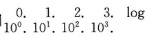中，零次幂是很重要的。一切变数都会在某个地方经过一；因此，如果x＝0，那么以变数作为指数的常数ax＝1。a0＝l所表现的，不外是和a的幂序列的其他各项联系起来去理解的一，只有在这种情形下这才有意义，才能得出结果（）298，否则就不成。由此可知：尽管一看起来和自身多么等同，它本身却包含着无限的多样性，因为它可以是其他任何一个数的零次幂；这种多样性决不是纯粹虚构的，凡是一被看做确定的一，被看做和某个过程相联系的该过程的可变的结果之一（被看做某一变数的暂时的数值或形式）的时候，都会得到证明。
[118]
 (366)。——代数学上的负数，只是对正数而言。只是在和正数的关系中才是实在的；在这种关系之外，就其本身来说，它们纯粹是虚构的。在三角学、解析几何以及以这两者为基础的高等数学的某些分支中，它们是表示和正的运动方向相反的一定的运动方向；但是，不论从第一象限或第四象限都同样能计算出圆的正弦和正切。这样就可以把正和负直接颠倒过来。同样，在解析几何中，圆中的横坐标从圆周或从圆心开始都能够被计算出来，而且，在一切曲线中，横坐标都能够从通常定为负的方向上的曲线，[或者]从任何其他方向上的曲线被计算出来，并得出正确的、合理的曲线方程式。在这里，正只是作为负的补充而存在，反之亦然。但是代数学的抽象把负数当做独立的实数，即使是在和某些较大的正数的关系之外，也是如此。
(366)。——代数学上的负数，只是对正数而言。只是在和正数的关系中才是实在的；在这种关系之外，就其本身来说，它们纯粹是虚构的。在三角学、解析几何以及以这两者为基础的高等数学的某些分支中，它们是表示和正的运动方向相反的一定的运动方向；但是，不论从第一象限或第四象限都同样能计算出圆的正弦和正切。这样就可以把正和负直接颠倒过来。同样，在解析几何中，圆中的横坐标从圆周或从圆心开始都能够被计算出来，而且，在一切曲线中，横坐标都能够从通常定为负的方向上的曲线，[或者]从任何其他方向上的曲线被计算出来，并得出正确的、合理的曲线方程式。在这里，正只是作为负的补充而存在，反之亦然。但是代数学的抽象把负数当做独立的实数，即使是在和某些较大的正数的关系之外，也是如此。
[114]
数学。把某个确定的数，例如把一个二项式，化为无穷级数。即化为某种不确定的东西。从常识来说，这是荒谬的。但是，如果没有无穷级数和二项式定理，那我们能走多远呢？
[68]
渐近线。几何学开始于下列发现：直线和曲线是绝对对立的，直线根本不能用曲线表示，曲线也根本不能用直线表示，两者是不可通约的。但是，连圆的计算也只有用直线来表示它的圆周时才有可能。而在具有渐近线的曲线的情形下，直线完全化为曲线，曲线完全化为直线；平行的观念也同样趋于消失：两条线并不是平行的，它们不断地互相接近。但永远不相交。曲线的臂越伸越直，但永远不能完全变成直线。正如在解析几何中直线被看做曲率无限小的一次曲线一样。而不论对数曲线的—x变得多么大，y始终不会等于0。
[70]
直线和曲线在微分中终于等同起来了：在以弧的微分构成自己的斜边（用切线法）的微分三角形中，我们可以把这个斜边看做
“既是弧的要素又是切线的要素的一条小直线”，——不管我们把曲线看做由无限多的直线所构成，还是“看做真正的曲线；因为在每个M点上曲率既然是无限小的，所以曲线要素和切线要素的最后关系显然是等同的关系”。
在这里，关系虽然不断地接近等同的关系，但是根据曲线的本性来说这种接近是渐近的，因为相切处局限在一个无长度的点上，不过最后还是可以假定，直线和曲线的等同是达到了。（波绪《微积分》共和六年巴黎版第1卷第149页）在极曲线(367)中，虚构的微分横坐标甚至被假定和实在的横坐标平行，并根据这个假定进行运算。虽然两者相交于极上；由此甚至推论出两个三角形的相似性，其中一个三角形有一个角刚好在这样两条线的交点上，而这两条线的平行却是整个相似性的基础！（图17）299(368)
[139]
三角学。在综合几何学从三角形本身详述了三角形的性质并且再没有什么新东西可说之后，一个更广阔的天地被一个非常简单的、彻底辩证的方法开拓出来了。三角形不再被孤立地只从它本身来考察，而是和另一种图形，和圆联系起来考察。每一个直角三角形都可以看做一个圆的附属物：如果斜边＝r，则两条直角边分别为正弦和余弦；如果其中的一条直角边＝r，则另一条直角边＝正切，而斜边＝正割。这样一来，边和角便得到了完全不同的、特定的相互关系，如果不把三角形和圆这样联系起来，这些关系是决不能发现和利用的。于是一种崭新的三角理论发展起来了，它远远地超过旧的三角理论而且到处可以应用，因为任何一个三角形都可以分成两个直角三角形。三角学从综合几何学中发展出来，这对辩证法来说是一个很好的例证。说明辩证法怎样从事物的相互联系中理解事物，而不是孤立地理解事物。
[119]
数学的应用：在固体力学中是绝对的，在气体力学中是近似的，在液体力学中已经比较困难了，在物理学中多半是尝试性的和相对的，在化学中是具有最简单本性的简单的一次方程式，在生物学中＝0。
[142]
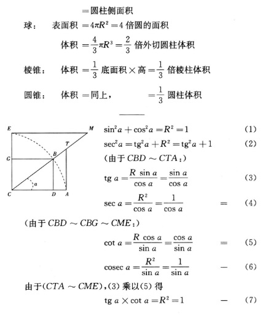
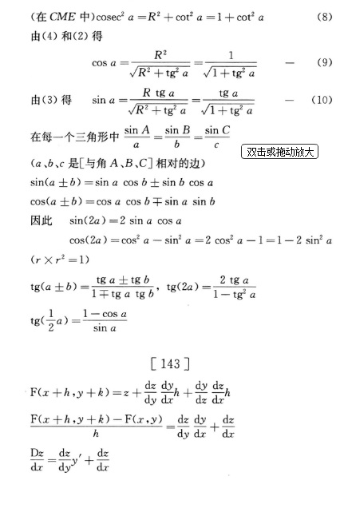
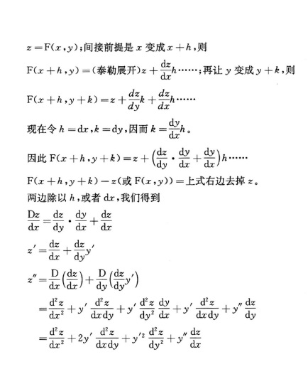
[力学和天文学]
[63]
辩证思维的必要性的例子和自然界中非固定的范畴和关系的例子：落体定律，它在物体下落数分钟时便不正确了，因为这时不能再假设地球的半径＝∞而毫无误差了，而且地球的引力在增大，而不像伽利略的落体定律所假定的那样保持不变。尽管如此，现在学校里还在继续讲授这个定律，而对保留条件却避而不谈！
[7]
牛顿的引力和离心力——形而上学思维的例子：问题没有解答，而只是提出，然而却被当做答案来讲授。克劳修斯的热的消散的见解也是如此300。
[34]
牛顿的万有引力。能够给予它的最好的评价就是：它不是解释而是描述行星运动的现状。运动是既定的。太阳的引力也是既定的。应当怎样用这些数据来解释运动呢？用力的平行四边形，用一种切线力来解释，这种切线力现在已成为我们不得不采用的必要假定。这就是说，如果我们以现有状态的永恒性为前提，我们就需要有一个第一推动，上帝。但是，现有的行星状态并不是永恒的，而运动原初也不是复合的，而是简单的旋转，力的平行四边形用在这里是错误的，因为它不只是要说明尚待发现的未知数x，就是说，牛顿所要求的，不只是提出问题，而且还要解答问题。
[74]
牛顿的力的平行四边形在太阳系中至多在环行天体分离出来的一刹那间是正确的，因为这时的旋转运动自身处于矛盾之中，它一方面表现为引力，另一方面又表现为切线力。但是，只要分离一完成，运动又重新成为统一的。这种分离必然会发生，这是辩证过程的证据。
[8]
拉普拉斯的理论只是以运动着的物质为前提——悬浮在宇宙空间中的一切物体都必然旋转。
[91]
梅特勒，恒星301。
哈雷在18世纪初叶，根据依巴谷和弗拉姆斯蒂德两人关于三颗星的报告之间的差异，首先得出了星体自行的观念（第410页）。——弗拉姆斯蒂德的《不列颠星表》是第一本比较精确、比较完备的星表（第420页）；后来在1750年前后有布拉德莱、马斯基林和拉朗德的观测。
关于巨大天体的光线射程的荒唐理论和梅特勒据此所作的推算，与黑格尔《自然哲学》中的某种东西一样荒唐（第424—425页）。
恒星最大的自行（可见的）每百年为701″＝11′41″＝太阳直径的
 从天文望远镜中观测到的921颗星的自行的最小平均值是8.65″，个别的为4″。
从天文望远镜中观测到的921颗星的自行的最小平均值是8.65″，个别的为4″。
银河——一系列的环，它们都有一个共同的重心（第434页）。
昴星团和其中的昴宿六（金牛座η），是“直到银河最远区域”的我们的宇宙岛的运动中心（第448页）。昴星团内部的公转周期平均约为200万年（第449页）。在昴星团周围，星多和星少的环状星团交替出现。——赛奇对于现在就把一个中心确定下来的可能性提出异议。
据贝塞尔说，天狼星和南河三星除一般的运动之外，还在环绕某一暗体的轨道上运行（第450页）。大陵五食，每3天一次，持续8小时，是由光谱分析证实的（赛奇，第786页）。
在银河区域中，然而是在它的深远的内部，有一个由7到11等星组成的稠密的环；在远离这个环之外的地方是一些同心的银河环，我们能看见其中的两个。据赫歇尔说，在银河中，用他的天文望远镜所能看到的星约有1800万个，位于环内的星约有200万个或更多，就是说总共超过2000万个。此外，在银河本身中，在已经分辨出来的星的背后，始终存在着一种无法分辨的微光，因此很可能还有一些更遥远的、隐而不见的星环吧？（第451—452页）
昴宿六距太阳573光年。由能够看见的各星体组成的银河环的直径，至少为8000光年。（第462—463页）
在以太阳到昴宿六的距离573光年为半径的范围内运动着的天体的质量，共计是11 800万个太阳质量（第462页）；这和在其中运动着的至多200万个星体是完全不符合的。有暗体吗？这里无论如何有点错误。这证明我们的观测的先决条件还是多么不完备。
梅特勒假定银河环最外端的距离为几万光年，也许为几十万光年（第464页）。
一个反对所谓光的吸收的绝妙理由：
“当然存在着这样的距离〈从那里再也没有任何光能达到我们这里〉，然而理由却完全不同。光的速度是有限的；从创世之初直到现在，消逝的是一段有限的时间，因此我们只能看到光在那段有限时间里所经过的距离以内的天体！”（第466页）
光既然与距离的平方成比例地减弱，它就必定会达到一点，在这一点上，我们的眼睛，不管它们如何敏锐和配上什么样的装备，都再也看不见光了，这是不言而喻的；这已经足以驳倒奥伯斯的见解：只有用光的吸收才能说明，为什么四面八方、远及无限距离都充满着发光星体的天空会是昏暗的。但这决不是说，并不存在这样一个距离，一到这个距离，以太便不再让光通过了。
[92]
星云。它有各种形状：轮廓分明的，圆的，椭圆的，或不规则的和锯齿状的。它有各种程度的可分辨性，直到模糊得完全不可分辨，只能识别出趋向中心的密集。在一些可分辨的星云中，可以看见的达1万颗星，中心多半是比较密集的，很难得有一颗较明亮的中心星。罗斯的巨型天文望远镜又分辨出许多星云。老赫歇尔数出了197个星群和2 300个星云，此外还应加上小赫歇尔在南天星表中所记录的星云。不规则的星云必定是遥远的宇宙岛，因为云雾体只能以球体或椭圆体的形式处于平衡状态。这些星云大多数甚至在最高倍的天文望远镜中也只是刚刚能看到。圆形的星云或许可能是云雾体，在上述的2 500个星云中有78个是这种云雾体。至于它们和我们的距离，赫歇尔假定是200万光年；梅特勒——在星云的实际直径＝8 000光年这个假定下——假定是3 000万光年。因为每个天体体系和最近的天体体系的距离，至少是这些天体体系的直径的100倍，所以我们这个宇宙岛和最近的宇宙岛的距离，至少应该是8 000光年的50倍＝40万光年；这样一来，在存在着数千星云的情况下；我们就远远超出老赫歇尔的200万光年了，（[梅特勒，第485—]492页）。
赛奇：
可分辨的星云提供了连续的和普通的恒星光谱。但是本来意义上的星云“有一部分提供了连续的光谱；例如仙女座中的星云；而大多数则提供了由一条或很少几条亮线所组成的光谱；例如猎户座、人马座和天琴座中的星云；以及许许多多以行星状〈略带圆形的〉星云著称的星云”，第787页）。
（根据梅特勒的说法，第495页，仙女座中的星云是不可分辨的。——猎户座中的星云是不规则的，呈棉絮状，而且像胳膊一样伸出去！第495页——天琴座中的星云呈环状，略带椭圆形，第498页。）
哈金斯在第4374号（赫歇尔星表）星云的光谱中发现了三条亮线，“由此立即推论出：这个星云并不是由单个的星体所组成的星群，而是一个真正的星云，是气体状态的炽热的实体”[第787页]。
这三条线中，一条属于氮，一条属于氢，第三条未知。猎户座中的星云的情况也是一样。甚至含有发光点的星云（长蛇座和人马座）也有这些亮线，因此密集中的星体的物质还不是固态或液态（第789页）。天琴座的星云只有一条氮线（第789页）。——猎户座的星云最密集的地方是1°，全部广延是4°[第790—791页]。
[93]
赛奇：天狼星：
“11年以后〈即贝塞尔的计算11年后，梅特勒，第450页〉……不但发现了天狼星的卫星，一颗自己发光的6等星，而且还证实了它的轨道也和贝塞尔所计算的相符合。南河三星及其伴星的轨道现在已由奥沃斯确定了，但是这颗卫星本身还没有观察到。”（第793页）
赛奇：恒星。
“因为恒星除了两三个例外，都没有可觉察到的视差，所以它们离我们至少”有30多光年之远（第799页）。
据赛奇说，（赫歇尔的大望远镜还能分辨出的）16等星离我们有7 560光年之远，而罗斯的望远镜所能分辨出的，至少有20 900光年之远（第802页）。
赛奇自问道（第810页）：
当太阳和整个太阳系死灭的时候，“自然界中是否存在着力量能把死了的星系恢复到最初的炽热的星云状态，并使它再度获得新的生命呢？我们不知道”。### $$$
[177]
潮汐摩擦。康德和汤姆生—泰特
地球的自转和月球的引力302
汤姆生和泰特《自然哲学论》第1卷第191页（第276节）：
“凡像地球这样有一部分自由表面被液体覆盖着的天体，都存在来自摩擦的间接的阻抗，这种摩擦阻碍着潮汐运动。当这些天体和邻近的天体相对运动时，这些阻抗必定总是从它们的相对运动中不断吸取能量。如果我们首先单独考察月球对地球及其海洋、湖泊、河流的作用，我们就会看到，这个作用势必使地球绕自己的轴而自转的周期和这两个天体绕它们的惯性中心而旋转的周期相等；因为只要这两个周期不相同，地球表面的潮汐作用必然从这两个天体的运动中不断吸取能量。为了比较详细地考察一下这个问题，同时为了避免不必要的麻烦，我们假设月球是一个匀称的球体。月球质量和地球质量之间引力的相互作用和反作用，相当于沿某条经过月球中心的直线起作用的单独的力，而且只要地球自转的周期小于月球绕地球运动的周期，这个力就阻碍地球的自转。因此，它必定沿着MQ这条线发生作用，因而偏离地心OQ这样一段距离；这个偏离在示意图中当然是被大大扩大了。现在，沿直线MQ实际作用于月球的力可以设想是由两股力合成的，一股是沿着指向地心的直线MO发生作用，其大小和整个力差不多相等，另一股是相对说来甚小的力，它沿着垂直于MO的直线MT起作用。后一股力极接近于和月球的轨道相切，其作用和月球的运动是同向的。如果这个力突然开始发生作用，它首先会使月球的运行速度加快；经过一段时间，月球就会由于加速运行而同地球拉开一段距离，这使得它（由于它是抵抗着地球的引力而运动的）正好失去它从切线加速力所得来的速度。持续不断的切线力顺着运动方向发生作用，但是它的量很小，每一瞬间只能导致和圆形轨道稍有偏离。这种切线力的作用就在于，它会逐渐拉大卫星和中心天体的距离，并且抵抗中心天体的引力做功，而它所做的功又等于运动失去的动能。如果想象这个环绕中心天体的运动是沿着极其缓慢地扩展着的螺旋形轨道运行的，问题就容易理解了。假设力和距离的平方成反比，那么重力的反运动方向的切线分力，将是顺运动方向的起干扰作用的切线力的两倍，因此，抵抗前者所做的功，有一半是由后者做的，而另一半则是从运动中吸取来的动能做的。我们现在所考察的起干扰作用的特殊原因对月球运动所发生的全部作用，很容易由动量矩原理求出。我们看到，地球的惯性中心和月球的惯性中心相对于它们共同的惯性中心而运动，由它们的运动随时得到的动量矩，等于地球绕自己的轴自转而损失的动量矩。处于现今运动状态的月球的惯性中心和地球的惯性中心的动量矩之和，约为现今地球自转的动量矩的4.45倍。前一个运动的平均平面是黄道面，所以两个动量的轴互成23°27.5′的平均倾角，如果略去太阳对月球运动动平面的影响，这个角度就可以看做两个轴现今的实际的交角。因此，合成的或总的动量矩为现今地球自转的动量矩的5.38倍，其轴和地轴成19°13′交角。所以落潮和涨潮最终导致地球和月球以这个合成的动量矩围绕这个合成的轴作简单的等速转动，就好像它们是同一个刚体的两个部分一样：在这种条件下，月球和地球间的距离会（大约）按1∶1.46的比例（即两个惯性中心现今的动量矩的平方与总的动量矩的平方之比）加大，而公转的周期则按1∶1.77的比例（即这两个动量矩的立方之比）加大。因此，距离会增大到347 100英里，而周期会延长到48.36天。假如宇宙中除了地球和月球不再有其他的天体，那么这两个天体就会沿圆形轨道围绕它们共同的惯性中心永远这样运行下去，而地球则以同一周期围绕自己的轴旋转，结果总是以同一个面朝向月球，因而地球表面的全部液体部分对于其固体部分来说处于相对的静止状态。但是太阳的存在使得这种状态不能永久保持下去。地球上会发生太阳潮——在地球相对太阳旋转的一个周期中有两次潮涨和两次潮落（也就是说，在一个太阳日内有两次，或者在一个月内也是如此）。如果不是因为液体的摩擦会使能量有所丧失，这种情况是不可能发生的。要把地球和月球运动中由这种原因所造成的干扰的整个过程描绘出来是不容易的，但是这种干扰归根到底会导致这样的结果：地球、月球和太阳像一个刚体的各个部分一样围绕它们共同的惯性中心旋转。”
1754年，康德首先提出了这样的观点：地球自转因潮汐摩擦而放慢，并且这种作用只是在这样的时候才会完结：
“那时，它〈地球〉的表面和月球将处于相对静止之中，也就是说，它围绕自己的轴旋转的周期将和月球围绕地球旋转的周期相等，结果将总是以同一个面朝向月球。”
(369)
“如果地球完全是固体，没有任何液体，那么无论太阳的引力还是月球的引力，都不会改变它绕轴的自由旋转，因为这种引力对地球的东西两个部分的吸引力是相同的，因而不会引起向哪一方偏斜；所以，它一点也不妨碍地球继续完全自由地自转，就好像没有受到任何外来的影响一样。”
(370)
这个较为一般的见解由汤姆生和泰特在上文作了阐发。月球和太阳的引力不仅对地球或地球表面上的液体发生作用，而且对整个地球都发生作用，阻碍着地球的自转。只要地球自转的周期和月球围绕地球旋转的周期不一致，月球的引力（暂且只考察这种引力）的作用就会促使这两个周期彼此越来越接近。如果（相对的）中心天体自转的周期比卫星公转的周期长，那么前者会逐渐缩短；如果前者较短，就像地球的情形那样，那么它会变长。但是，动能不可能在一种情况下凭空产生，也不可能在另一种情况下归于消灭。在前一种情况下，卫星越来越接近中心天体，它的公转周期逐渐缩短；在后一种情况下，它离中心天体越来越远，公转周期变长。在前一种情况下，卫星由于接近中心天体而失去的位能，正好等于中心天体由于自转速度加快而得到的动能；在后一种情况下，卫星由于和中心天体的距离加大而得到的位能，正好等于中心天体所失去的自转的动能。地月系统中所存在的动力学能量，即位能和动能的总和不变；这个系统完全是保守的。
可见，这个理论和所考察的天体的物理化学性质完全无关。它是从自由天体的一般运动规律中得出的，这些天体之间的联系是由同质量成正比而同距离的平方成反比的引力所确立的。这一理论显然是作为康德的潮汐摩擦理论的一般化而产生的，并且汤姆生和泰特在这里甚至是把它当做对后一理论的数学论证向我们表述的。但是实际上它把潮汐摩擦这种特殊情况排除在外了。令人奇怪的是，对于这一点，这两位作者连想也没有想到。
摩擦是物体运动的障碍，几百年来都被看做是物体运动的消灭，即动能的消灭。现在我们知道，摩擦和碰撞是动能借以转化为分子能，转化为热的两种形式。因此，每当发生摩擦时，动能本身就失掉，可是又再现出来，但不是作为动力学上的位能，而是作为热这一特定形式的分子运动。可见，由于摩擦而失掉的动能，从所考察的系统的动力学方面来说，暂时确实是失掉了。只有当它从热的形式反过来又转化为动能时，才能重新起动力学意义上的作用。
那么，潮汐摩擦的情况又是怎样的呢？显然，由月球的引力传给地球表面的水的全部动能，在这里也转化为热，这或者是由于水的粘滞性所造成的水的各个质点的相互摩擦，或者是由于水与地球固体表面的摩擦和阻抗潮汐运动的岩石的破碎。在这些热中，只有促进水面蒸发的微不足道的一部分反过来又转化为动能。但是，整个地月系统传给地球表面某一个部分的这点微不足道的动能，也会暂时留在地球表面上，经受那里起作用的各种条件的影响，而这些条件则给活动在地球表面上的一切能量准备了同一个最终命运：最后转化为热并放射到宇宙空间中去。
可见，就潮汐摩擦无可辩驳地阻碍地球的自转而言，这方面耗费的动能，对于地月动力学系统来说，是绝对地失掉了。所以，它不能以动力学上的位能的形式在这个系统内部再现。换句话说，由于月球的引力而在阻碍地球自转方面耗费的动能，只有对地球上的固体发生作用的那一部分，能够作为动力学上的位能完全再现，也就是能够通过月球距离的相应拉大而得到抵偿。至于对地球上的液体发生作用的那一部分动能，只有当它不使这些液体本身按同地球自转相反的方向运动时，才可能是这样，因为这种运动会完全转化为热，并由于放射出去而从系统中最终失去。
关于地球表面的潮汐摩擦的情况，也同样适用于有时作为假说提出的假想的流体地心的潮汐摩擦。
这里颇为奇怪的是，汤姆生和泰特竟没有注意到，他们为了论证潮汐摩擦理论却提出了以下面这个默认的前提为出发点的理论，这个前提就是：地球是一个完完全全的刚体，决不可能有潮汐，因而也不可能有潮汐摩擦。
[155]
笛卡儿发现，落潮和涨潮都是由月球的作用所引起的。他还和斯涅尔同时发现了光的折射的基本定律（沃尔夫在第325页上对此提出异议303），并且以他所特有的、和斯涅尔不同的方式来表述这一定律。
[62]
迈尔《热力学》第328页：康德已经讲过，落潮和涨潮对旋转的地球施加起延缓作用的压力（根据亚当斯的计算，恒星日的长度现在每千年增加百分之一秒）。
[140]
动力学中动能本身的消耗总是两重性的，并且有两重结果：（1）做出的运动功，相当量的位能的产生，但是这个量总是小于用掉的动能；（2）摩擦等等阻抗（重力除外）的克服，这些阻抗把所消耗的动能的剩余部分转化为热。——在转化回来时也是如此：依转化的方式不同，由摩擦等等而损失的一部分作为热消散了。——这一切全是老生常谈！
[154]
碰撞和摩擦。力学把碰撞的作用看做是纯粹地发生的。但是实际上并不是这样。在每次碰撞时，都有一部分机械运动转化为热，而摩擦无非是碰撞的一种形式！它不断地把机械运动转化为热（摩擦取火在远古时就已经为人所知）。
[10]
摩擦和碰撞使有关的物体产生内在的运动，即分子运动，后者视情况区分为热、电等等。然而这种运动只是暂时的，无因便无果。在一定的阶段上，这一切会转变为永久的分子变化，即化学变化。
[物理学]
[191]
热304
我们已经看到(371)，机械运动、活力消失的形式有两种。第一种是它转化为机械的位能，例如，通过提升一个重物。这种形式的特点是：这种位能不仅能重新转化为机械运动，而且是同原来的机械运动具有同样活力的机械运动，并且也只能进行这种形式变换。机械的位能决不能产生热或电，除非它事先转化为实际的机械运动。用克劳修斯的话来说，这是一个“可逆的过程”。
机械运动消失的第二种形式发生在摩擦和碰撞的场合，而这二者只是在程度上有所不同。摩擦可以看做相继和并行发生的一连串的小的碰撞，碰撞可以看做集中于一个瞬间和一个地方的摩擦。摩擦是缓慢的碰撞，碰撞是急剧的摩擦。在这里消失了的机械运动是作为机械运动本身消失的。它一时还不能自行复原。这个过程不是直接可逆的。机械运动转化为不同质的运动形式，转化为热、电——转化为分子运动的形式。
可见，摩擦和碰撞引起物体运动（力学的对象）向分子运动（物理学的对象）的转化。
当我们把物理学叫做分子运动的力学(372)时，不要忽略这样的事实：这个术语决没有涵盖现代物理学的全部领域。恰恰相反，作为光和辐射热这些现象的中介的以太振动，肯定不是今天所说的分子运动。但是以太振动在地球上的作用首先涉及分子，因为光的折射、光的偏振等等都是由相关物体的分子结构所决定的。同样，那些最著名的科学家现在几乎普遍地把电看做以太粒子的运动，而克劳修斯在谈到热的时候甚至说：
“物体内部的以太也能够参与……有重量的原子〈最好是说分子〉的运动”（《力学的热理论》第1卷第22页）。
但是，在电和热这些现象中首先要考察的确实又是分子运动，而且也不能不是这样，因为我们对于以太知之甚少。但是，一旦我们能够创立以太力学，这种力学自然就会把现在不得不归入物理学的许多东西也包括进去。
分子结构被改变甚至被破坏的种种物理过程，将在以后讨论。这些过程构成了从物理学到化学的过渡。
运动的形式变换只是由于分子运动才获得完全的自由。在力学的边界上，物体运动只能采取个别的其他形式——热或电，可是我们在这里却看到形式变换的某种完全不同的活跃状态：热在热电堆中转化为电，它在辐射的一定阶段上变得和光完全一样，并且又重新产生机械运动；电和磁像热和光一样是一对双生子，不仅可以互相转化，而且也可以转化为热和光以及机械运动。并且，这是遵循一定的量度关系的，以致每一种运动形式的一个已知量，都可以用任何其他一种形式，用千克米，用热量单位，用伏特来表示305，而每一种量度单位也都可以换算为任何其他一种。
在实践中发现机械运动可以转化为热是很古老的事情，甚至可以把这看做人类历史的发端。尽管工具和驯养动物的发明在先，但人类只是在学会摩擦取火以后，才第一次迫使一种无生命的自然力替自己服务。至今在民间还流行的迷信表明，这个具有几乎不可估量的意义的巨大进步在人类的心灵中留下了多么深刻的印象。在青铜和铁使用了很久以后，石刀这第一件工具的发明仍然受到崇敬；祭祀用的一切牲畜仍然要用石刀来处理。依据犹太传说，约书亚曾吩咐对降生在荒野上的男孩用石刀行割礼(373)；凯尔特人和日耳曼人杀人祭神时也只用石刀。这一切早已湮没无闻了。摩擦取火的情形却不一样。在人们认识其他取火方法以后很久，在大多数民族中一切圣火仍须通过摩擦来取得。甚至直到今天，在大多数欧洲国家中，民间还流行着这样一种迷信：灵火（例如我们德国的祛除畜疫的火）只可用摩擦点燃。这样，直到今天，关于人类在自然面前取得的第一个伟大胜利的满怀感激之情的回忆，有意无意地留在民间的迷信中，留在世界上最有教养的民族的残存的异教神话传说中。
可是，在摩擦取火中过程还是单方面的。这里机械运动转化为热。要使过程变得完整，它必须再反过来，必须把热转化为机械运动。这时，过程的辩证法才完满实现，过程才完成循环，至少暂时是这样。但是历史有自己的进程，不管这种进程归根到底多么合乎辩证法，辩证法往往还是要等待历史很久。在发现摩擦取火以后，不得不经历好几万年，亚历山大里亚的希罗（公元前120年前后）才发明一种机械，以其自身喷出的水蒸汽推动自身旋转。又过了差不多两千年，才产生了第一台蒸汽机，这是把热转化为真正有用的机械运动的第一部装置。
蒸汽机是第一个真正国际性的发明，而这一事实又昭示了一个巨大的历史性的进步。法国人帕潘发明了蒸汽机，而且是在德国发明的。现在我们从帕潘的书信集（由盖兰德出版(374)）中得知，汽缸和活塞的应用这一基本思路是德国人莱布尼茨提示给他的；莱布尼茨经常把自己的天才思想向周围传布，而毫不理会功绩应归于他自己还是归于别人。不久，英国人萨弗里和纽可门也发明了类似的机械：最后，他们的同胞瓦特给加上了分离的冷凝器，使蒸汽机从原理上达到了现今的水平。发明的循环在这个领域内完成了：从热到机械运动的转化实现了。以后的一切都不过是细节方面的改进而已。
这样，实践以它自己的方式解决了机械运动和热的关系问题。它先把前者转化为后者，然后再把后者转化为前者。但是理论方面的情况怎样呢？
情况真是够可怜的。虽然正是在17世纪和18世纪出现了数不胜数的游记，其中充满了关于野蛮民族的描写，说他们除了摩擦取火就不知道其他取火方法，可是物理学家们对此几乎毫不在意；他们在整个18世纪和19世纪最初几十年对蒸汽机也是同样漠不关心。他们大多满足于简单地记载各种事实。
最后，在20年代，萨迪·卡诺着手研究这个问题，而且研究得很巧妙，以致他所作的、随后由克拉佩龙以几何学方式加以表述的出色计算，直到今天还被克劳修斯和克拉克·麦克斯韦所采用，并且他差不多已经寻究到问题的根底。妨碍他完全解决这个问题的，并不是事实材料不足，而只是一种先入为主的错误理论。而且这种错误理论并不是某种邪恶的哲学强加给物理学家的，它是物理学家用他们自己的似乎比形而上学哲学思维方式高明得多的自然主义思维方式苦思冥想出来的。
在17世纪，至少是在英国，热被看做物体的一种特性，看做
“一种特殊的运动”（其本质从未得到过令人满意的解释的一种特殊的运动）。
这是托·汤姆生在力学的热理论被揭示前两年对热的描述（《热学和电学概论》1840年伦敦第2版[第281页]）。但是在18世纪，下述观点越来越占上风：热和光、电、磁一样，也是一种特殊的实体；所有这些独特的实体和普通物质的区别就在于它们没有重量，不可称量。
电和热一样，也具有某种无所不在的性质，只不过方式不同而已。地球上发生的任何变化，几乎无不同时显示出电的现象。水的蒸发，火的燃烧，两块不同的或温度不同的金属相接触，或者铁和五水硫酸铜的溶液相接触等等，当这类现象发生时，除了明显的物理现象和化学现象外，同时还有电的过程发生。我们越是精细地考察千差万别的自然过程，就越多地碰到电的踪影。尽管电无所不在，尽管近半个世纪以来电越来越多地被用于工业来为人类服务，可是，在电这种运动形式的性质方面仍然笼罩着一大团迷雾。电流的发现比氧的发现大约晚25年，而前者对于电学同后者对于化学至少是一样重要的。可是直到今天，这两个领域的差别还是多么大啊！在化学中，特别是由于道尔顿发现了原子量，已经取得的成果都有序可循并有了相对的可靠性，已经能够系统地、差不多是有计划地向还没有被征服的领域进攻，就像有步骤地围攻一座堡垒一样。在电学中，只有一堆由陈旧的、不可靠的、既没有彻底证实也没有彻底推翻的实验拼凑成的杂乱的东西，只有许多孤立的学者在黑暗中毫无把握地摸索，从事彼此毫无联系的研究和实验，他们像一群游牧的骑手一样，分散地向未知的领域进攻。的确，在电学领域中，一个像道尔顿那样的能给整个学科提供一个中心点并为研究工作打下稳固基础的发现，现在还有待完成。电学还处于支离破碎的状态，暂时还不能建立一种无所不包的理论，从根本上说，正是这一情况使得片面的经验在这个领域中占优势。这种经验甚至竭力拒绝思维，正因为如此，它不仅错误地思维，而且也不能忠实地跟踪事实，甚至不能忠实地报告事实，结果就变成和实际经验相反的东西。
有些自然科学家先生竟在背后大骂德国自然哲学的荒诞的先验思辨，如果说对于这班先生应该奉劝他们去读一读同时代的甚至晚些时候的经验派理论物理学的著作，那么，对于电学来说，就更应该这样做了。就拿1840年出版的托马斯·汤姆生所著的《热学和电学概论》来说吧。老汤姆生在当时是一个权威；再说，他已经可以利用迄今为止最伟大的电学家法拉第的大部分著作。可是他的著作含有至少和老早以前的黑格尔自然哲学的有关章节同样荒诞的东西。例如，关于电火花的记述，可能就是从黑格尔著作的相应段落直接移植过来的。他们两人都列举了在人们还不认识电火花的真正性质和种种差别时想从电火花中发现的种种奇迹，而现在已经证明，这多半是一些特例和误解。更妙的是，汤姆生在第416页上郑重其事地叙述了戴赛尼的无稽之谈，说什么在气压上升而温度下降时，玻璃、松香、丝绸等浸入水银就发生负电，反之，在气压下降而温度上升时，就发生正电；在夏天把黄金和其他几种金属加热就发生正电，冷却就发生负电，在冬天则相反；在高气压和刮北风的时候，气温上升这些金属就产生很强的正电，气温下降就产生很强的负电，如此等等。关于汤姆生对事实的论述，就说到这里。至于先验思辨，汤姆生用来款待我们的下述关于电火花的构想，也不过是来自法拉第本人的东西：
“电火花就是放电，或者说，是许多电介质粒子因其中少数占有极小极有限空间的粒子的特殊作用而发生的极化感应状态减弱的现象。法拉第认为，发生放电现象的这少许粒子，不仅被互相推开，而且短暂间处于一种特殊的、十分活跃的〈highly exalted〉状态；就是说，它们周围的所有的力都相继投向它们，从而它们就进入一种强度也许和原子发生化学结合时的强度相当的状态；然后它们又以我们现在还不知道的某种方式把这种力放出来，就像上述原子放出自己的力一样，整个过程至此结束〈and so the end of the whole〉。最后的结果就像以金属粒子代替放电的粒子时所发生的情形一样，而且有朝一日可以证明这两种场合下的作用原理相同，似乎也不是不可能的。”
308汤姆生又说：“我之所以用法拉第的原话来叙述他的这个解释，是因为我对此还不完全了解。”
“有紧张关系的物体的特殊物质性还没有进入过程，而在其中只是以元素和灵魂的方式得到规定”，并且电是“物体固有的愤怒、固有的暴怒”，是“任何物体受到刺激时都会表现出来的”“愤怒的自我”，《自然哲学》第324节附释）。
的确，黑格尔和法拉第的基本思想是一样的。他们两人都反对那种认为电不是物质的一种状态而是某种特有的特殊物质的看法。因为在电火花中电似乎表现为独立的、自由的、脱离了一切异己的物质基础的东西，然而仍然是可以感知的东西，所以他们两人在当时的科学状况下，就必然会设想电火花是一种瞬间离开一切物质的“力”的转瞬即逝的现象形态。对我们来说，这个谜当然是已经解开了，因为我们知道，在电火花放电的时候，在两个金属电极之间确实发生了“金属粒子”的跳越，所以“有紧张关系的物体的特殊物质性”实际上“进入过程”。
大家知道，电和磁像热和光一样，最初是被看做没有重量的特殊物质。一提到电，大家知道，人们立刻就会想到两种相对立的物质、两种“流体”，一种是正的，一种是负的，这两者在正常的状态下相互中和，直到它们被所谓“电的分离力”分开为止。此外，人们可以使两个物体中的一个带正电，一个带负电；如果用第三个导电的物体把这两个物体连接起来，那么视情况不同，两个物体所带的电或者突然变成相等，或者以恒定电流为中介而变得相等。突然变得相等的现象似乎很简单而且很容易理解，但是要说明电流就困难了。有一个最简单的假说：每一次在电流中运动的要么只是正电，要么只是负电。费希纳和韦伯反对这个假说，他们认为，在闭合电路中，每一次都有一对相等的正电电流和负电电流，以相反的方向在有重量的物体分子间的通道中并行流动着，韦伯还对此作了较详细的说明。韦伯运用数学方法详细地研究了这一理论，最后得出了这样一种结果，一个函数（什么样的函数在这里无关紧要）乘以数值，而这个表示“电的单位和毫克的比值”（维德曼《流电说和电磁说》第2版第3册第569页）。对重量量度的比值，自然只能是重量间的比值。所以，片面的经验就这样只顾计算而忘记了思维，在这里竟让没有重量的电成为有重量的东西，并且把这一重量导入数学计算。
韦伯得出的公式只在一定的范围内才有意义，而亥姆霍兹早在几年以前就据此计算出和能量守恒原理相抵触的结果。1871年卡·诺伊曼提出另一个假说来反对韦伯关于两种电流以相反方向流动的假说，这个假说就是：在电流中运动的只是两种电中的一种，例如正电，而另一种，例如负电，则和物体的质量固结在一起。维德曼对这个假说作过下述评论：
“如果在韦伯所假定的以相反的方向流动而电量为±
的两个电流上，再加上一个对外部不起作用的
中性电流，它沿正电流方向流动，电量为

，那么这个假说就可以和韦伯的假说统一起来了。”（第3册第577页）
除了关于电的物质性这种观点，还立即出现了另一种观点，电只是物体的一种状态、一种“力”，或者如我们今天所说的，是运动的一种特殊形式。我们在前面已经看到，持这种观点的，前有黑格尔，后有法拉第。自从热的机械当量的发现彻底清除了关于某种独特的“热素”的观念，并证明热是一种分子运动以来，紧接着的一步就是也用新的方法来研究电，并尝试测定电的机械当量。这个尝试完全成功了。特别是焦耳、法夫尔和拉乌尔的实验，不仅确定了电流中的所谓“电动力”的热当量和机械当量，而且还证明了它和电池中通过化学过程所释放出来的能或者和电解槽中所消耗的能是完全等价的。因此，把电看做一种独特的物质流体的假设越来越站不住脚了。
但是热和电并不完全相似。电流在一些极其本质的方面和热的传导毕竟是不相同的。我们仍然不能说明，究竟是什么东西在带电的物体中运动。像在热的场合那样假设一种纯粹的分子振动，看来是不够的。从电的惊人的甚至超过光速的运动速度309来看，很难克服这样的观念：这里在物体的分子之间有某种物质的东西在运动。在这个问题上，克拉克·麦克斯韦（1864年）、汉克尔（1865年）、雷纳尔（1870年）以及埃德伦（1872年）的最新理论，都一致同意1846年法拉第凭推测首先提出的假设：电是渗透整个空间因而也渗透一切物体的弹性介质的一种运动，这种介质的分散的粒子是按照与距离平方成反比的定律互相排斥的，换句话说，电是以太粒子194的一种运动，物体的分子则参与这种运动。至于这种运动的性质，各种不同的理论就有分歧了；麦克斯韦、汉克尔和雷纳尔的理论，以对漩涡运动的最新研究为基础，依然用漩涡对这种性质作出不同方式的说明，这样一来，老笛卡儿的漩涡又重新在不断更新的领域中受到尊重。我们暂且不去更深入地研究这些理论的细节。它们彼此间的分歧是很大的，而且一定还会发生许多变化。但是在它们共同的基本观点中有一个决定性的进步：电是能穿透一切有重量物质的光以太粒子的运动，这种运动会反作用于物体的分子。这种见解调和了以前的两种见解。按照这种见解，在发生电的现象时，的确有某种与有重量物质不同的物质的东西在运动。但是这种物质的东西不是电本身，电实际上倒不如说是一种运动形式，虽然并不是有重量物质的一种直接的运动形式。以太说一方面指出一条道路，使人们摆脱关于两种对立的电流体的原始的愚蠢观念，另一方面也使人们有希望弄清楚，什么东西是电运动的真正物质基础，什么东西的运动引起电现象。
以太说已经有一个决定性的成就。大家知道，至少存在着这样一个点，在这个点上，电直接改变光的运动：它使光的偏振面旋转。克拉克·麦克斯韦根据他的前面说过的理论，计算出一个物体的电容率等于它的光折射率的平方。玻耳兹曼研究了各种非导体的介电常数，发现硫磺、树脂和石蜡的介电常数的平方根分别等于其光的折射率。最大的误差——在硫磺中——仅为百分之四。这样一来，麦克斯韦的以太说恰好就由实验证实了。
但是，要通过一系列新的实验从这些本来互相矛盾的假说中剥出一个坚实的内核来，还需要经过较长的时间和花费很多劳动。在此以前，或者在以太说也许被另一崭新的理论取代以前，电学还将处于尴尬的境地，不得不使用它本身也认为是错误的表达方法。它的一整套术语仍然是以两种电流体的观念为基础的。它仍然信口谈论“在物体中流动的电的质量”，“电在每一个分子中的分离”等等。这是一种弊病，我们已经说过，这种弊病主要是由科学目前的过渡状态所不可避免地造成的，而且在片面的经验恰好在这个研究部门中占据优势的情况下，这种弊病对于迄今为止的思想混乱的延续也起了不小的作用。
我们已经学会利用起电机产生恒定电流，反过来又利用电流产生所谓静电，并使莱顿瓶充电等等，从此，所谓静电（或称摩擦电）和动电（或称流电）之间的对立可以说是有了中介。我们在这里不谈静电的亚型，也不谈现在被当做电的一种亚型来看待的磁。对这类现象的理论上的解释，无论如何应到电流的理论中去寻找，所以我们主要谈电流的理论。
恒定电流可以由不同的方法获得。物体的机械运动最初只能直接（由摩擦）产生静电，只有耗费很大的能量，才能产生恒定电流；要使这种运动至少大部分变成电的运动，那就要以磁为中介，就像格拉姆、西门子等人的著名的磁发电机那样。热可以直接变成电流，如两种不同金属的焊接处就会发生这种情形。由化学反应释放出来的能量，在通常的环境中是以热的形式出现的，但在一定的条件下就变成电的运动。反过来，电的运动，只要具备所需要的条件，又会变成任何其他形式的运动；它可以变成物体运动（在小的规模上，可直接变成电动力学的吸引和排斥；在大的规模上，可在电磁发动机中再以磁为中介）；它可以变成热（只要不导入其他变化，这在闭合电路中就处处发生），它可以变成化学能（在接上闭合电路的电解槽和伏特计中，电流在其中可以分解用其他方法所不能分解的化合物）。
在所有这些转换中，运动的一切变化在量的方面等价这一基本定律都是适用的。或者如维德曼所说的，
“依据力的守恒定律，以任何方式为产生电流所做的[机械]功，必定等于为产生各种电流作用所做的功”]第3册第472页]。
物体运动或热转变为电(376)，在这里是不会有什么困难的；已经证明，所谓“电动力”，在第一种情况下等于消耗在这一运动上的功，在第二种情况下则“在热电堆的每一个焊接处和热电堆的绝对温度成正比”（维德曼，第3册第482页），就是说，和存在于每一个焊接处的以绝对单位计量的热量成正比。有人证明，这个定律事实上也适用于由化学能产生的电。但是在这里，问题并不那么简单，至少对于现在流行的理论来说是如此。所以我们就稍微深入地考察一下。
法夫尔的实验（1857—1858年），是通过伽伐尼电堆引起运动形式转化的一系列卓越的实验中的一个。310他把一个由5个电池组合起来的斯米电堆置于一个热量计中；把一部带有可随意连接的外露主轴和皮带轮的小型电磁发动机置于另一个热量计中。电堆中每产生1克氢，或每溶解32.6克锌（这是以克表示的锌的旧的化学当量，等于其现在的原子量65.2的一半），就有下列的结果：
A.热量计中的电堆处于闭合状态，不连接发动机时：产生的热是18 682或18 674热量单位。
B.以闭合电路把电堆和发动机连接起来，但不让发动机运转：电堆中的热是16 448热量单位，发动机中的是2 219热量单位，一共是18 667热量单位。
C.同B，但发动机运转而不提升重物：电堆中的热是13 888热量单位，发动机中的是4 769热量单位，一共是18 657热量单位。
D.同C，但是发动机提升重物，并且为此所做的机械功等于131.24千克米：电堆中的热是15 427热量单位，发动机中的是2 947热量单位，一共是18 374热量单位，和前面的18 682热量单位相比，损耗为308热量单位。但是作出的131.24千克米的机械功，如乘以1 000（为了把化学结果的克化成千克），除以热的机械当量423.5千克米286，结果就是309热量单位，这正是前面所说的损耗，即所做的机械功的热当量。
因此，运动在它的各种变化中的等价，在电的运动上（在不可避免的误差范围内）也得到了令人信服的证明。而且同样证明了伽伐尼电池的“电动力”不过是转化为电的化学能，而电池本身不过是把释放出来的化学能转化为电的一种装置、一种器具而已，这正如一部蒸汽机把供给它的热转化为机械运动一样，在两种情况下，进行这种转化的器具都不能从自身再提供另外的能量。
可是对于传统观点来说，这里就发生了一个困难。这种观点认为，电池由于电池中液体和金属相接触而产生一种“电的分离力”，它和电动力成正比，所以它对于一定的电池就代表一定量的能。传统观点所认为的电池本身固有的、即使没有化学反应也具有的能量来源，即电的分离力，同化学反应释放出来的能量间的关系是怎样的呢？如果它是同化学反应无关而独立存在的能量来源，那么它提供的能量又是从什么地方得来的呢？
这个不大清楚的问题成了伏打所建立的接触说和随后产生的电流化学说之间争论的焦点。
接触说是从电池中金属和一种或多种液体接触，或者单纯液体和液体接触而产生的电压出发，从这些电压的均等化，或闭合电路中所产生的相分离相对立的电的电压的均等化出发，来解释电流的。对于纯粹的接触说来说，这里所发生的化学变化完全是第二位的东西。与此相反，李特尔早在1805年就主张，只有激发物在接通电路以前就互相发生化学作用，电流才能形成。维德曼曾把这种较旧的化学说总括如下（第1册第784页），按照这种理论，所谓接触电，
“只有当相互接触的物体同时发生实际的化学作用，或者当化学平衡遭到破坏（即使和化学过程没有直接联系），相互接触的物体之间出现‘化学作用的倾向’的时候，才有可能发生”。
可以看出，双方都只是间接地提出电流的能量来源的问题，这在当时也几乎是别无他法的。伏打及其后继者认为下面这一点是十分自然的：不同类的物体一接触，就会产生恒定电流，所以并不需要补偿就能做一定的功。李特尔及其追随者同样也不了解，化学反应怎么竟能使电池产生电流并做功。但是就化学说而言，这一点早就由焦耳、法夫尔、拉乌尔等人阐明了，可是就接触说而言，情况却恰恰相反。它固步自封，以致在本质上还停留在原来的出发点上。所以，在今天的电学中，那些属于早已过去的时代的观念，即和能量守恒原理直接矛盾的观念还在起作用，而在过去的那个时代，人们不得不满足于把任何结果都归之于随便找到的、浮在表面上的和似是而非的原因，而不管运动是否能从无中产生。而且，即使把这些观念的最糟糕的方面加以删除、削弱、冲淡、割除、美化，也无补于事：混乱只会更加严重。
我们知道，即使更陈旧的电流化学说，也承认电池中发生接触对于形成电流是完全必要的；它只是主张，如果不同时发生化学反应，这种接触便不能产生恒定电流。而且直到今天仍然不言而喻的是，电池的接触设备恰恰是使释放出来的化学能变为电的装置，并且化学能是否以及有多少能够真正变为电的运动，本质上取决于这些接触设备。
维德曼是一个片面的经验主义者，他力图从旧的接触说中拯救出可以拯救的东西。我们就来听听他说些什么吧。他说（第1册第799页）：
“虽然化学上呈惰性的物体（例如金属）的接触作用，像人们以前所认为的那样，既不是电堆理论所必不可少的，也并不因为欧姆从这个假设中推导出自己的定律（没有这个假设这个定律也可以推导出来）并且以实验证实过这个定律的费希纳也维护过这种接触说而得到证明，但是，金属接触便产生电，这是不可否认的，至少照现有的几个实验看来是如此，即使在量的方面能够获得的结果由于不可能使互相接触的物体的表面保持绝对清洁，而总是不可避免地带有某种不可靠性。”
可以看到，接触说已经变得非常谦逊了。它承认，它对于说明电流不是必不可少的，而且既没有由欧姆在理论上，也没有由费希纳在实验上加以证明。它甚至承认，它唯一还能依靠的所谓基本实验，在量的方面总是只能够提供一些不可靠的结果，最后，它只要求我们承认电运动总是由接触引起——即使只是金属的接触！
如果接触说到此止步，那就无须再置一词来反对它了。也许应当无条件地承认，两种金属一接触就会产生电的现象，这种电可以使解剖的蛙腿痉挛，可以使验电器带电，可以引起其他各种运动。这里首先要问的只是，产生这种现象所需要的能量是从什么地方来的？
要回答这个问题，照维德曼的意见（第1册第14页），我们
“大致可做如下考察，使两块不同类的金属板A和B彼此靠近到很小的距离，它们因附着力的作用就相互吸引。它们彼此一接触，就失去了这种吸引所给予它们的运动的活力。（如果我们假设金属的分子处于不断的振动之中，那么也可能发生这样的情形：如果不同类的金属一接触，不同时振动的分子就相互接触，那么分子的振动在失去活力时就会发生变化。）失去的活力大部分变成热。而其中的一小部分就消耗在以另外的方式分配先前没有分离的电上。我们在前面已经说过，可能由于对两种电的引力不同，这两个碰在一起的物体就带上了等量的正电和负电。”
接触说变得越来越谦逊了。先是承认，以后要做如此巨大的功的强大的电分离力，本身并不具有任何固有的能量，而如果没有能量从外面传给它，它就无法起作用。后来给它指定了一个很小的能量来源，即由附着作用而致的活力，这个活力只在距离小得几乎无法测量的时候才起作用，使物体移动一个小得几乎无法测量的距离。然而这是无关紧要的：它无可否认地存在着，而且同样无可否认地在接触时消失。但是这一极小的来源对于我们的目的来说仍然提供了太多的能量：大部分变成了热，只有一小部分用于引起电的分离力。虽然大家都知道，自然界中有不少由极小的碰撞产生极强的作用的实例，可是看来维德曼自己也感觉到，他那一点点能量来源在这里是很不够的，于是便去寻找第二个可能的来源，也就是假设两种金属的分子振动在接触面上发生干涉。撇开我们在这里碰到的其他种种困难不谈，格罗夫和加西奥都证明了，根本不需要真正的接触就可以产生电，正如维德曼自己在前一页上所告诉我们的那样。总之，我们对产生电的分离力的能量来源考察得越多，这个来源就越来越枯竭了。
但是直到现在我们几乎还不知道金属接触产生电的其他能量来源。按照瑙曼的意见（《普通化学和物理化学》1877年海德堡版第675页），“接触电动力把热转化为电”，他认为“下面这个假设是很自然的：电动力引起电运动的能力，是以现有的热量为基础的，或者换句话说，是温度的一个函数”，并说这也由勒鲁从实验上加以证明。在这里，我们又完全无所适从了。金属电动序定律不容许我们求助于在总是蒙着一层几乎无法去掉的薄薄的空气和非纯净水的接触面上不断发生的微小化学过程，也就是不容许我们从接触面间的不可见的主动电解质的存在来说明电的产生。电解质在闭合电路中必然产生恒定电流；相反，仅仅由金属接触所产生的电，在电路一接通时就消失了。这里我们就接触到了关键：维德曼本人起初认为“电的分离力”只是金属所具有的，并且认为不从外面供给能量就不能做功，后来又专门为其指定了一个极其微小的能量来源，可是，这个“电的分离力”，通过化学上呈惰性的物体的接触能否产生和以什么方式产生恒定电流呢？
电动序是按这样的方式来排列各种金属的：每一种金属对于前面的一种来说带负电，对于后面的一种来说带正电。所以，如果我们把金属片按这样的顺序排列起来，例如依次为锌、锡、铁、铜、铂，我们就能在两端得到电压。但是，如果我们把这一金属序列联成一个闭合电路，使锌和铂也碰在一起，那么电压就立即均等化并消失。
“所以在列入电动序的各物体所构成的闭合电路中，要形成恒定电流是不可能的。”[第1册第45页]
维德曼还以下面这种理论上的考虑来支持这个命题：
“事实上，如果在电路中出现恒定电流，它就会在金属导体本身中产生热，这种热充其量会由于金属接触处的冷却而被抵消。无论如何，总会引起热的不均衡的分布；而且一部电磁发动机如果没有从外面供给的能量，而由电流持续地发动起来并因而做功，这是不可能的，因为当金属例如通过焊接牢牢连接在一起时，在接触处也不可能再发生足以补偿这个功的任何变化。”[第1册第44—45页]
但是，维德曼并不满足于对金属的接触电不能单独产生电流这一点作出理论上的和实验上的证明，我们将看到，他还认为必须提出一个特殊的假说，以便把接触电的作用排除在外，即使是在接触电在电流中也许起作用的场合。
因此，要从接触电到达电流，我们就得寻找其他的道路。让我们和维德曼一起这样设想：
“把两种金属，例如锌棒和铜棒的一端焊接在一起，而以第三种物体把这两种金属棒各空着的一端连接起来，这一物体对两种金属都不发生起电作用，而只传导聚集于金属表面的两种相反的电，结果使这两种电在它里面互相中和，于是电的分离力总是又恢复先前的电位差，从而在电路中产生一个无须任何补偿就能做功的恒定电流。但这又是不可能的。因此，只能导电而对其他物体不发生起电作用的物体是不可能有的。”[第1册第45页]
我们并没有比以前走得更远些，不可能创造运动这一事实又堵住了我们的道路。依靠化学上呈惰性的物体的接触，即依靠本来意义的接触电，我们永远不能产生出电流来。因此，我们就再转过身来，试试维德曼给我们指出的第三条道路：
“最后，如果我们把一块锌板和一块铜板浸入含有所谓二元化合物的液体中（这种化合物能分解为化学性质不相同的完全饱和的两种成分），例如，浸入稀盐酸（H+CI）等等中，这时，按照第27节中的说明，锌就带负电而铜则带正电。如果把这两种金属连接起来，这两种电就经过接触的地方而中和，于是正电流就经过这个地方由铜流到锌。而且，因为在这两种金属接触时出现的电的分离力使正电按同一方向流动，所以各个电的分离力的作用并没有像在金属闭合电路中那样互相抵消。因此，这里产生了一个正电恒定电流，这个电流在闭合电路中经过铜和锌的连接处由铜流到锌，再经过液体由锌流到铜。我们很快（第34节）还要回到这样一个问题上来：存在于闭合电路中的各个电的分离力，在形成电流方面实际上起了多少作用。——产生这种电流的导体组合，我们称之为伽伐尼电池，或者也叫做伽伐尼电池组。”（第1册第45页）
这样，奇迹就似乎告成了。在这里，仅仅由于接触时出现的电的分离力，恒定电流就产生了，而按照维德曼自己的说法，这种分离力如果没有从外面供给的能量，是不可能起作用的。而且，除了维德曼在前面所说的，他没有再向我们提供任何东西来对此作出说明，可见，这确实是一个十足的奇迹。在这里，关于这个过程我们学到了一些什么呢？
1.如果把锌和铜浸入含有所谓二元化合物的液体中，于是，照第27节中的说明，锌就带负电，而铜就带正电。但是在整个第27节中关于二元化合物只字未提。那里只谈到由一块锌板和一块铜板夹着一块浸过酸性溶液的布料所构成的简单的伏打电池，然后就研究由此引起的两种金属上的静电荷，而根本没有提到任何化学过程。因此，所谓二元化合物在这里是从后门偷运进来的。
2.这个二元化合物在这里究竟起什么作用，仍然是完全神秘的。它“能分解为化学性质不相同的完全饱和的两种成分”（它们分解后完全饱和？！），这一情况最多也只是在它真正分解的时候，才能教给我们一点新东西。但是，关于这一点他对我们只字未提，所以我们暂时不得不假设它是不分解的，例如烷烃就是这样。
3.因此，当锌在液体中带负电，铜带正电之后，我们就让它们（在液体外）相接触。即刻，“这两种电就经过接触的地方而中和，于是正电流就经过这个地方由铜流到锌”。为什么只有“正”电流按这一方向流动，却没有“负”电流按相反的方向流动，对此我们又一无所知。直到现在还被认为和正电同样必要的负电究竟变成了什么，我们毫无所知；而电的分离力的作用恰好在于使这两种电相游离而对立。现在负电却突然被压制下去，在一定程度上被隐藏起来了，这就显得似乎只有正电存在了。
但是后来在第51页上又作了正好相反的说明，那里说，“两种电合在一个电流中”，就是说负电和正电二者都在其中流动！谁能帮助我们摆脱这种混乱呢？
4.“而且，因为在这两种金属接触时出现的电的分离力使正电按同一方向流动，所以各个电的分离力的作用并没有像在金属闭合电路中那样互相抵消。因此，这里产生了一个恒定电流”，等等。
这说得有些过分了。因为我们会看到，维德曼在几页以后（第52页）就向我们证明，
在“形成恒定电流的时候……在金属接触处的电的分离力……必定是不起作用的”；
他还证明，即使这种分离力不使正电按同一方向流动，而是朝着电流相反的方向起作用，也不仅有电流发生，而且在这种情况下，这种分离力也不能由电池的分离力的一定部分得到补偿，所以又是不起作用的。因此，既然维德曼在第52页上认为电的分离力对于保持电流是不起作用的，他又怎么能够在第45页上把电的分离力当做形成电流的必要因素，并且还为此目的专门提出了一种假说呢？
5.“因此，这里产生了一个正电恒定电流，这个电流在闭合电路中经过铜和锌的连接处由铜流到锌，再经过液体由锌流到铜。”
但是，要使这种恒定电流“在导体本身中产生热”，并且能够由它把“一部电磁发动机发动起来并因而做功”，不供给能量是不可能的。可是这种能量的供给是否可能，它从何而来，维德曼直到现在也没有向我们透露过半个字，所以到现在为止，恒定电流还是和在前面研究过的两种场合下的情形一样，是不可能有的东西。
这一点没有人比维德曼更清楚。所以他认为最好还是尽快避开这个关于电流形成的奇异解释的许多棘手之处，而塞给读者几页有关这个仍然十分神秘的电流的热效应、化学效应、磁效应以及生理效应的种种浅薄的逸闻，而且在这里甚至例外地使用了十分通俗的语调。然后他突然接着说道（第49页）：
“我们现在应当研究一下，电的分离力在一个由两种金属和一种液体，例如由锌、铜和盐酸所构成的闭合电路中，是怎样起作用的。### $$$我们知道，当电流通过的时候，液体中所含的二元化合物（HCI）的成分就分开了：一种成分（H）在铜上游离出来，另一种等当量的成分（CI）在锌上游离出来，在这里，后一成分和等当量的锌化合成ZnCI。”
我们知道！如果说我们知道这一点，那么我们肯定不是从维德曼那里知道的，因为关于这个过程，正如我们已经看到的，至今他连半个字也没有向我们透露过。此外，如果说我们对这个过程知道一些什么，那就是它并不是像维德曼所描绘的那样。
在气体氢和气体氯形成一个HCI分子时，释放出来的能量等于22 000热量单位（尤利乌斯·汤姆森）311。因此，要把氯从它和氢的化合物中分离出来，就必须从外面供给每个HCI分子以等量的能。电池从什么地方获得这一能量呢？在维德曼的叙述中并没有告诉我们，所以我们还是自己来研究一下吧。
当氯和锌化合成氯化锌的时候，释放出的能量大大多于把氯和氢分开所必需的能量，（Zn，CI2）释放出97 210热量单位，而2（H，CI）则释放出44 000热量单位（尤·汤姆森）。这样，电池中的过程就可以说明了。所以事情并不像维德曼所说的那样，氢一下子就在铜上游离出来，而氯一下子就在锌上游离出来，“在这里”，锌和氯随即偶然地化合起来了。相反，锌和氯的化合是整个过程的最重要的基本条件，而且这个化合过程如果不发生，我们就别指望铜上会有氢游离出来。
形成一个ZnCI2分子所释放出的能量，多于两个H原子从两个HCI分子中游离出来时所耗费的能量，这一多余的能量就在电池中转化为电的运动，并且提供了电路中出现的全部“电动力”。所以并不是什么神秘的“电的分离力”在没有已经指出的能量来源的情况下使氢和氯互相分开，而是电池中所发生的整个化学过程为闭合电路中的全部“电的分离力”和“电动力”提供了它们的存在所必需的能量。
这样，我们眼下可以确定，维德曼对电流的第二种解释和他的第一种解释一样，对我们是没有什么帮助的。现在我们往下再看看他还写了些什么：
“这一过程证明：二元化合物在两种金属间的作用，不再像金属的情形那样，仅仅存在于它的全部质量对这种或那种电的简单的强势吸引，在这里还出现了它的两种成分的一种特殊作用。因为CI这一成分在正电流进入液体的地方分解出来，而H这一成分在负电流进入液体的地方分解出来，所以
我们就假设：HCI这一化合物中的每一个当量的氯都带有一定量的负电，而后者则制约着进入的正电对氯的吸引。这是化合物中带负电的成分。同样，每一当量的H都一定带有正电，所以是化合物中带正电的成分。这些电荷在H和CI化合时
可能呈现出锌和铜接触时所呈现出的那种情形。因为HCI这一化合物本身是不带电的，所以
我们必须据此
假设：其中带正电的成分的原子和带负电的成分的原子含有的正电和负电是等量的。### $$$现在如果把一块锌板和一块铜板浸入稀盐酸中，
我们就可以推测，锌对其中带负电的成分，CI的吸引比对带正电的成分，H的吸引要强些。因此，和锌接触的盐酸分子
将会这样配置其中带负电的成分趋向锌，带正电的成分趋向铜。因为这样排列起来的各个成分通过自己的电吸引作用于后面的HCI分子，所以锌板和铜板之间的分子的整个序列就排列如图10：
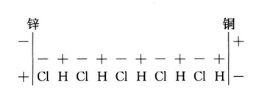
如果第二种金属对带正电的氢的作用也像锌对带负电的氯的作用一样，那么这就会促进这样的配置。如果它的作用方向相反，但是较弱，那么至少这个配置的方向是不会改变的。### $$$由于靠近锌的带负电的成分CI的负电的感应作用，电就
会这样分布于锌：锌板上同最临近的盐酸原子
(377)中的CI紧挨着的地方带正电，离得较远的地方带负电。同样，铜板上负电聚集在同临近的盐酸原子中的带正电的成分，H最靠近的地方，正电则被排斥到较远的地方。### $$$
其次，锌上面的正电就
会和最临近的CI原子所带的负电结合起来，而CI原子本身就会和锌化合。先前和这个CI原子化合在一起的带正电的H原子，就
会和趋向它的第二个HCI原子中的CI原子化合，同时这些原子中所含的电也互相结合起来；同样，第二个HCI原子中的H原子和第三个HCI原子中的CI原子
会化合起来，如此类推，直到最后，就
会有一个H原子在铜上游离出来，而它所带的正电就和分布在铜上的负电结合起来，因而它就在不带电的状态中逸出了。”这个过程会“持续重复下去，直到聚集在金属板上的电对于趋向它们的盐酸成分所带的电的排斥力和金属对这些成分的化学吸引力相互平衡为止。但是，如果用一个导体把两块金属板连接起来，那么金属板上的游离电就互相结合，而且上述过程又会重新发生。
通过这样的方式，一个恒定电流就产生了。——显然，因为移向金属的二元化合物的两个成分以一定的速度向金属运动，然后达到静止状态，或者形成一种化合物（ZnCI），或者以游离的形态（H）逸出，所以这里就不断地失去活力。”（[维德曼的]注：因为CI和H这两种成分分开时所获得的活力又被这两种成分和最临近的原子的成分结合时所失去的活力抵消了，所以这一过程的影响可以略去不提。）“失去的活力，相当于可见的化学过程中所释放出的热量，即本质上相当于一个当量的锌溶解于稀酸时所释放出的热量。其数值必定和两种电分开时所耗费的功相等。因此，如果这两种电在电流中结合起来，那么，在一个当量的锌被分解而一个当量的氢从液体中分离出来的时候，在整个闭合电路中就一定会产生功（或者是以热的形式出现，或者是以在外部做功的形式出现），而且这个功也和上述化学过程所释放出的相应的热量相当。”[第1册第49—51页]
维德曼往下又说：
“这样，在形成恒定电流时起作用的唯有电的分离力，这种力产生于电池的激发液体中二元化合物的原子由两个金属电极所引起的不相等的吸引和极化作用；在不会发生任何机械变化的金属接触处，电的分离力反而必定不起作用。前面说过，闭合电路中的全部电的分离力（和电动力）是和前面说过的化学过程的热当量完全成正比，这证明，这个分离力，如果其作用的方向同液体对金属的电的激发作用方向相反（例如把锡和铅浸入氰化钾溶液的时候），那么它就不能由金属和液体的接触处的电的分离力中得到一定量的补偿。所以这个分离力必须以另外的方式被抵消掉。这一过程按以下假设是再简单不过了：在激发液体和金属接触的时候，电动力由两种方式产生，第一种方式，是由于液体和金属的整个质量对这种或那种电的强度不相等的吸引而产生的；第二种方式，是由于金属对液体的带相反电荷的两种成分的不相等的吸引而产生的……由于第一种方式中质量[对这种或那种电的]不相等的吸引，液体完全服从于金属电动序定律，而在闭合电路中，电的分离力（和电动力）完全抵消为零；第二种方式中的化学作用则相反，只提供形成电流所必需的电的分离力以及与之相应的电动力。”（第1册第52、53页）
这样，接触说的最后残余就被顺利地排除在电流形成过程之外了，同时维德曼在第45页上提出的关于电流形成的第一个解释的最后残余也被排除了。最后毫无保留地承认：伽伐尼电池不过是把释放出来的化学能变为电的运动，变为所谓电的分离力和电动力的一种装置，正如蒸汽机是把热能变为机械运动的一种装置一样。在这两种场合下，装置只能为能量的释放和形式转化提供条件，但是本身并不提供任何能量。确定了这一点之后，我们现在还要较详细地研究一下维德曼对电流的解释的第三个方案。在这里，他是怎样描述电池的闭合电路中的能量转变的呢？
他说，显然，在电池中，“因为移向金属的二元化合物的两个成分以一定的速度向金属运动，然后达到静止状态，或者形成一种化合物（ZnCI），或者以游离的形态（H）逸出，所以这里就不断地失去活力。失去的活力，相当于可见的化学过程中所释放出的热量，即本质上相当于一个当量的锌溶解于稀酸时所释出的热量”。[第1册第51页]
首先，如果过程是纯粹地进行的，那么在电池中，当锌溶解的时候，根本不会释放出任何热量；因为释放出来的能直接变成了电，由于整个闭合电路中的电阻，电才再转变成热。
其次，活力是质量和速度平方的乘积的一半。因此，上述的命题亦可表述如下：一个当量的锌溶解于稀盐酸时所释放出的能量（＝若干卡路里），也等于离子的质量和离子向金属移动的速度平方的乘积的一半。这样来表述，这个命题显然就不对了，因为离子移动时所显示出的活力在数值上远不等于由化学过程释放出来的能量(378)。如果二者相等，那么就不会有电流产生，因为这样就没有给在闭合电路其余部分中的电流留下任何能量。因此，在维德曼那里又加了个说明：离子达到静止状态，“或者形成一种化合物，或者以游离的形态逸出”。但是，如果活力的丧失也包含着这两个过程中发生的能量转变，那么我们就真是陷入困境了。既然我们在谈到释放出的全部能量时是把这两个过程一并考虑的，那么这里就根本谈不上活力的丧失，而顶多只能说活力的获得。
可见，维德曼对这个命题本身显然并没有确定的理解，“活力的丧失”只不过是一种解围之神(379)，使他可能作出拼死的一跃，从陈旧的接触说跳到电流化学说。事实上，“活力的丧失”现在已经完成了自己的使命并退出舞台；从此以后，电池中的化学过程无可争辩地被当做产生电流的唯一的能量来源，而我们这位作者还剩下的唯一的忧虑是，怎样才能把化学上呈惰性的物体接触生电的最后残余，也就是把两种金属接触处发生作用的分离力，从电流中体面地排除出去。
当我们读到维德曼对电流形成过程的上述解释的时候，会觉得摆在面前的不过是大约四十年前正统和半正统的神学家们为对付施特劳斯、维耳克、布鲁诺·鲍威尔等人从语言学和历史学方面对圣经的批判313而采用过的一种辩护术。他们使用的方法是完全相同的，也必然是相同的，因为在这两种场合下都是要在思维着的科学面前挽救旧的传统。那种顶多只能以数学计算形式来思维的孤傲的经验，却以为自己所使用的完全是无可争辩的事实。可是实际上，它所使用的多半是因袭下来的观念，是其前辈的多半已过时的思维产品，如正电和负电、电的分离力、接触说。这些东西成为它的无穷无尽的数学计算的基础，在这些计算中，由于数学公式的严密性，各种前提的假说性质竟被轻易地忘记了。诸如此类的经验对同时代的思维成果十分怀疑，而对其前辈的思维成果却深信不疑。甚至经实验确定的事实，对这种经验来说也渐渐变得和相关的传统的解释难以分开了；最简单的电现象在描述中也由于例如偷运两种电的理论而遭到歪曲；这种经验已经不可能再正确地描述事实了，因为传统的解释已混进到这种描述中去。一句话，在电学领域里，我们碰到了和在神学领域里所碰到的同样盛行的传统。在这两个领域里，最新研究的成果，对从前不认识的事实或有争议的事实的确认，以及由此必然得出的理论结论，都无情地打击了旧的传统，所以，这种传统的维护者就陷入极为困难的境地。他们不得不求助于各种各样的诡计、种种站不住脚的借口，求助于掩盖各种不可调和的矛盾，最终堕入矛盾的迷宫，找不到任何出路。维德曼绝望地试图把以“接触力”为根据的对电流的陈旧解释和以化学能量的释放为根据的新解释用理性主义方式加以调和，正是这种对全部陈旧的电理论的信仰，使他在这里陷入无法自拔的自相矛盾之中。
也许有人会反驳说：上面对于维德曼的电流解释的批评是咬文嚼字，即使维德曼起初在表述上有一些疏忽大意和不精确之处，可是最后他毕竟提出了正确的、合乎能量守恒定律的阐述，因此，一切都还做得不错。为了回答这种反驳，让我们在这里再来看一个例子，就是他对于由锌、稀硫酸、铜组成的电池中发生的过程所作的描写。
“如果用一根导线把两块金属板连接起来，就会产生电流…… 通过电解过程，在铜板上从含有稀硫酸的水里分离出一个当量的氢，成为气泡逸出。在锌板上则生成一个当量的氧，它把锌氧化为氧化锌，而氧化锌又溶于周围的酸中成为硫酸氧化锌。”（第1册第[592—]593页）
为了把氢和氧从水中分离出来，每一个水分子需要相当于68 924个热量单位的能量。在上述电池中从哪里得到这个能量呢？“通过电解过程”。可是，电解过程从哪里得到这个能量呢：没有任何回答。
但是维德曼后来不止一次，至少有两次告诉我们（第1册第472和614页）：总的说来，“根据最新的实验，[在电解的时候]水本身并没有分解”，而在我们的例子中，是硫酸H2SO4分解了，它分解为H2和SO3+O，在分解过程中，H2和O在一定的情况下会以气态逸出。但是，这样一来，过程的整个性质改变了。H2SO4中的H2直接由两价的锌所代替而形成硫酸锌ZnSO4。一方面剩下了H2，另一方面剩下了SO3+O。两种气体按照它们结合成水的比例逸出；SO3和溶液中的水H2O重新结合成H2SO4，即硫酸。但是，在形成ZnSO4时放出的能量，不仅足以用来置换和释放硫酸中的氢，而且还有相当的剩余，这些剩余在我们的例子中便消耗在电流的形成上。这样，锌也就无须等待电解过程供给它游离的氧，以便先氧化，接着再溶解于酸中。正相反，锌直接地参加到过程中来，这个过程正是由于锌的参加才得以实现。
在这里我们看到，陈腐的化学观念怎样成了陈腐的接触观念的帮手。根据最新的观点，盐是一种酸，酸中的氢被某种金属所置换。这里所研究的过程证实了这种观点：酸中的氢被锌直接置换，这充分说明了能量的转变。维德曼所遵循的旧观点认为，盐是某种金属氧化物和某种酸的化合物，因此不说硫酸锌，而说什么硫酸氧化锌。但是，为了在我们的电池中从锌和硫酸获得硫酸氧化锌，就必须首先使锌氧化。为了使锌足够迅速地氧化，就需要有游离的氧。为了获得游离的氧，我们就必须设想——因为在铜板上出现了氢——水被分解。为了分解水，我们就需要巨大的能量。怎样得到这些能量呢？仅仅是“通过电解过程”，而这个过程本身在它的最终的化学产物“硫酸氧化锌”开始形成之前又不可能进行。孩子生妈妈。
可见，维德曼在这里也把整个过程完全弄反了，颠倒了，这是因为维德曼不假思索地把主动电解和被动电解这两个直接对立的过程混为一谈，以为它们都不过是电解而已。
到现在为止，我们所研究的还只是电池里所发生的过程，也就是剩余能量通过化学反应而被释放出来，并且通过电池的装置转变为电的过程。但是大家知道，这个过程也可以反过来：电池里从化学能中得到的恒定电流的电，又可以反过来在置于闭合电路中的电解槽中转变为化学能。两个过程显然是互相对立的：如果把前者看做化学—电的过程，那么后者就是电—化学的过程。两个过程可以在具有同样物质的同一闭合电路中发生。例如，靠气体元素工作的电池组，其电流是通过氢和氧化合成水而产生的，而在以电路连起来的电解槽中又可以按照氢和氧化合成水的比例分解出氢和氧来。通常的看法是把这两种对立的过程冠以一个共同的名称——电解，而没有把主动电解和被动电解区别开来，没有把激发液体和被动电解质区别开来。例如，维德曼用133页的篇幅来探讨电解本身，后来在结尾处附加了关于“电池中的电解”的几点评述，其中关于真正的电池中所发生的过程只占这一篇17页中的一个极小的部分。在随后的“电解理论”中，电池和电解槽的这种对立甚至连提也没有提一下；谁想在接下来的《电解对导体电阻和闭合电路中电动力的影响》这一章中寻找关于闭合电路中能量转变的某种考虑，一定会大失所望。
现在让我们来看看这个不可阻挡的“电解过程”，它无需可见的能量的输入就可以把H2和O分离，而且在该书我们现在看到的篇章中，它所起的作用和先前那个神秘的“电的分离力”起过的作用是一样的。
“除了把离子分开的第一位的、纯粹的电解过程外，由于被电流所分开的离子的作用，还发生一些第二位的、同电解过程完全无关的纯粹化学的过程。离子的这种作用会发生在电极物质上和被分解的物体上，在溶液中也会发生在溶剂上。”（第1册第481页）
现在让我们回到先前谈到的由锌和铜浸在稀硫酸中形成的电池上去。在这里，用维德曼自己的话来说，被分开的离子就是水中的H2和O。因此，按照他的说法，锌的氧化和ZnSO4的形成是第二位的、同电解过程无关的纯粹化学的过程，虽然只有通过这个过程，第一位的过程才成为可能。现在我们要稍微详细地考察一下这种由于颠倒真实的过程而必然造成的混乱。
我们首先来看看电解槽中的所谓第二位的过程，维德曼给我们举了好几个这方面的例子(380)（第481—482页）：
1.溶于水中的硫酸钠（Na2SO4）的电解。它“分解为……一个当量的SO3+O……和一个当量的Na……但是后者和溶液中的水起反应，从水中分离出一个当量的H，同时形成一个当量的苛性钠[NaOH]，苛性钠又溶解于周围的水中”。
方程式是：
Na2SO4+2H2O＝O+SO3+2NaOH+2H。
在这个例子中，实际上可以把
Na2SO4＝Na2+SO3+O
这个分解看做第一位的、电—化学的过程，而把进一步的转变
Na2+2H2O＝2NaOH+2H
看做第二位的纯粹化学的过程。但是，这个第二位的过程是直接在出现氢的那个电极上发生的；因此，这里所释放出的十分可观的能量（按照尤利乌斯·汤姆森的计算，对于Na，O，H，水来说是111 810热量单位）至少大部分转变为电，只有小部分在电解槽中直接变成热。而后一种情况也可以发生在从电池中直接或首先释放出来的化学能量上。但是，这样获得并且转变为电的能量，应当从电流所供给的用来不断分解Na2SO4的能量中减去。如果钠转变为氢氧化物在整个过程的第一个瞬间是第二位的过程，那么，从第二个瞬间起，它就成为整个过程的根本因素，因此就不再是第二位的了。
但是，在这个电解槽中还有第三种过程发生：如果SO3没有和正极的金属化合，同时又释放出能量的话，那它就和H2O化合成H2SO4，即硫酸。但是，这个转变并不一定要直接在电极上进行，因此，这里所释放出的能量（按照尤·汤姆森的计算，等于21 320热量单位）就全部或绝大部分在电解槽本身中转换为热，顶多只有极小一部分以电的形式提供给电流。由此可见，在这个电解槽中所发生的唯一的真正第二位的过程，维德曼一点也没有提到。
2.“如果把五水硫酸铜[CuSO4+5H2O]溶液置于正铜极和负铂极之间电解，那么，在同一电路中，在硫酸溶液被分解的同时，每有一个当量的水被分解，就有一个当量的铜在负铂极上分离出来；在正极上则应当有一个当量的SO4出现，但是它和电极上的铜化合成一个当量的CuSO4，并溶解于被电解的溶液的水中。”[第1册第481页]
因此，如果用现代化学的说法来描述，我们可以把这个过程设想如下：Cu在铂上沉积下来；释放出来的SO4因为本身不能独立存在，便分解为SO3+O，而O则以游离的形态逸出；SO3从溶剂中获得H2O而形成H2SO4，H2SO4又重新和电极上的铜化合而成CuSO4，H2则被释放出去。严格说来，在这里有三个过程：（1）Cu和SO4的分离；（2）SO3+O+H2O＝H2SO4+O；（3）H2SO4+Cu＝H2+CuSO4。显然可以把第一个过程看做第一位的。而把其余两个看做第二位的。但是，如果我们提出能量转变的问题，我们便会看到，第一个过程完全被第三个过程的一部分补偿了；铜和SO4的分离被两者在另一个电极上的重新结合所补偿了。如果我们撇开把铜从一个电极推向另一个电极所必需的能量不算，又撇开电池中由于能转变为热所无法避免的能量损失不算，那么，我们在这里便发现了这样一个情况：所谓第一位的过程并不从电流中取得任何能量。电流供给的能量仅仅使H2和O的分离（而且还是间接的）成为可能，这个分离是整个过程的真正的化学的结果——这就是说，仅仅实现某种第二位的或者甚至是第三位的过程。
然而，在上面的两个例子中，和在其他场合下一样，第一位过程和第二位过程的区分无疑具有某种相对的合理性。例如，在这两种场合下，除了其他过程，看来也发生了水的分解，而且水的成分分别在相反的电极上分离出来。根据最新的实验，绝对纯的水极其接近理想的非导体，因而也极其接近理想的非电解质，因此，证明下面这一点是很重要的：在这些以及这一类场合下，并不是水直接以电化学的方式被分解，而是水的成分从酸中分离出来，当然，在这里酸的形成也一定要有溶液中的水参加。
3.“如果盐酸[HCI+8H2O]……同时在两个U形管中被电解……在一只管中用的是正锌极，另一只管中用的是正铜极，那么，在第一只管中有32.53的锌溶解，而在第二只管中则有2×31.7的铜溶解。”[第1册第482页]
我们暂时撇开铜不谈，单来看锌。按照维德曼的说法，在这里，HCI的分解是第一位的过程，Zn的溶解是第二位的过程。
所以，根据这个观点，电流是从外面供给电解槽分离H和CI所必需的能量；在这种分离完成以后，CI和Zn化合，同时释放出一定的能量，这一能量应当从分离H和CI所必需的能量中减去；这样一来，电流只须供给两个能量间的差数就够了。看来一切都极其完满；但是，如果我们更进一步来观察一下这两个能量，就会发现，形成ZnCI2时所释放出的能量大于分离2HCI所消耗的能量；因而电流不仅无须供给能量，反而获得能量。现在，我们所碰到的根本不再是被动的电解质，而是激发液体，不是电解槽，而是给产生电流的电池组添加一个新单元的电池；本该看做第二位的过程，成为绝对第一位的了，成为整个过程的能量来源并使这个过程不用靠电池组提供电流了。
在这里，我们清楚地看到，维德曼的理论说明中全部的、到处出现的混乱的根源是什么。维德曼从电解出发，却不管这是主动的电解还是被动的电解，是电池还是电解槽，反正都无所谓，正像一个老少校对“一年制志愿兵”哲学博士所说的那样，“外科医生就是外科医生”314。因为在电解槽中研究电解比在电池中研究电解要简单得多，所以他实际上是从电解槽出发，把电解槽中所发生的过程，把这些过程被分为第一位和第二位这种部分合理的区分，作为衡量电池中完全相反的过程的尺度，同时却一点也没有注意到，电解槽在他手里变成电池了。因此，他可以提出这样的命题：
“分离出来的物质对于电极的化学亲和性，对电解过程本身不发生任何影响”（第1册第471页）。
这个以如此绝对的形式表达出来的命题，正如我们所看到的，是完全错误的。所以，他关于电流形成的三重理论就是：第一，以纯粹的接触为中介的陈旧的传统的理论；第二，以理解得更加抽象的电的分离力为中介的理论，这种分离力以一种无法说明的方式供给自身或“电解过程”以能量，使电池中的H和CI互相分开，并且还产生电流；最后，是现代的化学—电的理论，这个理论证明，上述能量的来源是电池中一切化学反应的代数和。他没有注意到第二种解释推翻了第一种解释，同样，他也没有觉察到第三种解释又推翻了第二种解释。相反，能量守恒定律纯粹是从外部加到从惯常经验中沿袭下来的旧理论之上的，这就像把一个新的几何定理加到以前的定理上去一样。他不知道，这个定律使得自然科学的这一领域以及其他一切领域的全部传统观点都不得不加以修正。因此，维德曼只是在解释电流时简单地确认这个定律，然后就悄悄地把它放在一边，只是在书的最末尾，在说明电流做功的那一章中才又找了出来。甚至在接触生电理论中（第1册第781页及以下几页），能量守恒在论述主要问题时也根本没有派上用场，只是在说明次要问题时偶尔提到；能量守恒始终是“第二位的过程”。
现在我们回头来看一下前面的第三个例子。在那里，两个U形管中的盐酸被同一个电流所电解，不过在一个管中锌是正极，在另一个管中铜是正极。按照法拉第的电解基本定律，同一个电流，在每一个电解槽中能分解等当量的电解质，而在两个电极上分离出的物质的量，也与它们的当量成正比（第1册第470页）。于是，可以看到，在上面这个例子中，第一只管中溶解了32.53的锌，第二只管中溶解了2×31.7的铜。
“可是，”——维德曼继续往下说——“这并不能证明这两个值相当。它们只是在电流很弱的情况下，当一方面……形成了氯化锌，而另一方面……形成了氯化铜的时候，才被观察到的。当电流较强时，在形成的氯化物的量不断大的情况下，溶解的铜的量可能……降到31.7，而这时溶解的锌的量不变。”
大家知道，锌只能形成一种氯化物——氯化锌ZnCI2，铜则可以形成两种：氯化铜CuCI2和氯化亚铜Cu2CI2。过程是这样的：弱电流给每两个氯原子从电极上夺下两个铜原子，这两个铜原子仍然以自己的两个化学键之中的一个互相联结着，同时，它们的两个空出来的化学键则和那两个氯原子结合：
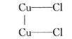
而如果电流较强，那么它就把两个铜原子完全互相分开，每一个铜原子单独地和两个氯原子结合：
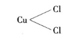
当电流为中等强度的时候，两种化合物相并形成。这样，两种化合物中形成这一种或那一种，仅仅由电流强度来决定，因此，从本质上来说，整个过程是电—化学的过程，如果“电—化学”这个词还具有某种意义的话。尽管如此，维德曼仍断然把这一过程说成是第二位的过程，即不是电化学的过程，而是纯粹化学的过程。
上述的实验是雷诺（1867年）做的，它是一系列类似的实验之一，在这些实验中，同一个电流在U形管里由食盐溶液（以锌为正极）传导，而在另一个电解槽中，由一些可变换的电解质（以一些不同的金属为正极）传导。这里，每溶解一个当量的锌，其他金属溶解的数量有很大的差异，而维德曼引用了这一系列实验的结果，这些结果大部分在化学上都是不言而喻的，而且决不可能是另外一种样子。例如，每溶解一个当量的锌，只有
个当量的金溶解于盐酸中。这个事实只有在下述情况下才会显得奇怪，即像维德曼那样，死守旧的当量，用ZnCI来表示氯化锌，从而使氯和锌一样，在氯化物中只显示出一个化学键。实际上，在这里每一个锌原子和两个氯原子化合（ZnCI2），一旦知道这个分子式，我们就可以立即看到，在确定上述的当量时，应当以氯原子为单位，而不应当以锌原子为单位。氯化金的分子式是AuCI3，这就可以明显地看出，3ZnCI2中所含的氯和2AuCI3中所含的氯恰恰相等，因此，电池或电解槽中把一个当量的锌变为氯化锌的全部过程（第一位的、第二位的、第三位的），也能不多不少把
个当量的金变为氯化金。绝对会是这样的，除非用通电的办法也能制取AuCI这种化合物；在这种情况下每溶解一个当量的锌，甚至应当有两个当量的金溶解，而且视电流强度的情况，还可能发生和前面所说的铜和氯的例子里类似的变化。雷诺的实验的价值就在于：它们显示出，法拉第定律怎样被一些似乎和它相矛盾的事实所证明。但是，这些实验对于解释电解时的第二位过程会有什么意义，却看不出来。
维德曼的第三个例子又把我们从电解槽引到电池。而实际上，如果联系所发生的能量转变来研究电解过程，电池是极有趣味的。例如，我们常常碰到这样的电池，其中化学—电过程似乎和能量守恒定律直接矛盾，似乎违背了化学亲和性定律。
根据波根道夫的测定315，由锌、浓食盐溶液和铂组成的电池提供的电流强度为134.6。这样，我们在这里就有了十分可观的电量，比丹聂耳电池中的电量大
。这里以电的形式表现出来的能量来源于哪里呢？“第一位的”过程是锌从氯化物中置换钠。可是，在通常的化学中，不是锌从氯化物或其他化合物中置换钠，而相反是钠置换锌。“第一位的”过程决不可能供给电流以上述能量，恰恰相反，这个过程本身还需要从外面输入能量才能发生。可见，仅仅有“第一位的”过程，我们仍然不能前进一步。那就让我们来看看实际的过程。这时我们发现，这里所发生的转变不是
Zn+2NaCI＝ZnCI2+2Na，
而是
Zn+2NaCI+2H2O＝ZnCI2+2NaOH+H2。
换句话说，钠并不是以游离的形式在负极上分离出来，而是被氧化，正如上面例一中的情形一样（第[481]页）。(381)
为了计算这里所发生的能量转变，尤利乌斯·汤姆森的测定至少给我们提供一些根据。根据这些测定，化合时所释放出的能量是：
（Zn，CI2）＝97 210
（ZnCI2，水）＝15 630
溶解了的氯化锌总共＝112 840热量单位
2（Na，O，H，水）＝223 620热量单位
336 460热量单位
|
从这里减去分解时消耗的能量：
2（Na，CI，水）＝193 020热量单位
2（H2，O）＝136 720热量单位
329 740热量单位
|
释放出来的能量的剩余＝6720热量单位。
这个数量，对于波根道夫所得到的电流强度说来，显然是很小的，但足以用来一方面解释钠同氯的分离，另一方面解释电流的形成。
这里，我们得到一个确凿的例子，它说明了第一位过程和第二位过程的区分完全是相对的，一旦被看做是绝对的，就会把我们引向荒诞的地步。单独地看，第一位的电解过程不但不能产生电流，而且它本身也不可能发生。正是第二位的、所谓纯粹化学的过程，才使第一位的过程成为可能，并且还提供全部的剩余能量来形成电流。因此，实际上它成了第一位的过程，而原来第一位的过程倒成了第二位的过程。当黑格尔把形而上学者和形而上学地思维的自然科学家所想象的固定不变的差别和对立辩证地转变为同它们相反的东西时，人们也许会说黑格尔有意歪曲了他们的话。可是，如果自然界也像老黑格尔那样对待这些差别和对立，那就确实该稍微仔细地研究一下这个问题了。
我们有更多的理由可以把下述这样一些过程看做第二位的过程，这些过程虽然是由于电池中的化学—电的过程或电解槽中的电化学的过程才发生的，但是并不依赖于这些化学—电和电化学过程并和它们是分开的，就是说，这些过程发生在离电极有一段距离的地方。因此，这一类第二位的过程发生时所完成的能量转变也并不加入到电的过程中来；它们既不直接从电的过程中取走能量，也不直接给电的过程提供能量。这样的过程在电解槽中屡见不鲜；前面在例一中，在电解硫酸钠形成硫酸时，我们看到的就是这样的情形。可是，在电解槽中，它们是没有多大意义的。不过，它们在电池中的出现却具有重要得多的实际意义。因为它们即使不直接给化学—电的过程提供能量或从中取走能量，也改变了电池中存在的可供使用的能量的总和，因而间接地对化学—电的过程起了作用。
除了后来发生的通常形式的化学变化，还有一种现象也属于这一类，这就是当离子以不同于它们通常以游离状态出现的情况而在电极上分离出来时以及当这些离子离开电极后才过渡到通常的游离状态时所发生的现象。在这些情况下，离子可以有另外的密度，或者采取另外的聚集状态。但是，离子还可能在它们的分子结构方面发生很大的变化，而这正是最值得注意的情况。在所有这些情况下，与离子在离开电极一定距离的地方发生的第二位的化学变化或物理变化相适应，会发生一种类似的热的变化；大多数情况下热被释放出，个别情况下热被消耗掉。这种热的变化，自然首先局限于有热发生的地方：电池或电解槽中的液体变热了或者冷却了，而闭合电路的其余部分则不受这一变化的影响。因此这种热称为局部热。这样看来，释放出来转换为电的化学能量，会按电池中产生的这个正的或负的局部热的当量减少或增加。据法夫尔说，在含有过氧化氢和盐酸的电池中，释放出来的全部能量的
是以局部热的形式消耗掉了；格罗夫电池却正好相反，在线路闭合以后明显冷却，因而还要通过吸收热量从外面供给电路以能量。于是，我们看到，这些第二位的过程也反作用于第一位的过程。我们尽可以任意处置，但第一位的过程和第二位的过程的区分始终是纯粹相对的，并总是在二者的相互作用中又被消除。316如果忘记这一点，如果把这种相对的对立看成绝对的，那么，最后就会像我们在前面已经看到的那样，陷入矛盾而无法自拔。
大家知道，当用电解法分离气体的时候，金属电极上覆盖了薄薄的一层气体；因此，在电极上的气体达到饱和之前，电流强度会降低，在达到饱和之后，减弱了的电流又重新达到恒定。法夫尔和济伯曼证明：在这一类电解槽中也产生局部热，这种局部热的产生，仅仅是由于气体不是以其通常出现的状态在电极上释放出来，而是在离开电极以后，通过一个与放热相联系的进一步的过程才进入其通常的状态。那么，气体在电极上到底是以怎样的状态分离出来的呢？谈到这个问题，没有谁比维德曼更加小心翼翼的了。他把这种状态称为“一定的”、“同素异形的”、“活性的”状态，最后，要是氧的话，有时也称之为“臭氧化的”状态。要是氢的话，那就说得更加神秘。有时候还出现这样的观点：臭氧和过氧化氢就是这种“活性的”状态借以实现的形式。在这里，臭氧总是纠缠着我们的作者，使他甚至于用某些过氧化物“可能以臭氧化的状态含有一部分氧”（第1册第57页）来解释这些过氧化物的极度的负电属性。在发生所谓水分解的时候，无疑会形成臭氧和过氧化氢，但是量很少。没有任何根据可以假定，在我们所研究的例子中，局部热是由于较大量的上述两种化合物先形成然后又分解而产生的。由游离的氧原子形成臭氧（O3）的生成热是多少，我们不知道。由H2O（液态）+O形成过氧化氢的生成热，按拜特洛的说法317，等于-21 480；因此，这种化合物如果比较大量地产生的话，就要求补充大量的能量（大约等于分离H2和O所需要的能量的百分之三十），而这种能量必然是显眼的和可以证明的。最后，臭氧和过氧化氢只能解释氧（如果我们撇开电流方向变换不管，在电流发生方向变换时两种气体会在同一个电极上相遇），并不能解释氢。然而，氢也以“活性的”状态逸出，例如，在硝酸钾溶液介于铂电极之间这一装置中，氢就和由酸中分离出来的氮直接化合为氨。
实际上，所有这些困难和疑虑都是不存在的。把物体“以活性的状态”分离出来，并非电解过程所独有。每一种化学分解中都会发生这种情形。化学分解使释放出来的化学元素首先以游离原子的形式分离出来，如O，H，N等等，这些原子只是在它们被释放出来以后，才能化合成为O2，H2，N2等等分子，并且在化合的时候，还释放出至今尚未确定下来的、以热的形式表现出来的一定量的能。但是，在原子处于游离状态的那一瞬间，它们是它们可以取得的全部能量的载体；当它们拥有自己的最大限度的能量时，就能够自由地参与所面临的任何化合。因此，它们对于O2，H2，N2这些分子来说是“处于活性状态”，而这些分子已经释放出上述能量的一部分，并且，如果不从外面重新获得它们释放出的能量，就不能和其他元素化合。因此，我们根本用不着还要去求助于臭氧和过氧化氢，它们本身也无非是这种活性状态的产物。例如，我们也可以不用电池，单用化学的方法来实现刚刚提到的电解硝酸钾时所实现的氨的生成，办法是把硝酸或某种硝酸盐溶液加到一种通过化学过程可释放出氢的液体中去。氢的活性状态在两种情况下都是一样的。可是，在电解过程中，有趣的是游离原子的瞬息存在可以说是一清二楚的。过程在这里分为两步：电解在电极上分离出游离原子，而游离原子在离电极一段距离的地方化合为分子。不管这段距离从物体的尺寸来看是多么微不足道，它却足以阻止形成分子时释放出来的能量应用于电的过程（至少在很大程度上加以阻止），从而使得这些能转换为热，即电池中的局部热。而这证明：元素以游离原子的形式分离出来，并在一瞬间以游离原子的形式存在于电池中。这个事实，我们在纯粹的化学中只能通过理论的推断来确定，在这里却通过实验得到了证明，因为这无需对原子和分子本身的感性知觉就可以做到。电池中的所谓局部热的巨大的科学意义就在于此。
关于化学能通过电池转换为电的过程，我们几乎一无所知，也许，只有当我们更好地认识了电运动本身的作用方式的时候，才能知道一些更详细的情况。
电池被硬说成具有一种“电的分离力”，而这种力对于每一特定的电池来说是特定的。我们一开始就看到，维德曼已承认这种电的分离力并不是能的一种特定形式。相反，它首先不过是一个电池在单位时间内把一定量的释放出来的化学能转换为电的能力和特性。这一化学能本身在整个过程中从来没有采取“电的分离力”的形式，相反，它立即而且直接地采取所谓“电动力”即电的运动的形式。如果说，当人们在日常生活中谈到一台蒸汽机的力的时候，是指它有能力在单位时间内把一定量的热转换为物体的运动，那么，这一点决不能成为把这种概念上的混乱也搬到科学中来的理由。同样，我们也可以说手枪、马枪、滑膛枪和来复枪有不同的力，因为它们用同样多的火药和同样重的弹丸，却可以有不同的射程。但是，在这里，这种说法的错误是一目了然的。谁都知道，推动子弹前进的是火药的起爆，至于武器射程的远近则仅仅取决于耗费能量的多少，而后者则随枪筒的长度、弹丸的运动空隙(382)和形式而定。蒸汽力和电的分离力的情况也是一样。有两台蒸汽机，别的条件都相同，就是说，假定两者在同一段时间内释放出同样数量的能，或者有两个电池，条件也是这样，那么它们在做功方面的区别仅仅在于其内部发生的能量消耗的大小。如果说，一切军队里的火器技术到今天已经成熟，已无须再设想火器具有某种特殊射击力，那么，在电学上还设想存在一种和火器的射击力相似的“电的分离力”，也就是存在一种绝对没有能量、因而本身也不能做出哪怕是百万分之一毫克·毫米功的力，那就完全不可原谅了。
关于这种“分离力”的第二种形式，即亥姆霍兹提到的“金属的电的接触力”，情形也是一样。它无非是金属的这样一种特性，即在相互接触时把现有的其他形式的能量转换为电。这就是说，它同样也是一种本身并不包含任何一点能量的力。让我们和维德曼一样假定，接触电的能量来源在于附着运动的活力；在这种情况下，这种能量首先以这种物体运动的形式存在，而当这种物体运动消失时就立即转换为电的运动，连一瞬间也没有采取“电的接触力”的形式。
除此以外，人们还让我们确信：电动力，即作为电的运动重新表现出来的化学能，同这种本身不仅不包含而且按其概念来说也根本不可能包含任何能量的“电的分离力”是成比例的！非能量和能量之间的这种比例关系，显然属于奢谈“电的单位和毫克的比值”(383)的那种数学的范围。但是，在这种只是由于把简单的特性看做某种神秘的力才存在的荒谬形式的背后，隐藏着一种极为简单的同义反复：一个特定的电池把释放出来的化学能转换为电这样一种能力是可以量度的，——用什么来量度？就是用闭合电路中以电的形式再现的能同电池中所消耗的化学能的比值来量度。如此而已。
为了得出某种电的分离力，人们不得不郑重其事地采用两种电流体的权宜说法。为了把这两种流体从中性状态转变到极性状态，也就是为了把它们互相分开，就要消耗一定量的能——电的分离力。这两种电一旦互相分开，那么，当它们重新结合时，就能重新释放出同样数量的能——电动力。但是，在今天，再也没有人（包括维德曼在内）把这两种电看做真实存在的东西了，因此，再来啰唆地谈论这种观点，那就是为死去的读者写文章了。
接触说的基本错误就在于，它无法摆脱把接触力或电的分离力当做某种能量来源的观念。当人们把某种装置可促成能量转换的简单特性看做是一种力以后，摆脱这种观念确实是困难的，因为力正好应该是能的某种特定形式。虽然维德曼不得不同时接受能量不可消灭不可创造的现代观念，但是，因为他无法摆脱关于力的这种不明确的观念，所以就采用关于电流的上述第一种毫无意义的解释，并且陷入后来所指明的各种矛盾之中。
如果“电的分离力”的说法简直是荒谬的，那么另一个说法“电动力”至少是多余的。我们在有电动机以前很久就有了热动机，而热的理论没有特别的热动力也发展得很好。热这个简单的词可包罗属于这种能量形式的一切运动现象，同样电这个词也可包罗其领域内的一切运动现象。此外，还有许许多多电的作用形式完全不带有直接的“动”的性质，如铁的磁化、化学分解、向热的转化。最后，在自然科学的任何部门中，甚至在力学中，每当人们在什么地方摆脱了力这个字眼的时候，都是一次进步。
我们已经看到，维德曼接受关于电池中的过程的化学解释是有些勉强的。这种勉强的态度不断纠缠着他；凡是在他对所谓化学说可以说三道四的地方，都一定是这样。例如，他说：
“电动力和化学反应的强度成比例的说法，是毫无根据的。”（第1册第791页）
这种比例性的确不是在一切场合都存在。但是，在不存在这种比例性的地方，只能证明电池设计得很差，其中浪费了能。因此，同一位维德曼做得非常正确：他在理论推断中完全不考虑那些会破坏过程的纯粹性的附带情况，而直截了当地断言，一个电池的电动力等于电池中在单位时间内和单位电流强度下所发生的化学反应的机械当量。
在另外一个地方我们读到：
“还有，在由酸和碱构成的电池中，酸和碱的化合并不是产生电流的原因，这是根据第61节〈柏克勒尔和费希纳〉、第260节〈杜布瓦—雷蒙〉和第261节〈沃姆—弥勒〉的实验得出来的，这些实验证明，在某些情况下，当酸和碱各以等当量存在时，不会出现任何电流，而且这也是根据第62节引证的实验〈亨利齐〉得出来的，这个实验证明，在苛性钾溶液和硝酸之间加入或不加入硝酸钾溶液，电动力出现的情况都是一样的。”（第1册第791页）
酸和碱化合是不是产生电流的原因这个问题，使得我们的作者认真思考。以这样的形式提出问题，回答可以是很简单的。酸和碱的化合首先是形成盐的原因，同时释放出能量。这个能量是全部还是部分地采取电的形式，取决于释放这个能量时的情况。例如，在硝酸和苛性钾溶液置于两个铂电极之间而组成的电池中，至少会部分地产生电，而且酸和碱之间加不加硝酸钾溶液，对于电流的产生都是无关紧要的，因为这顶多只能延缓，但不能阻止盐的形成。但是，如果选取一个像维德曼常常引用的沃姆—弥勒式电池，酸和碱溶液位于中间，它们的盐溶液位于两端，其浓度和电池中所形成的溶液的浓度相同，那就不言而喻，任何电流也不可能发生，原因是，由于这两端环节的缘故——由于到处都形成了同样的物体——任何离子都不可能产生。所以在这里我们便直接阻止了释放出来的能量转变为电，这就仿佛我们根本没有把电路闭合一样；因此，在这里得不到电流，就没有什么可奇怪的。但是，酸和碱毕竟可以产生电流，这由碳、硫酸（一分对十分水）、苛性钾（一分对十分水）、碳所组成的电池证明了，根据拉乌尔的说法，其电流强度为73(384)；而且，只要电池装配得当，酸和碱就可以提供与它们化合时所释放出的大量的能相匹配的电流强度，可以证明这一点的是，已知的最强电池几乎都是以碱金属盐的生成为基础的。例如，惠斯通电池，由铂、氯化铂、钾汞齐组成，电流强度是230；由二氧化铅、稀硫酸、钾汞齐组成，电流强度是326；用二氧化锰代替二氧化铅，电流强度是280；而且，每一次用锌汞齐代替钾汞齐，电流强度就几乎丝毫不差地降低100。同样，贝茨在由固体二氧化锰、高锰酸钾溶液、苛性钾溶液、钾组成的电池中得到电流强度是302；还有，由铂、稀硫酸、钾组成的电池，电流强度是293.8；焦耳电池，铂、硝酸、苛性钾溶液、钾汞齐，电流强度是302。这些异常强的电流形成的“原因”无疑是酸和碱的化合，或者酸和碱金属的化合，以及化合时释放出的大量的能。318
几页以后，我们又读到：
“但是，应当注意，不能直接把出现在不同类物体接触之处的全部化学反应的功当量当做闭合电路的电动力的量度。例如，在由酸和碱组成的柏克勒尔电池中〈又是克里斯平
319！〉，这两种物质化合起来；在由铂、熔融的硝酸钾、碳组成的电池中，碳烧尽了；在由铜、不纯的锌、稀硫酸组成的普通电池中，在形成局部电流的情况下锌很快地溶解了。在这些化学过程中所产生的功〈应当说，释放出来的能〉有很大一部分转换为热，从而对整个电路来说是损耗掉了。”（第1册第798页）
电学家们花费了无尽的时间和精力来装配各式各样的电池并量度它们的“电动力”。由此积累起来的实验材料包含许多很有价值的东西，但其中更多的东西无疑是没有价值的。例如，那些用“水”做电解质的实验有什么科学价值呢？现在弗·柯尔劳施已证明，水是最差的导体、因而也是最差的电解质，(385)所以在这一实验中促使过程发生的不是水，而是水中我们所不知道的某些杂质。可是，例如，费希纳的全部实验差不多有一半是像这样用水来做的，甚至包括他的“十字实验”320，而他是想借此在化学说的废墟上牢固地建立起接触说。从这里已经可以看出，差不多在所有的实验里，除了少数例外，几乎都忽略了电池里的化学过程，而这些过程正是所谓电动力的真正源泉。可是有许多电池，从它们的化学式来看，根本不可能对电路闭合以后电池中发生的化学变化作出任何可靠的结论。恰恰相反，正如维德曼所说的（第1册第797页），
“不能否认，我们还远不能在一切情况下都观察到电池中的化学吸引”。
因此，从越来越重要的化学方面来看，所有这些实验，只要它们还不能在上述过程受控制的情况下重复进行，都是没有价值的。
在这些实验中，注意到电池中发生的能量转变的只是罕见的例外。许多实验是在自然科学承认运动等价定律以前做的，它们通常未经检验和补正而被从一本教科书搬到另一本教科书中。如果从前人们说，电没有惯性（这个说法就好比说速度没有比重），那么，关于电的学说现在无论如何不能这样说了。
到现在为止，我们是把伽伐尼电池看做一种通过建立接触关系而使化学能——以一种现在还不知道的方式——释放出来并转换为电的装置。同样，我们把电解槽描述为这样一种装置：其中发生相反的过程，即电运动转变为化学能并作为化学能被消耗掉。在这里，我们曾不得不把电学家们如此忽视的这个过程的化学方面提到首位，因为只有这样才能摆脱由陈旧的接触说和关于两种电流体的学说所遗留下来的各种观念造成的混乱。这一点解决了以后，就要转向下面这个问题：电池中的化学过程是在和电池外相同的条件下发生的，还是在这里出现了特殊的、以电的激发为转移的现象？
在任何一门科学中，不正确的观念，如果抛开观察的错误不讲，归根到底都是对于正确事实的不正确的观念。即使我们已经证明观念是错误的，事实依旧是事实。即使我们抛弃了陈旧的接触说，这种理论试图加以解释的那些已经确定的事实仍然存在。我们现在就来考察一下这些事实，从而考察一下电池中的过程所固有的电的方面。
当不同类物体接触时，不管有没有发生化学变化，总是出现电的激发，这可以用验电器或电流计显示出来，关于这一点是没有争论的了。在个别情况下，正如我们一开始看到的，很难确定这些本身极为微弱的运动现象的能量来源；只要普遍承认存在着这样一种外在的来源就够了。
柯尔劳施在1850—1853年间公布了一系列的实验，在这些实验里，他把一个电池的各个组件成对地连接起来，测定每一种情况下可证实的静电压，而电池的电动力就应当由这些电压的代数和构成。以Zn/Cu的电压为100，他所算出的丹聂耳电池和格罗夫电池的相对强度如下：
丹聂耳电池：
Zn/Cu+amalg.Zn/H2SO4+Cu/SO4Cu＝100+149—21＝228；
格罗夫电池：
Zn/Pt+amalg.Zn/H2SO4+Pt/HNO3＝107+149+149＝405
这和直接量度这些电池的电流强度所得的结果相近。但是这些结果根本不可靠。第一，维德曼本人已经注意到，柯尔劳施仅仅列出了最后的结果，
“可惜，没有列出各次实验结果的数据”[第1册第104页]。
第二，维德曼本人不止一次地承认，从量方面测定金属相接触、特别是金属和液体相接触时所发生的电的激发的一切实验，由于存在着许多无法避免的误差源，至少是很不可靠的。尽管如此，他仍然多次运用柯尔劳施的数字进行计算，在这方面我们最好不效仿他，何况还存在着另一种不致受到这类非议的测定方法。
如果把一个电池的两块激电板浸入液体中，并把它们同电流计的两端连接起来构成闭合电路，那么，据维德曼说，
“电流计磁针的最初偏转度，在化学变化还未变更电的激发强度之前，是闭合电路中电动力总和的量度”[第1册第62页]。
于是，不同强度的电池显示出不同的最初偏转度，而这些最初偏转度的数值是和相关电池的电流强度成正比的。
看来，我们在这里似乎是清楚地见到了那种不依靠任何化学反应而能引起运动的“电的分离力”、“接触力”。整个接触说实际上就是这个意思。而真正摆在面前的是电的激发和化学反应之间的关系，这种关系我们在前面还没有研究过。为了回过来研究这种关系，我们先要稍微详细地考察一下所谓电动力定律；从中我们将会看到，就是在这方面，传统的接触观念不仅没有提供任何解释，反而直接堵塞了解释的道路。
如果在一个由两种金属和一种液体组成的电池，例如由锌、稀盐酸和铜组成的电池中，置入任何第三种金属，例如铂板，但不用导线把后者和外部闭合电路连接起来，那么，电流计的最初偏转度就会和没有置入铂板时完全一样。因而，铂板对于电的激发没有影响。但是，这一点用电动力说的语言来表达却没有那么简单。书中写道：
“现在，锌和铂与铂和铜的电动力的总和代替了锌和铜在液体中的电动力。因为插进铂板并没有明显地改变电路，所以，从电流计在两种情况下示数相等这个事实中，我们可以得出结论：锌和铜在液体中的电动力，等于同一液体中锌和铂的电动力加上铂和铜的电动力。这和伏打提出的金属之间自己激发生电的理论相符合。这一结果适用于任何液体和金属，可以表述如下：### $$$金属当其被液体电动激发的时候，遵循电动序定律。这个定律也叫电动力定律。”（维德曼，第1册第62页）
如果人们说，铂在这一组合中根本不起激发生电的作用，那么，这是说出了简单的事实。如果人们说，铂的确起激发生电的作用，但是按两个相反的方向以同样的强度起作用，以致其作用抵消掉了，那么，这仅仅是为了给“电动力”留点面子而把事实变为假说。在这两种情况下，铂都不过是扮演了稻草人的角色。
在电流计的磁针最初偏转时，还不存在闭合电路。酸在没有分解时，是不导电的；它只能借离子导电。如果第三种金属对最初的偏转不起作用，那不过是因为它还是被绝缘的。
但是，在恒定电流产生以后以及在它持续期间，这第三种金属怎样起作用呢？
在大多数液体中，按金属电动序排列，锌位于碱金属之后，差不多都在正极一端，铂在负极一端，而铜则在两者之间。因此，如果像上面所说的那样把铂置于铜和锌之间，那么铂对两者来说都是负的。液体中的电流，如果铂确实起作用的话，应当是从锌和铜向铂流动，也就是说，从两个电极向未连接的铂流动，而这里就出现了形容语的矛盾[Contradictio in adjecto](386)。多种金属在电池中起作用的基本条件正在于：它们向外互相连接成一条闭合电路。电池中某种未连接的、多余的金属扮演了非导体的角色，它既不生成离子，也不让离子通过，而离开离子，就谈不上电解质的传导性。因此，这种金属不只是稻草人，甚至还是一种障碍，因为它迫使离子绕它而行。
如果我们把锌和铂连接起来，而把铜放在中间，不加连接，情形也是一样。在这里，如果铜确实起作用的话，它就会引起从锌到铜的一股电流和从铜到铂的另一股电流；因而，它会成为一种中间电极，并在朝向锌极的那一面上分离出氢，而这又是不可能的。
如果我们抛开关于电动力的传统说法，情形就显得异常简单了。正如我们已经看到的，伽伐尼电池是一种把化学能释放出来并把它转换为电的装置。它通常是由一种或几种液体和两种用做电极的金属组成的，这两种金属一定要在液体之外用导线连接起来。这种装置就是这样组成的。不管我们还把什么东西不加连接地浸入激发液体中，只要它不使液体发生化学变化，那么，不管它是金属，是玻璃，是松香，还是别的什么，都不可能参与电池中发生的化学—电过程，就是说，不能参与电流的形成；它顶多只能干扰这个过程。不管浸入的第三种金属对液体和对电池的一个或两个电极的激电能力如何，只要这种金属没有在液体之外和闭合电路连接起来，它的激电能力是不会起作用的。
从这里我们看到，不仅维德曼对所谓电动力定律的上述推论是错误的，而且他赋予这个定律的含义也是错误的。既不能说什么未加连接的金属具有一种自行补偿的电动作用，因为这种作用可以实现的唯一条件一开始就被剥夺了；也不能从所谓电动力定律范围之外的事实中推论出这个定律。
波根道夫在1845年公布了一系列的实验，在这些实验中，他测量了各种不同的电池的电动力，就是说，测量了每一种电池在单位时间内供给的电量。在这些实验中，前面27个具有特别的价值，在其中的每一个实验中，三种特定的金属在同一激发液体里依次两两相连从而组成三个不同的电池，他从这些电池所供给的电量方面对这些电池进行了研究，并互相做了比较。作为正统的接触说电学家，波根道夫每一次都把第三种金属不加连接地一起放入电池里，并且满意地确认：在全部81个电池中，这个“联盟中的第三者”321纯粹是个稻草人。但是，这些实验的意义完全不在这里，而在于证实和确定了所谓电动力定律的正确含义。
我们来看看上面说过的锌、铜、铂在稀盐酸里两两相连的一系列的电池。如果以丹聂耳电池的强度为100，波根道夫在这里所得到的电量如下：
锌—铜 78.8
铜—铂 74.3
──────
总和 153.1
锌—铂 153.7
可见，锌和铂直接相连提供的电量，几乎正好等于锌—铜提供的电量加铜—铂提供的电量。在所有其他电池中，无论使用的是什么液体和金属，情形都是一样。如果把一系列金属放到同一激发液体中，并按照它们在该液体中的电动序排列出第二、第三、第四种金属等等，把每一种金属依次作为前面金属的负极和后面金属的正极两两组成电池，那么，所有这些电池所提供的电量总和，等于直接由整个金属序列两端的两种金属所组成的电池所提供的电量。按照这一道理，例如在稀盐酸中，锌—锡、锡—铁、铁—铜、铜—银、银—铂这些电池所提供的电量的总和，就等于锌—铂电池所提供的电量；由上述一系列电池所组成的电池组，在其他条件相同时，会恰好被一个电流方向相反的锌—铂电池所中和。
这样理解的所谓电动力定律具有巨大的实际意义。它揭示了化学反应和电的作用之间的相互联系的新的一面。在这以前，在主要研究电流的能量来源的时候，化学转变这个来源表现为过程的主动方面；电由它产生，因而电最初表现为被动的。现在，关系反过来了。由电池中互相接触的不同类物体的性质所决定的电的激发，既不能给化学反应添加能，也不能从那里取走能（除非把释放出来的能转变为电），但是，根据电池结构的不同，电的激发却可以加速或减缓这种反应。如果说，由锌—稀盐酸—铜组成的电池在单位时间内提供给电流的电，仅仅等于由锌—稀盐酸—铂组成的电池所提供的一半，那么，用化学的术语来表示就是，前一个电池在单位时间内提供的氯化锌和氢，只有后一个电池所提供的一半。可见，虽然纯粹的化学条件是相同的，化学反应却增强一倍。电的激发变成了化学反应的调节器；电的激发现在表现为整个过程的主动方面，而化学反应则变成被动方面了。
这样看来，过去被看做纯粹化学过程的一系列过程，现在被描述为电化学过程，是可以理解的了。化学上纯粹的锌，即使受稀酸腐蚀，那也是很微弱的；而市上出售的普通的锌却会迅速溶解于稀酸中，形成盐并释放出氢；它含有其他金属和碳这样一些杂质，它们不均匀地分布在其表面的各个部分上。在酸中，在这些杂质和锌本身之间形成局部电流，其中锌所在的地方形成正极，其他的金属形成负极，氢气泡就在负极上逸出。浸在五水硫酸铜溶液中的铁在表面上覆盖一层铜，这一现象现在也同样被看做一种电化学的现象，也就是说，这个现象被看做是由铁表面各异质点之间产生的电流所决定的。
由此我们又发现，液体中的金属电动序和金属从它们的卤化物和酸根化合物中被互相置换的顺序大体上是一致的。在电动序的负极的最外端，我们所见到的通常总是金族金属：金、铂、钯、铑，它们很难氧化，酸对它们几乎没有或者完全没有腐蚀作用，它们很容易从自己的盐中被别的金属置换出来。在正极的最外端是碱金属，它们的活动情况恰恰相反：即使耗费极大的能量，也很难使它们从它们的氧化物中分离出来；它们几乎只以盐的形式出现在自然界，并且在所有的金属中，它们对于卤素和酸根具有最大的亲和性。其他金属排列于两者之间，其顺序会发生些许变动，但整个说来，它们的电的和化学的活动情况是相互一致的。各个金属的顺序随液体的不同而有所变动，并且即使就单独一种液体来说，这种顺序也未必是一成不变的。就某一种液体来说，究竟存在不存在这样一种绝对的金属电动序，甚至是值得怀疑的。两块同样的金属，在适宜的电池和电解槽里，可用做正极，又可用做负极，就是说，同一种金属就自身而言可以既是阳性的，又是阴性的。在把热变为电的热电偶中，当两个接点上的温差太大时，电流方向会发生突变：原先为正极的金属会变成负极，而负极则变成正极。同样，金属在它们的某些特定的卤化物或酸根化合物中互相置换时，也不存在绝对的顺序；本来适用于常温的顺序，通过供给热能，在许多情况下几乎可以任意加以改变和颠倒。
于是，我们在这里看到了化学反应和电之间的一种特有的相互作用。电池中的化学反应给电提供形成电流所必需的全部能量，这种化学反应本身在许多情况下又由电池中产生的电压所引起，而且在一切情况下在量上都由这些电压加以调节。如果说电池中的过程先前在我们面前表现为化学—电的过程，那么现在我们看到，它们也同样是电化学过程。从产生恒定电流的角度来看，化学反应是第一位的；从激发电流的角度来看，它又是第二位的、附带的。相互作用消除了一切绝对的第一位和第二位，可是，同时它又是一个两面的过程，按其本性来说可以从两个不同的角度来考察；为了把它作为一个整体来理解，甚至必须分别从两个角度逐一加以研究，然后才能概括出总的结果。但是，如果我们片面地抓住一个角度，认为它对另一个角度来说是绝对的，或者，如果我们为了眼前的推理需要而任意地从一个角度跳到另一个角度，那我们就会陷入形而上学思维的片面性，我们把握不住两者的联系，就会陷入一个接一个的矛盾之中。
我们在前面已经看到，在维德曼看来，当激电板刚刚浸入电池的液体并且在化学变化改变电的激发强度之前，电流计的最初偏转度
“是闭合电路中电动力总和的量度”。
迄今为止，我们知道所谓电动力是一种能的形式，在我们的这个场合，它从化学能中以等当量产生出来，而在进一步的过程中又转变为等当量的热、物体运动等等。现在，我们突然得知，“闭合电路中电动力的总和”在化学变化释放出这种能量以前就已经存在，换句话说，电动力无非是一定的电池在单位时间内释放出一定量的化学能并把它转换为电运动的能力。和先前的电的分离力一样，电动力在这里也表现为一种不含有任何一点能量的力。这就是说，维德曼把“电动力”理解为两种截然不同的东西：一方面是电池释放出一定量的已有的化学能并把它转换为电运动的能力，另一方面是所产生的电运动量本身。它们互成正比，互为量度，但这并未消除它们之间的差别。电池中的化学反应、产生的电量以及由电量在闭合电路中产生的热（如果除此以外再没有做功的话），不止是互成正比，它们甚至是等价的；但这也并不妨碍它们彼此之间有差别。一台装配有一定直径的汽缸和具有一定活塞冲程的蒸汽机，能够从供给它的热中产生一定量的机械运动，不管这种能力同这种机械运动如何成正比，它和这种机械运动本身还是有很大差别的。如果说这种说法在自然科学提出能量守恒以前的时代里是可以容忍的，那么很显然，在这个基本规律得到承认以后，就再也不允许把某种形式的实际的活生生的能和某种装置赋予释放出来的能以这种形式的能力混为一谈了。这种混淆是在谈到电的分离力时把力和能混淆起来的必然结果；这两种混淆就是维德曼把电流的三种完全互相矛盾的解释糅合在一起的原因，而且归根到底就是维德曼关于所谓“电动力”的一切谬误和混乱的基础。
除了上面已经考察过的化学反应和电之间的特有的相互作用外，它们之间还存在另一共同性，这一共同性也表明这两种运动形式具有较紧密的亲缘关系。两者的存在都只能是转瞬即逝的。化学过程对于介入该过程的每一原子团来说是突然完成的。只是由于存在着可以不断进入过程的新物质，过程才能延续下去。电运动的情形也是一样。它刚刚从另一种运动形式中产生出来，就已经又向第三种运动形式转化了；只有不断地提供可用的能量，恒定电流才能形成，在恒定电流中，每一瞬间都有新的运动量采取电的形式，并且随即又失去这一形式。
理解了化学反应与电的作用的紧密联系以及电的作用与化学反应的紧密联系，就会在这两个研究领域中获致巨大的成果。这种理解已经日益普遍。在化学家中间，洛塔尔·迈耶尔和随后的凯库勒都明白地说过：电化学理论正在以一种年轻的面目复活。在电学家中间，特别是像弗·柯尔劳施最近的著作所表明的，看来终于也有意传播这样一种信念：只有精确观察电池中和电解槽中的化学过程，才能帮助他们的科学研究走出旧传统的死胡同。
事实上，除了精确地观察和确定能量转变并把关于电的一切传统的理论观念暂时搁置一旁，在此前提下用化学方法对一切传统的、未经验证的、依据已被克服的学术观点所进行的实验作一次缜密的普遍的修正，看不出还有什么其他方法能为流电的学说，其次也为磁和静电的学说奠定坚固的基础。
[札记和片断]
[124]
最初的、素朴的观点，照例要比后来的、形而上学的观点正确些。例如，培根（在他之后有波义耳、牛顿和差不多所有的英国人）早就说，热是运动(387)（波义耳甚至说是分子运动）。而直到18世纪，热素才在法国出现，并且在大陆上或多或少地被接受了。
[73]
进入宇宙空间的热辐射。拉甫罗夫所引述的关于已经死寂的天体再生的一切假说（第109页）322，都把运动的丧失包括在内。已经辐射出去的热，即原始运动的无限大的部分，是永远丧失了的。亥姆霍兹说迄今已丧失了
。323因此，结论是运动终归要耗尽和停止。只有证明辐射到宇宙空间的热怎样变得可以重新有用，这个问题才会得到最终解决。运动转化的学说把这个问题明确地提出来了，对这个问题是不能用无谓的拖延或回避的办法来应付的。而这同时也给问题的解决提供了条件——这是另外一回事。运动的转化和运动的不灭刚刚在三十年前才被发现，而对它的结论直到最近才有进一步的发挥和阐述。关于似乎消失了的热变成了什么的问题，可以说是直到1867年以后才明白地提出来（克劳修斯）324。它还没有得到解决，这是不足为奇的；用我们的寻常手段来解决这个问题，可能还要拖很长的时间。但是它会得到解决，这是确定无疑的，就像已经确定自然界中没有什么奇迹，星云球体的原始的热也并不是由什么奇迹从宇宙之外传送给它一样。运动的总量是无限的，因而是不可穷尽的，这个一般的论断对克服每一个别场合的困难同样是没有什么帮助的；它也不能使已经死寂的宇宙复活，除非是在上面的假说中所预先规定的情况下，这些情况总是和力的丧失相联系的，因而不过是暂时的。在发现辐射出去的热可以重新利用以前，这个循环是得不到的，而且是不会得到的。
[79]
克劳修斯——如果我对他的了解是正确的——证明：世界是被创造出来的，所以，物质是可以创造的，所以，它是可以消灭的，所以，力或运动也是可以创造和可以消灭的，所以，关于“力的守恒”的整个学说全是胡诌，所以，由这种胡诌中得出的一切结论也全是胡诌。
[88]
克劳修斯的第二定律，无论以什么形式提出来，都不外乎是说，能消失了，即使不是在量上，也是在质上消失了。熵不可能通过自然的途径消灭，但可以创造出来。宇宙钟必须上紧发条，然后才走动起来，一直达到平衡状态，而要使它从平衡状态中再走动起来，那只有奇迹才行。上紧发条时所耗费的能消失了，至少是在质上消失了，而且只有靠外来的推动才能恢复。因此，外来的推动开初是必需的；因此，宇宙中存在的运动或能的量不是永远一样的；因此，能必定是创造出来的，因而是可以创造的，因而是可以消灭的。荒唐！
[167]
对汤姆生、克劳修斯、洛施密特来说，结论是：反转在于斥力自我排斥并从而通过机械过程返回到已死的天体。但是，在这里恰好也证明：排斥是运动的真正主动的方面，吸引是被动的方面。
[5]
聚集状态——量变转化为质变的关节点。
[4]
内聚力——在气体中是负的——吸引转变成排斥；后者只有在气体和以太（？）中才是真实的。
[141]
在气体的运动中，在蒸发过程中，物体的运动直接转化为分子运动。因此，在这里要造成转化。
[175]

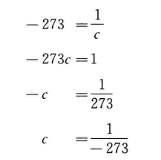
在绝对零度下任何气体都不可能存在，分子的一切运动都停止了；只要有微不足道的压力，因而只要有它们自己的吸力，就可以把它们压在一起。因此，永恒的气体是不可思议的东西。
[78]
动力学必须证明：向上运动的分子怎么同时能产生向下的压力，怎么（假定大气对宇宙空间来说是或多或少固定不变的）能够克服重力而离开地心，可是当到达一定的距离，重力按距离的平方减少之后，却又因重力而被迫停顿下来或反转回来。
[54]
气体动力学：
“在理想气体中……分子和分子间的距离很远，以致可以把它们的相互作用忽略过去。”（克劳修斯，第6页）
是什么东西填满这些空间呢？同样还是以太。325因此，在这里就假定了一种不能分为分子单元或原子单元的物质。
[58]
理论发展中的对立性：从嫌恶真空326立刻过渡到绝对虚空的宇宙空间；只是在这以后才出现了以太。
[71]
以太。如果以太确有阻抗，那么它对光也一定有阻抗，因而在一定的距离上光就不能透过了。而以太既然能传播光，是光的介质，这必然意味着：它对光也有阻抗，否则光就不能使以太发生振动。这是对梅特勒(388)所引起的和拉甫罗夫327所提到的那些争论问题的解答。
[84]
光和暗肯定是自然界中最显明、最尖锐的对立，它从第四福音书(389)起直到18世纪的启蒙运动止，对于宗教和哲学来说始终是一种修辞学上的用语。
菲克
(390)，第9页：“物理学中早已严格地证明了的命题就是……被称为辐射热的运动形式和我们称之为
光的那种运动形式，在一切本质的方面都是等同的。”克拉克·麦克斯韦
(391)，第14页：“这些〈辐射热的〉射线具有光射线的一切物理性质，并且能反射，等等……有一些热射线是和光射线等同，可是其他各种热射线在我们的眼睛里造成不了印象。”
[130]
库仑说，“电的粒子的相互排斥同粒子之间的距离的平方成反比”，汤姆生便泰然自若地把这当做已经得到证明的东西（第358页）329。对待电是由“正负两种流体”所组成，它们的“粒子互相排斥”这个假说也是一样，第366页上说，带电体中的电仅仅是由于大气的压力而被保持着。
法拉第把电归之于原子（或分子，它们仍然常常被混淆）的对立的两极，于是第一次发表了这样的意见：电不是流体，而是一种运动形式，是“力”（第378页）。老汤姆生根本不懂得：电火花恰恰是某种物质的东西！
法拉第早在1822年就已经发现：瞬间的工作感生电流——不论是第一次的还是第二次的逆电流——“更多地具有莱顿瓶放电所产生的电流的性质，而较少具有伏打电池所产生的电流的性质”，全部秘密就在这里（第385页）。
关于电火花，有各种各样的无稽之谈，它们今天已经被认定是特殊情况或错觉，阳性的物体所产生的电火花是“一束画笔状的或锥体状的射线”，其尖端为放电点；而阴性电火花是一颗“星”（第396页）。短的电火花总是白色的，长的电火花大都是红色的或浅紫色的（法拉第关于电火花的动听的胡说，第400页(393)）。用金属球从主导体中诱发的电火花是白色的，用手诱发的电火花是紫红色的，用水气诱发的电火花是红色的（第405页）。电火花，即光，“并不是电所固有的，而只是压缩空气的结果。当电火花穿过空气时，空气就剧烈地和突然地被压缩了”，这是金纳斯利在费城的实验所证明的；根据这个实验，电火花引起“管中空气的突然稀薄”，并把水驱入管内（第407页）。在德国，在三十年前，温特尔和其他人都认为，电火花或电光“和火具有同样的性质”，并且是由两种电的结合产生的。汤姆生反对这种说法并郑重其事地证明，两种电相遇的地方正是光度最弱的地方，它位于距正极三分之二处，距负极三分之一处！（第409—410页）显然，火在这里还完全被看做某种神秘的东西。
汤姆生还同样郑重其事地引证戴赛尼的实验，根据这些实验，在气压上升而温度下降时，玻璃、松香、丝绸等浸入水银就发生负电，在气压下降而温度上升时，就发生正电，在夏天浸入不纯净的水银中总是发生正电，浸入纯净的水银中总是发生负电；在夏天把黄金和其他各种金属加热就发生正电，冷却就发生负电，在冬天则正相反；在高气压和刮北风的时候，气温上升这些金属就产生很强的正电，气温下降就产生很强的负电，如此等等（第416页）。
热的情况怎样呢：
“要产生热电效应，并不需要使用热。凡是可以变更电池组中某一部分的温度的东西……都能引起磁针偏转的变化”。例如，用冰或蒸发醚使一种金属冷却下来！（第419页）
电化学理论（第438页）被认为“至少是颇为机智的和似乎有道理的”。
法布罗尼和沃拉斯顿在很早以前，而法拉第在最近都断言：伏打电是化学过程的简单的结果。法拉第甚至已经正确地解释了液体中所发生的原子易位，并且提出用电解产物的量来计算电量。
靠法拉第的帮助，汤姆生得出了这样一个定律：
“每个原子都必定自然而然地被同样的电量所包围，所以从这方面来看热和电是彼此相似的！”[第454页]
[131]
电。关于汤姆生的无稽之谈，可参看黑格尔[《自然哲学》]第346—347页，那里完全一样(394)。——可是黑格尔早就反对电流体说和电物质说，很明确地把摩擦电理解为电的紧张关系（第347页）。
[135]
静电和动电。
静电或摩擦电，是使自然界中以电的形式存在着的、然而是处于平衡的、中性的状态的现成的电转为电压状态。因此，这种电压状态的消失——在电能够传播，能够被传导的时候，而且只有在这样的时候——是随着一次闪击，即随着那种使中性状态得以恢复的电火花而发生的。
相反，动电或伏打电是由化学运动转变为电而发生的。在某些特定的情况下，锌、铜等等的溶解产生这种电。在这里，电压状态不是急性的，而是慢性的。在每一瞬间，都有新的正电和负电从另一个运动形式中产生出来，而不是已经存在的正负电分裂为正电和负电。这个过程是一个流动的过程，因此，它的结果——电——也就不是瞬息间的电压和放电，而是恒定电流，这一电流又能在两极重新转变为它曾从中产生的化学运动，这就是所谓的电解。在这个过程中，以及在化学化合产生电的时候（在这里，电代替了热而被释放出，而且释放出的电和在其他情况下所释放出的热一样多，格思里，第210页）330，我们可以追踪液体中的电流（相邻分子中的原子置换——这就是电流）。
这种电按其本性来说就是电流，所以不能直接转变为静电。但是通过感应的方法已经可以使这种既有的中性电失去中性。按事物的本性来说，被感生的电应尾随起感应作用的电，因而也是流动的。而在这里，显然有可能使电流蓄积起来，并使之转化为静电，或者更确切地说，转化为把电流的性质和电压的性质结合在一起的更高的形式。这一点是在龙考夫机器中实现的。331它产生出的感生电体现了这一点。
[158]
自然辩证法的一个很好的例子是：根据现代的理论，用同性电流的吸引说明同性磁极的排斥（格思里，第264页）。
[133]
电化学。维德曼在说明电火花对化学的分解和重新结合的影响时宣称：这多半同化学有关。(395)在同一场合，化学家宣称：这确实多半同物理学有关。这样，在分子科学和原子科学的接触点上，双方都宣称无能为力，但是恰恰在这里可望取得最大的成果。
[168]
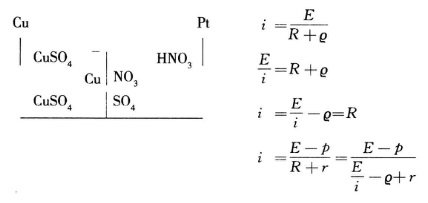
[化学]
[80]
关于实在的、化学上统一的物质的观念——不管它多么古老——是和直到拉瓦锡时还广泛流传的那种幼稚见解完全一致的，这种见解认为：两个物体的化学亲和性的基础在于它们各自含有一个共同的第三物体（柯普《发展》第105页(396)）。
[128]
化学上的新时代是从原子论开始的（所以，近代化学之父不是拉瓦锡，而是道尔顿(397)），相应地，物理学上的新时代是从分子论开始的（换一种形式来说，而实质上只是就这一过程的另一个方面来说，是从发现运动形式的互相转化开始的）。新的原子论和所有已往的原子论的区别，在于它不认为（撇开蠢材不说）物质单纯是分立的，而认为不同层次的各分立部分（以太原子、化学原子、物体、天体）是不同的关节点，这些关节点决定了一般物质的不同的质的存在方式——直到失重和排斥。
[148]
量到质的转化：最简单的例子是氧和臭氧，在这里2∶3就造成一些完全不同的属性，甚至气味也不同。化学也只用分子中原子数目的不同去说明其他的同素异形体。
[134]
旧的、方便的、符合以往流行的实践的方法，怎样转用于其他领域并且在那里变成障碍：在化学中，有化合物成分的百分率计算法，它是使人发现不了化合物的定比和倍比定律的最好不过的方法，它也确实在相当长的时期内使这些定律未被发现。
[184]
名称的意义。在有机化学中，一个物体的意义以及它的名称，不再仅仅由它的构成来决定，而更多地由它在它所隶属的系列中的位置来决定。因此，如果我们发现了某个物体属于某个这样的系列，那么它的旧名称就变成了理解的障碍，而必须代之以一个系列名称（烷烃等等）。
[生物学]
[127]
地文学。在从化学过渡到生命以后，首先应当阐述生命赖以产生和存在的条件，因而首先应当阐述地质学、气象学等等。然后才阐述生命的各种形式本身，如果不这样，这些生命形式也是不可理解的。
[65]
反应。机械的、物理的反应（换言之，热等等），随着每次反应而耗尽了。化学反应改变了发生反应的物体的构成，并且只有再增添该物体的量，反应才能重新发生。只有有机体才独立地发生反应——当然是在它的能力范围之内（睡眠），而且是在有营养补给的前提下，但是这种营养补给只有在被同化之后才发生作用，而不像在低级阶段那样直接发生作用，所以在这里有机体具有独立的反应力，新的反应必须以这种有机体为中介。
[22]
生和死。今天，不把死亡看做生命的本质因素（注，黑格尔《全书》第1部第152—153页）332、不了解生命的否定本质上说包含在生命自身之中的生理学，已经不被认为是科学的了，因此，生命总是和它的必然结局，即总是以萌芽状态存在于生命之中的死亡联系起来加以考虑的。辩证的生命观无非就是如此。但是，无论什么人一旦懂得了这一点，在他面前一切关于灵魂不死的说法便破除了。死亡或者是有机体的解体，除了构成有机体实体的各种化学成分，什么东西也没有留下来；或者还留下某种生命要素，或多或少和灵魂相同的东西，这种要素不仅比人，而且比一切活的机体都活得更久。因此，在这里只要借助于辩证法简单地说明生和死的本性，就足以破除自古以来的迷信。生就意味着死。
[59]
自然发生[Generatio aequivoca]。至今所有的研究如下：在含有分解着的有机物并接触空气的液体当中，产生了低等的有机体，即原生生物、真菌、纤毛虫。它们是从哪里来的？它们是由于自然发生而来的，还是由大气中带来的胚胎产生的？这样，这种研究就局限于一个非常狭窄的领域，局限于原生质发生333的问题了。
关于新的活的有机体可以由其他有机体的分解而产生的假定，实质上属于承认物种不变的时代。当时人们必然假定，一切有机体，甚至最复杂的有机体，都是从无生命的物质通过自然发生而产生的；如果人们不愿求助于上帝创造万物的行动，他们就很容易得出这样一个观点：要是有一种已起源于有机界的生成物质，这种过程就比较容易说明了；人们已不再设想通过化学方法直接从无机物质中产生出哺乳动物了。
但是，这样的假定是和科学的现状直接冲突的。化学通过对死的机体的分解过程的分析证明：这个过程一步一步地进行下去必然产生更加无生气、更加接近于无机界的产物，这些产物越来越不适于在有机界中加以利用了；这些分解出来的产物只有及时地被摄取到适于利用它们的既有的有机体中，这个过程才可能被导向另一个方向，这样的利用才可能实现。最先分解的恰恰是细胞生成的最重要的载体，即蛋白质，而且这种东西直到现在还不能重新合成。
不仅如此，我们这里所研究的那种从有机液体中自然发生的有机体，虽然是比较低等的，但本质上是已经分化了的有机体，如细菌、酵母等等，它们具有一种由不同阶段构成的生命过程，而且有一部分（如纤毛虫类）还具有相当发达的器官。它们至少都是单细胞生物。但是，在我们知道无结构的胶液原生物46以后，如果还想说明哪怕一个细胞也是直接产生于无生命的物质，而不是产生于无结构的活的蛋白质，如果还相信能够借助少许臭水强迫自然界在24小时内完成它用了多少万年才完成的事情，那真是愚蠢。
巴斯德的实验334在这方面是没有用处的：对那些相信自然发生的可能性的人来说，他单凭这些实验还决不能证明自然发生的不可能；但是这些实验是很重要的，因为这些实验对这些有机体、它们的生命、它们的胚种等等提供了许多说明。
[64]
莫里茨·瓦格纳《自然科学的争论问题》第1卷（奥格斯堡《总汇报》，1874年10月6、7、8日附刊）335。
李比希在他晚年（1868年）对瓦格纳表示：
“我们只可以假定：生命正像物质本身那样古老，那样永恒，而关于生命起源的一切争端，在我看来已由这个简单的假定解决了。事实上，为什么不应当设想有机生命正像碳和它的化合物〈！〉一样，或者正像不可创造和不可消灭的所有物质一样，像永远和宇宙空间中的物质运动联结在一起的力一样，是原来就有的呢？”
此外，李比希还说（瓦格纳确信，是在1868年11月）：
他也认为，我们行星上的有机生命可能由宇宙空间“输入”的这种假说是“可以接受的”。
亥姆霍兹（为汤姆生《理论物理学手册》德文版第2部所写的序言）：
“
如果我们让有机体从无生命的实体中产生出来的一切努力都失败了，那么依我看来，一个完全正确的办法就是我们问一问：生命究竟曾经发生过没有，它是否和物质一样古老，它的胚种是否从一个天体被移植到另一个天体，并且在有适宜土壤的一切地方发展起来？”
336
“物质是不灭的和永恒的……无论什么力量都不能把它化为乌有，这个事实
足以使化学家认为物质也是不能创造的……但是，根据现在流行的观点〈？〉，生命仅仅被看做构成最低等有机体的某些简单元素所固有的一种属性，这种属性自然应当和这些基本物质
及其化合物〈！！〉本身一样地古老，就是说，一样地是本来就有的。”从这个意义来说，也可以像李比希（《化学通信》第4版[第1卷第349、372—373]）那样说有一种生命力，“就是说，它是‘一种在物理力中并且借物理力起作用的造形本原’，所以不是在物质之外起作用的。但是，这个生命力，作为物质的一种属性……只有在适当的条件之下才显现出来，这些条件从太初以来就存在于无限宇宙空间中的无数点上，但是在各个不同时期又必然常常改变自己的空间位置。”因此，在以前的液态的地球上或现在的太阳上，不可能有生命，但是炽热的天体覆盖有一层非常广袤的大气，根据最新的见解，这种大气是由极稀薄地充满宇宙空间并且被各个天体吸引着的同一些物质所组成。发展出太阳系并延伸到海王星轨道以外的旋转星云，也包含着“散布在大气中的一切蒸汽状态的水分〈！〉，这层大气直到不可测度的高度都为碳
酸气〈！〉所饱和，因此也就包含着使最低等的有机胚种得以存在〈？〉的基本物质”；在旋转星云中，“在各个极不相同的区域中有极不相同的温度，所以
完全有理由假定：有机生命所必需的各种条件，总可以在其中的某个地方找到。因此，我们可以把天体的和旋转的宇宙星云的大气看做有生命形式的永久储藏所，看做有机胚种的永恒栽培地”。——在赤道附近科迪勒拉山脉的高达16000英尺的大气中，还大量地存在着最小的有生命的原生生物和它们的不可见的胚种。佩尔蒂说它们“几乎到处都存在”。只是在炽热把它们烧死的地方，它们才不存在。“因此，在
一切天体的大气中”，它们（弧菌等等）的存在都是可以想象的，“那里总会找到适当的条件”。
(398)### $$$“根据科恩的说法
(399)，细菌……极其微小，在一立方毫米中能容下6.33亿个，而6360亿个总共不过1克重。微球菌甚至还要小些”，而且也许还不是最小的。但是它们的形状是各种各样的，“弧菌……有时是球形，有时是卵形，有时是杆形或螺旋形〈因此，它们的形状已经具有重大的价值了〉。从这样的
或者类似的、极其简单的〈！！〉、在动物和植物之间摇摆不定的中性的原始生物中……在个体的变异性和新获得特性遗传给后代的能力的基础上，在天体的物理条件发生变化以及正在产生的个体变种在空间上被隔离的情况下，经过一段很长的时间，
可以而且
必定发展出动植物界中多种多样的有高级组织的生物，——这是一个颇有道理的假定，一直到现在还没有人对它提出过有力的反驳。”
他在1861年才读过达尔文的著作
(400)，至于达尔文以后出现的生物学和古生物地质学的重要著作则读得更晚得多。他“从没有读过”拉马克的著作。“同样，在1859年以前已经出版的莱·冯·布赫、德·奥尔比尼、明斯特、克利普施泰因、贺业尔和昆施泰特的关于头足纲化石的很重要的古生物学的研究专著，他也始终完全不知道，而这些研究已经令人惊奇地揭示了各种造物在发生方面的联系。上述的一切研究者……由于事实的威力，差不多都违背了自己的意志，被迫走向拉马克的种源假说”，而且这是达尔文的著作问世
以前的事。“因此，在那些对有机体化石进行较深入的比较研究的研究者的观点中，种源学说早已不声不响地扎下了根。莱·冯·布赫早在1832年就在他的著作《关于菊石及其分科》中，以及1848年在柏林科学院宣读的论文中，把拉马克关于有机形态的典型的亲缘关系是有机形态的共同种源的标志这一观念，十分明确地引入化石学〈！〉”他在1848年根据他的菊石研究提出了这样一个论断：“旧形态的消失和新形态的出现，并不是有机生物全部灭亡的结果，
新种从较旧的形态中形成，
极可能仅仅是生活条件改变的结果”。
(401)
评注。上述关于“永恒生命”和生命自外面输入的假说，是以下列两点为前提的：
（1）蛋白质的永恒性。
（2）那些可以从中发展出一切有机物的原始形态的永恒性。两者都是不可能的。
关于（1）：李比希认为碳化物和碳本身一样是永恒的，这个主张如果不是错误的，也是值得怀疑的。
（a）碳是简单的东西吗，如果不是，那么它本身便不是永恒的。
（b）说碳化物是永恒的，这是指它们在相同的混合、温度、压力、电压等等条件下会不断地再产生出来。但是，直到现在还没有人断言：哪怕像CO2或CH4这些最简单的碳化物是永恒的，就是说，它们在任何时候以及或多或少在任何地方都存在着，而不是不断地重新产生又重新消失（从一些元素中产生出来又分解为这些元素）。如果说，活的蛋白质如同其余的碳化物一样是永恒的，那么，它不但必须不断地分解为它的各个元素（这一点是人所共知的），而且必须不断地从这些元素中重新产生，并且无需原有蛋白质的帮助，——而这和李比希所得出的结论恰恰相反。
（c）蛋白质是我们所知道的最不稳定的碳化物。只要它一失去执行它所特有的、我们称之为生命的那些机能的能力，它就立即分解，并且由于它的本性所致，它的这种能力迟早会丧失。难道可以认为这种化合物是永恒的，在宇宙空间能够经受住温度、压力、缺乏养分和空气等等的一切变化吗，其实它们能经受的最高温度界限竟如此之低——在100℃以下。蛋白质的存在条件远比其他已知的一切碳化物的存在条件复杂，因为其中不仅增添了物理机能和化学机能，而且还增添了营养机能和呼吸机能，而这两种机能又要求一种在物理和化学方面被限制得很狭窄的媒介物，——难道可以认为这种媒介物在一切可能的变化下会永远保持着吗？李比希“在其他各种条件相同的情况下，宁愿从两个假说中选择最简单的一个”，但是有的东西看起来可能很简单，实际却很复杂。假设存在着无数永恒的活的蛋白体的连续系列，其中每一个都源于另一个，并且在任何环境下总是保持足够的数量，以致它们的门类能保持齐全，——这是所能做出的最复杂的假设。天体的大气，特别是星云的大气，在开始时也都是炽热的，因而没有蛋白体存在的余地。这样一来，最后宇宙空间就势必成为生命的大储藏所，可是在这个储藏所中既没有空气，也没有养料，并且这里的温度肯定使任何蛋白质都无法发生作用，也无法存在！
关于（2）：这里所谈的弧菌、微球菌等等，是已经相当分化了的生物——分泌出膜但没有核的蛋白质小块。然而有发展能力的蛋白体系列都是首先形成核并变成细胞。然后进一步发展就有了细胞膜（球体变形虫[Amoeba sphaerococcus]）。因此，我们在这里所考察的有机体，根据以往的全部类比，是属于不能传种接代而走入死路的一种，不可能列为较高等的有机体的始祖。
亥姆霍兹就人工制造生命的尝试没有取得结果这一事实所说的话，是极端幼稚的。生命是蛋白体的存在方式，这个存在方式的本质要素就在于和它周围的外部自然界的不断的新陈代谢，这种新陈代谢一停止，生命就随之停止，结果便是蛋白质的分解(402)。如果有一天用化学方法合成蛋白体成功了，那么它们一定会显示生命现象，发生新陈代谢，即使是很微弱的和短暂的。但是这种物体肯定最多也不过具有最低等胶液原生物的形式，或者还更低得多的形式，而决不会是这样一些有机体的形式，这些有机体经过多少万年的发展已经分化出来，外膜已和内部区别开来并获得一定的遗传形态。但是，如果我们对蛋白质化学成分了解还不比现在多，因而或许再过一百年还不敢设想用人工方法合成蛋白质，那么，抱怨我们的一切努力等等都“已经失败”，这就未免可笑了，
关于新陈代谢是蛋白体特有活动的上述论点，可以举出特劳白的“人造细胞”50的生长来加以反驳。但是，这不过是通过内渗作用而把某种液体不加任何改变地吸收进来而已，至于新陈代谢则在于吸收化学构成已被改变的物质，使之为有机体所同化，而其残余则和有机体本身因生命过程而产生的分解物一起排泄出去了。（注意：正如我们不得不说无脊椎的脊椎动物那样，在这里也必须把无机的、无定形的、未分化的蛋白质小块称做有机体。——从辩证法的观点来看，这是可行的，因为正如脊索“自在地”以萌芽状态包含着脊柱一样，最初产生的蛋白质小块也“自在地”以萌芽状态包含着较高等的有机体整个无限系列。）特劳白的“细胞”的意义在于：它们表明了，内渗和生长也是无机界中没有任何碳素参与就可能发生的两种现象。
最初产生的蛋白质小块，必然具备了从氧、二氧化碳、氨以及溶解在周围水里的一些盐类中吸取养料的能力。有机的养料当时还不存在，因为它们还不能互相吞食。这就证明，即使是今天的那些无核的胶液原生物46，比起它们来也要高出很多，这些胶液原生物靠吞食硅藻等为生，也就是说，它们是以一系列已发生分化的有机体为前提的。
[49]
原生生物46。（1）无细胞的原生生物，是从那以某种形式伸出和缩回伪足的简单蛋白质小块，从胶液原生物开始的。(403)今天的胶液原生物与原始的胶液原生物肯定是非常不同的，因为它们大部分依靠有机物来生活，吞食硅藻和纤毛虫，即吞食比它们自身要高级并且产生得比较晚的生物体，而且如海克尔的图表Ⅰ337所表明的，它们有自己的发展史，并且经历了无细胞鞭毛虫的形态。——在这里已经可以看到一切蛋白体所固有的成形本能。这种成形本能在无细胞的有孔虫类那里更进了一步，它们分泌出极其精巧的外壳，而且预示了高等软体动物的形态（预示了群体，珊瑚等等），正如管藻类，Siphoneen）预示了高等植物的干、枝、根和叶的形态一样，但它们仅仅是简单的无结构的蛋白质。所以，应该把原变形虫和变形虫区分开来。
（2）一方面，在太阳虫（Actinophrys sol）那里已有了外膜层（Ectosarc[外质]）和细胞髓层（Endosarc[内质]）的区别（尼科尔森，第49页(404)）。外膜层伸出很多伪足（在橙色胶原虫[Protomyxa aurantiaca]那里，这一阶段已经是过渡阶段，见海克尔，图表Ⅰ）。在这条发展道路上，蛋白质似乎没有走得很远。
（3）另一方面，在蛋白质中又分化出核和仁——裸变形虫。此后，形体的形成就迅速起来了。在有机体中，年轻细胞的发展情况也类似，关于这一点，可参看冯特（开头部分）。338在球体变形虫那里，就像在胶原虫那里一样，细胞膜的形成只是过渡阶段，但是，甚至在这里也已经有了伸缩泡，这是循环作用的开端。我们时而发现一个胶结在一起的沙壳（沙壳虫[Difflugia]，尼科尔森，第47页①），例如在蠕形动物和昆虫的幼虫那里就是如此，时而又发现一个真正分泌出来的外壳，最后是，
（4）有永久细胞膜的细胞。(405)按照海克尔的说法（第382页），根据细胞膜的坚硬程度，或是从中产生了植物，或是在外膜较软时从中产生了动物（？肯定不能这样一概而论）。随细胞膜一起出现的，还有确定的、同时是可塑性的形态。在这里又有单纯的细胞膜和分泌出来的外壳之间的区别。但是（和第三点不同）随着这种细胞膜和这种外壳的形成，伪足的伸出便停止了。以前的各种形态（鞭毛类）的重现和形态的多样性。Labyrinthuleen[有孔目的一种]（海克尔，第385页）是个过渡阶段，它们把伪足伸到外边，并在这个网膜内，靠通常纺锤形态在某种限度内的变化而来回爬行。簇虫类预示了高等寄生生物的生活方式：有一些已不再是单个的细胞而是细胞链了（海克尔，第451页），但是只包括两三个细胞——一种不健全的开端。就纤毛虫类真正属于单细胞来说，它们体现了单细胞有机体的最高发展。在这里有了重大的分化（见尼科尔森）。(406)再就是群体和植虫48，累枝虫[Epistylis]）。(407)同样，在单细胞植物那里也有高等的形态发展（鼓藻类[Desmidiaceen]，海克尔，第410页）。
（5）进一步的发展是几个细胞结合成一个生物体，而不再结合成一个群体。首先是海克尔的变形类，即大球型浮浪幼虫[Magosphaera planula]（海克尔，第384页），在这里细胞的结合不过是一个发展阶段。但是，在这里也早就不再有伪足了（这是不是一个过渡阶段，海克尔没有确切地说出来）。另一方面，放射虫类——也是未分化的细胞块——却保持了伪足，并且把外壳的几何学上的规则性发展到最高程度，这种规则性甚至在真正无细胞的根足类中间也起着作用——蛋白质可以说是用自己的结晶形态来包住自己。
（6）大球型浮浪幼虫[Magosphaera planula]形成了向真正的浮浪幼虫[Planula]和原肠胚[Gastraea]等等的过渡。详见海克尔，第452页及以下各页）。339
[75]
深水虫340。它体内的石质证明：蛋白质的原初形态还没有发生任何形态分化却已经在自身中包含了形成骨骼的胚体和能力。
[94]
《自然》第294期及以下各期。奥尔曼论纤毛虫类。341单细胞性，重要。克罗尔论冰期和地质年代。342
《自然》第326期。丁铎尔论发生、特有的腐烂和发酵实验。343
[50]
个体。这个概念也变成了完全相对的东西。合体，群体，绦虫——另一方面，细胞和体节，在某种意义上是个体（《人类学》和《形态学》）。344
[53]
整个有机界在不断地证明形式和内容的同一性或不可分离性。形态学现象和生理学现象、形态和机能是互相制约的。形态（细胞）的分化决定物质分化为骨骼、肌肉、表皮等等，而物质的分化又决定分化了的形态。
[51]
形态学上的各种形态在一切发展阶段上的重现：细胞形态（在原肠胚[Gastrula]中已经有两种主要的细胞形态）——一定阶段上的体节形成：环节动物，节肢动物，脊椎动物。——在两栖类动物的幼体中，海鞘幼虫的原始形态重现了。——有袋类动物的各种形态在胎盘类动物中重新显现出来（甚至仅就现在还活着的有袋类动物来说）。
[52]
在有机体发展的全部历史中，应当承认按照离开起点的时间距离的平方发生加速的定律。参看海克尔《创造史》和《人类学》，在这里可以看到与各种地质年代相适应的各种有机形态。(408)形态越高，进化就越快。
[72]
脊椎动物[Vertebrata]。它们的主要特征：整个身体都围绕神经系统组成。因此便有了发展到自我意识等等的可能性。在其他一切动物那里，神经系统是次要的东西，而在这里则是整个机体的基础；神经系统在发展到一定程度的时候（由于蠕虫的头节向后延伸），便控制整个身体，并且按照自己的需要来安排整个身体。
[110]
当黑格尔以交配（繁殖）为中介而从生命过渡到认识的时候(409)，在那里已经有了进化论的萌芽，这种理论认为，有机生命一旦产生，它就必然经过一代一代的发展而发展到有思维的生物这一个属。
[147]
黑格尔叫做相互作用的东西是有机体，因而有机体也就形成了向意识的过渡，即从必然向自由、向概念的过渡（见《逻辑学》第2编末尾）345。
[45]
自然界中的萌芽：昆虫国家（普通的昆虫国家超不出纯粹的自然关系），这里甚至是社会的萌芽。能用工具进行生产的动物（蜂等等，海狸）也是如此，但是，这还只是次要的事情，并且不发生总体作用。——在这以前就有：珊瑚群体和水螅群体，在这里个体至多不过是过渡阶段，而肉体的共同体才多半是充分发展了的阶段。见尼科尔森(410)。——纤毛虫也是如此，这是一个单细胞所能达到的最高级的和部分地高度分化了的形态。
[146]
必须指出，达尔文学说是黑格尔关于必然性和偶然性的内在联系的论述在实践上的证明。(411)
[136]
生存斗争。首先必须把它严格限制在由于植物和动物的过度繁殖所引起的斗争的范围内，这种斗争实际发生在植物和低等动物的某些发展阶段上。但是必须把这种斗争同下述情况严格分开：没有这种过度繁殖，物种也会变异，旧种会绝灭，新的更发达的种会取而代之。例如，动物和植物迁移到新的地域，那里的新的气候、土壤等等条件会引起变异。在那里，有适应能力的个体存活下来，并且由于越来越适应而形成新种，而其他较稳定的个体则死亡和最后灭绝，那些不完善的、处于中间阶段的个体也随同它们一起灭绝。没有任何马尔萨斯主义44，上述情形也能发生而且已经发生；就算这里出现了马尔萨斯主义，它也丝毫不能改变过程，最多只能加快过程。——在某一已知地区的地理、气候等等条件逐渐变化（例如，中亚细亚变得干旱）的情况下，也是一样。在那里动物或植物是否互相排挤，这是无关紧要的；由这些变化所引起的有机体的进化过程照样发生。——性的选择也是一样，在这里马尔萨斯主义也毫不相干。
因此，海克尔的“适应和遗传”，无须选择和马尔萨斯主义，也能引起全部进化过程。
达尔文的缺点正在于他在《自然选择，或最适者生存》(412)中把两件不相干的事情混淆起来了，
（1）由于过度繁殖的压力而发生的选择，在这里也许是最强者首先生存下来，但是最弱者在某些方面也能这样。
（2）由于对变化了的环境有较大适应能力而发生的选择，在这里生存下来的是更能适应这些环境者，但是，在这里这种适应总的说来可以是进步，也可以是退步（例如，对寄生生活的适应总是退步）。
重要的是，有机物发展中的每一进步同时又是退步，因为它巩固一个方面的发展，排除其他许多方向上的发展的可能性。
然而这是一个基本规律。
[83]
生存斗争346。在达尔文以前，他的今天的信徒们所强调的恰好是有机界的和谐的合作，植物界怎样给动物提供食物和氧，而动物怎样给植物提供肥料、氨和碳酸。达尔文的学说刚刚得到承认，还是一些人立刻到处只看到斗争。这两种见解在狭小的范围内都是有道理的，但两者也都同样是片面的和褊狭的。自然界中无生命的物体的相互作用既有和谐也有冲突；有生命的物体的相互作用则既有有意识的和无意识的合作，也有有意识的和无意识的斗争。因此，在自然界中决不允许单单把片面的“斗争”写在旗帜上。但是，想把历史的发展和纷繁变化的全部丰富多样的内容一律概括在“生存斗争”这一干瘪而片面的说法中，是极其幼稚的。这等于什么也没有说。
达尔文的全部生存斗争学说，不过是把霍布斯关于一切人反对一切人的战争347的学说和资产阶级经济学的竞争学说以及马尔萨斯的人口论从社会搬到生物界而已。变完这个戏法以后（它的无条件的合理性，特别是同马尔萨斯的学说相关的东西，还很成问题），要把这些学说从自然界的历史中再搬回到社会的历史中去，那是很容易的；如果断言这样一来便证明这些论断是社会的永恒的自然规律，那就过于天真了。
但是为了进行论证，我们暂且接受“生存斗争”这个说法。动物所能做到的最多是采集，而人则从事生产，人制造最广义的生活资料，这些生活资料是自然界离开了人便不能生产出来的。因此，把动物社会的生’活规律直接搬到人类社会中来是不行的。一有了生产，所谓生存斗争不再单纯围绕着生存资料进行，而是围绕着享受资料和发展资料进行。在这里——在社会地生产发展资料的情况下——来自动物界的范畴就完全不适用了。最后，在资本主义生产方式下，生产达到这样的高度，以致社会不再能够消耗掉所生产出来的生活资料、享受资料和发展资料，因为生产者大众被人为地和强制地地同这些资料隔离开来；因此，十年一次的危机不仅毁灭生产出来的生活资料、享受资料和发展资料，而且毁灭生产力本身的一大部分，以此来重建平衡；因此，所谓生存斗争就采取了如下的形式：必须保护资产阶级的资本主义社会所生产出来的产品和生产力，使之免遭这个资本主义社会制度本身的毁灭性的、破坏性的作用的影响，办法是从不能办到这一点的居于统治地位的资本家阶级手中夺取社会生产和社会分配的领导权，并把它转交给生产者群众——这就是社会主义革命。
把历史看做一系列的阶级斗争，比起把历史单纯归结为生存斗争的一些没有多大差异的阶段，内容丰富得多，而且深刻得多。
[85]
功(413)。——这个范畴被力学的热理论从经济学搬到了物理学（因为在生理学上对它还远没有作出科学的规定），可是这样一来它就被赋予完全不同的规定，这从下列事实中可以看出来：经济学上的功，只有很有限的次要的一部分，举起重物等等，可用千克米来表示。尽管如此，却有一种倾向，想把热力学上的功的规定搬回到这个范畴由之借用来的、其规定和原来不同的那些科学中去。例如，菲克和维斯里辛努斯在福尔山所做的实验348，就直截了当地、笼统地把它同生理学的功等同起来。按照这个实验，把一个比方说60千克重的人体提升到比方说2000米高，那么120000千克米就可以表示所做的生理学的功。但是，在所做的生理学的功中，如何实现这个提升是有巨大差别的，是把这个重物直接提升，还是攀登直立的梯子，还是走坡度为45°的路径或台阶（=军事上难以行进的地形），还是走坡度为45︒的路径，即走大约36公里长的路途（然而，如果在这一切情况下都用同一的时间，那么后者就成问题了）。但是不管怎样，在一切实际的情况下，和上升相联系的还有向前的运动，并且在按直线计算时向前的运动也相当大，而这个向前的运动作为生理学的功是不能认定为等于零的。看来有些人在有的地方甚至恨不得把热力学的功这个范畴也搬回到经济学中去，就像某些达尔文主义者把生存斗争搬到经济学中去一样，但是结果无非是一场闹剧而已。让他们把随便某种熟练劳动转换成千克米，并试试以此规定工资吧！从生理学观点看来，人体包含着各个器官，从一个方面来看，这些器官的整体可以看做一架获得热并把热转化为运动的热动机。但是，即使我们假设身体其余器官的条件不变，能否直接用千克米把所做的生理学的功，即使是提升重物的功，完全表示出来，也还是问题，因为在身体中同时进行的内部工作在结果上并没有表现出来。身体毕竟不是一部只发生摩擦和损耗的蒸汽机。只有当身体本身不断地发生化学变化时，才能做出生理学的功，并且这还有赖于呼吸过程和心脏的工作。当肌肉每一次收缩和松弛时，神经和肌肉都会发生化学变化，这些变化和蒸汽机中的煤的变化是不能相提并论的。当然，我们可以把其他条件相同的情况下所做的两个生理学的功加以比较，但是不能用蒸汽机等等的功来量度人的生理学的功；它们的外部结果当然是可以比较的，但是，在不做重大保留的情况下，过程本身是不能比较的。
（这一切还要大加修订。）
脚 注
(336) 参看本卷第603—606页。——编者注
(337) 参看本卷第600—602页。——编者注
(338) 参看鲁·克劳修斯《论力学的热理论的第二定律》1867年不伦瑞克版第15页上对海·亥姆霍兹《论力的守恒》中的有关论点的评论。——编者注
(339) 恩格斯在此处页边上写着：“康德在第22页上说：三维空间的条件是，吸引或排斥和距离的平方成反比。”见伊·康德《关于活力的正确评价的思想》第10节（《康德全集》1867年莱比锡版第1卷）。——编者注
(340) 参看伊·康德《自然通史和天体论》1755年柯尼斯堡版。——编者注
(341) 原文为gegenseitige Durchdringung，这里的意思是相互抵消或中和。——编者注
(342) 亥姆霍兹在他的《通俗科学讲演集》第2册第113页上表示，在自然科学 证明笛卡儿关于运动在量上不变的原理方面，除迈尔、焦耳和柯尔丁外，似乎他自己也有一份功劳。“我自己对迈尔和柯尔丁毫无所知，而且只是在我自己的研究完成时才知道焦耳的实验，但我和他们走的是同一条道路；我竭力探究从上述考察方法中可以得出的自然界中各种过程间的一切联系，并且1847年在题为《论力的守恒》的小册子中公布了我自己的研究。”——但是在这部著作中，从1847年的水平来看，并没有提供什么新东西，只有下面这两点是例外：一点是上面已经提到的那个很有些价值的数学上的推导，即断定“力的守恒”和在某一体系中各个不同物体之间发生作用的各个力的有心作用，只是同一事物的两种不同说法，另一点是他较为准确地表述了下面这个定律：某一既定的力学体系中的活力和张力的总和是不变的。在其他各个方面，自1845年迈尔的第二篇论文发表后，亥姆霍兹的这部著作就已经过时了。迈尔在1842年就已经肯定了“力的不灭”，并且在1845年又根据自己的新观点，围绕“各种自然过程间的联系”说出了比1847年亥姆霍兹所说的要高明得多的东西。273
(343) 参看黑格尔《逻辑学》第2编《本质论》（《黑格尔全集》第4卷）1841年柏林第2版第231—235页。——编者注
(344) 见黑格尔《哲学全书纲要》第1部（即《小逻辑》）第128节附释。——编者注
(345) 参看黑格尔《自然哲学讲演录》1842年柏林版第262节第67—68页。——编者注
(346) 恩格斯援引札记《气体动力学》（见本卷第731页），在《自然辩证法》手稿中，这篇札记写在第5张对折页稿页的第3页的末尾。——编者注
(347) 见黑格尔《自然哲学讲演录》1842年柏林版第261节附释。——编者注
(348) 恩格斯在《运动的基本形式》中利用过这篇札记（见本卷第600页）。——编者注
(349) 参看恩·海克尔《人类起源学或人类发展史》1874年莱比锡版第707—708页。——编者注
(350) 恩格斯在此处页边上写着：“平衡＝吸引胜过排斥”。——编者注
(351) 根据行文，在句末还应当有个“或者是”。可以推测，恩格斯还想指出：或者是排斥转化为吸引。——编者注
(352) 见本卷第598页。——编者注
(353) 古·基尔霍夫《数学物理学讲义。力学》1877年莱比锡第2版。——编者注
(354) 见海·亥姆霍茨《论力的守恒》1847年柏林版第9页。——编者注
(355) 海·亥姆霍茨《论力的守恒》1847年柏林版第13—14页。——编者注
(356) 鲁·克劳修斯《力学的热理论》1876年不伦瑞克版第1卷第2页。——编者注
(357) 这里指的是德国磅，1磅＝500克。——编者注
(358) 海·亥姆霍兹《通俗科学讲演集》1871年不伦瑞克版第2册第VI页。——编者注
(359) 我们就教于克拉克·麦克斯韦，也没有进展。此人说（《热的理论》1875年伦敦第4版），“阻抗被克服，就是做功”（第87页）；又说：“某一物体的能量，就是它做功的能力”（第185页）。这就是我们关于功所领教的一切。
(360) “功“[Arbeit]这个词及其相应的观念来自英国工程师。在英语中，实际工作叫做work，经济学上所说的劳动叫labour。288所以，物理学上的功也用work来表示，这样就可以完全避免和经济学上所说的劳动相混淆。在德文中情况却不是这样，于是，在现代伪科学文献中就出现各种稀奇古怪的用法：把物理学上的功用于经济学上的劳动关系，或者反过来。不过我们也有Werk这个词，它像英语中的work一样，完全可用于表示物理学上的功。但是，因为经济学对我们的自然科学家来说是离得太远了，所以他们难以下决心采用Werk来代替Arbeit这个已经通行的词，——也许到了要这样做的时候已经太晚了。只有克劳修斯曾尝试保留Werk这个用语，至少和Arbeit这个词并用。289
(361) 见本卷第37—39页。——编者注
(362) 指恩格斯《反杜林论》。——编者注
(363) 见本卷第41页。——编者注
(364) 恩格斯在此处页边上写着：“数学中的转折点是笛卡儿的变数，有了变数，运动进入了数学，有了变数，辩证法进入了数学，有了变数，微分和积分也就立刻成为必要的了，而它们也很快就出现了，并且是由牛顿和莱布尼茨大体上完成的，但不是由他们发明的。”——编者注
(365) 参看本卷第557页。——编者注
(366) 关于 QUOTE 的论述，参看本卷第128页。——编者注
(367) 沙·波绪对极坐标系中的曲线的称呼。——编者注
(368) 恩格斯在此处页边上写着：“当直线和曲线的数学可以说已经山穷水尽的时候，一条新的几乎无穷无尽的道路，由那种把曲线视为直线（微分三角形）并把直线视为曲线（曲率无限小的一次曲线）的数学开拓出来了。啊，形而上学！”——编者注
(369) 伊·康德《对地球从生成的最初起在其引起日夜更替的自转中是否发生过某种变化和怎样才能证实这种变化的问题的研究》1754年版。这里引自《康德全集》1867年莱比锡版第1卷第185页。——编者注
(370) 见《康德全集》1867年莱比锡版第1卷第182—183页。——编者注
(371) 见《运动的基本形式》（本卷第589—606页）。——编者注
(372) 见本卷第60、71、537、589页。——编者注
(373) 参看《旧约全书·约书亚记》第5章第2、3节和《旧约全书·出埃及记》第4章第25节。——编者注
(374) 哥·威·莱布尼茨和克·惠更斯《同帕潘的通信集》，1881年由恩·盖兰德在柏林出版。——编者注
(375) 本章中的事实材料，我们主要是依据维德曼的《流电说和电磁说》，两卷三册本，1874年不伦瑞克第2版。296
在1882年6月15日的《自然》杂志中，有人指出这一“令人钦佩的著作——在本版中增补了静电学——是目前最杰出的关于电的实验著作”307。
(376) 我是在电的运动这一意义上使用“电”这个名称的，正如“热”这个普通名称可以用来表示使我们感官感到热的那种运动形式。这是不应当引起任何异议的，因为和电压状态的任何可能的混淆，在这里早就明确地排除了。
(377) 古·维德曼在这里和后面所说的“盐酸原子”是指盐酸分子。——编者注
(378) 不久以前，弗·柯尔劳施（《维德曼年鉴》312第6卷[1879年莱比锡版]，第206页）计算出，需要“巨大的力”才能使离子在水溶液中移动。使1毫克移动1毫米所需要的拉力，H是32 500千克，CI是5 200千克，这就是说，HCI是37 700千克。——即使这些数值绝对正确，也不影响上述见解。可是，这个计算包含着电学领域中至今一直无法避免的假说因素，因此还需要通过实验来验证。这种验证看来是可能的。首先，这些“巨大的力”在被消耗掉的地方，在上述场合，就是在电池中，必然以一定的热量的形式再现出来。其次，这些“巨大的力”所消耗的能量必然小于电池中化学过程所产生的能量，并且保持一定的差额。第三，这个差额必然在闭合电路的其余部分中消耗掉，并且在那里也同样可以在数量上加以证实。上述数值只有通过这种检验而被证实之后，才彻底有效。在电解槽中证实这些数值更为可行。
(379) 原文为：deux ex machina，直译是：“从机器里出来的神”（在古代的剧院中，扮演神的演员是借助于特别的机械装置而出现在舞台上的）；转义是：突然出现的挽救危局的人。——编者注
(380) 在这里我总括地说明一下，维德曼所用的全是旧的化学当量值，所以写出HO，ZnCI等。在我的方程式中，所用的全是现代的原子量：所以我写成H2O，ZnCI2等。
(381) 古·维德曼《流电说和电磁说》1874年不伦瑞克增订第2版第481页。参看本卷第700—701页。——编者注
(382) 指枪筒的内直径和枪弹直径之间的差数。——编者注
(383) 见本卷第677页。——编者注
(384) 以下各处都以丹聂耳电池的电流强度为100。
(385) 由柯尔劳施所制备的最纯的水所构成的长度为一毫米的水柱，其电阻同直径一样而长度大致等于月球轨道的铜质导线的电阻相同（瑙曼《普通化学》第729页）。
(386) 指“圆形的方”、“木制的铁”这类荒唐说法。——编者注
(387) 参看弗·培根《新工具》后篇第20则格言。该书1620年在伦敦出版。——编者注
(388) 见本卷第660页。——编者注
(389) 参看《新约全书·约翰福音》第1章第5、9—11节以及第3章第19节。——编者注
(390) 阿·菲克《自然力间的相互关系》1869年维尔茨堡版。——编者注
(391) 詹·克·麦克斯韦《热的理论》1875年伦敦第4版。——编者注
(392) 即紫外线。恩格斯在1882年再次谈到视觉范围的差异以及所谓的化学射线，见本卷第559—560页。——编者注
(393) 见本卷第676页。——编者注
(394) 黑格尔《自然哲学讲演录》1842年柏林版第324节附释，参看本卷第676页。——编者注
(395) 古·维德曼《流电说和电磁说》1874年不伦瑞克第2版第2卷第2篇第418页。——编者注
(396) 海·柯普《近代化学的发展》1871年慕尼黑版第1编第105页。——编者注
(397) 指约·道尔顿的著作《化学哲学的新体系》（两卷集）1808—1827年曼彻斯特版。——编者注
(398) 莫·瓦格纳引自马·佩尔蒂《有关显微镜和望远镜现今所能观察到的可显现的造物的界限》1874年柏林版。——编者注
(399) 莫·瓦格纳引自斐·科恩《论细菌这种最小的生物》1872年柏林版。——编者注
(400) 指《根据自然选择即生存斗争中适者保存的物种起源》。——编者注
(401) 莫·瓦格纳引自莱·冯·布赫《关于齿菊石》，载于《1848年柏林皇家科学院论文集。物理学论文》1850年版第19页。——编者注
(402) 在无机体内也可以发生这种新陈代谢，而且到处不断地发生，因为到处都有化学作用即使这种作用发生得很慢。而差别在于：在无机体的场合，新陈代谢破坏它们而在有机体的场合新陈代谢是它们存在的必要条件。
(403) 恩格斯在此处页边上写着，“个体化的程度很小，它们分成几部分，也融合在一起。” ——编者注
(404) 见亨·阿·尼科尔森《动物学手册》1870年伦敦版第1卷第42—45页。——编者注
(405) 恩格斯在此处页边上写着：“开始走向更高的分化”。——编者注
(406) 见亨·阿·尼科尔森《动物学手册》1870年伦敦版第1卷第59—65页。——编者注
(407) 见亨·阿·尼科尔森《动物学手册》1870年伦敦版第1卷第62—63页。——编者注
(408) 参看恩·海克尔《自然创造史。关于一般进化学说，特别是达尔文、歌德、拉马克的进化学说的通俗学术讲演》1873年柏林修订第4版第333—363页，《人类起源学或人类发展史。关于人类胚胎史和人类氏族史的基本特征的通俗学术报告》1874年莱比锡版第340—368页。——编者注
(409) 参看黑格尔《逻辑学》第3编《概念论》第3部分第1章。——编者注
(410) 参看亨·阿·尼科尔森《动物学手册》1870年伦敦版第1卷第24、59—69页。——编者注
(411) 参看黑格尔《逻辑学》第3编《概念论》，《黑格尔全集》第5卷，1841年柏林第2版第236—254页。另参看本卷第549—553页。——编者注
(412) 这是查·达尔文《根据自然选择即在生存斗争中适者保存的物种起源》第4章的标题。——编者注
(413) 原文是“Arbeit”，在经济学中通常译“劳动”。——编者注
注 释
39 关于运动的量守恒的思想，勒·笛卡儿曾在《论光》（《论世界》一书的第一部分，该书写于1630——1633年、笛卡儿死后于1664年出版）和他1639年4月30日给德·博恩的信中表述过。这个论点在笛卡儿的《哲学原理》（1644年阿姆斯特丹版）第2部第36节中得到了充分论证。——613。
44 英国资产阶级经济学家托·马尔萨斯的《人口原理。人口对社会未来进步的影响》1798年在伦敦出版。在这本书中，他提出了自己的人口论，即人口以几何级数率（1、2、4、8、16……）增长，生活资料以算术级数率（1、2、3、4、5……）增长，人口的增长超过生活资料的增长是一条“永恒的自然规律”。他用这一观点来解释资本主义制度下劳动人民遭受失业、贫困的原因，认为只有通过战争、瘟疫、贫困和罪恶等来抑制人口的增长，人口与生活资料的数量才能相适应。马尔萨斯的人口论又称马尔萨斯主义。——754。
46 见恩·海克尔《自然创造史。关于一般进化学说，特别是达尔文、歌德、拉马克的进化学说的通俗学术讲演》1873年柏林修订第4版。该书第1版1868年在柏林出版。
原生生物（来自希腊文πρώτιστζ——最初的）按照海克尔的分类、是最简单的有机体的一大组，它包括单细胞的和无细胞的有机体，在有机界中构成除多细胞有机体的两界（植物和动物）以外的一个特殊的第三界。
胶液原生物（来自希腊文μούηρηζ——简单的）——按照海克尔的见解，是无核的完全没有结构的蛋白质小块，它执行生命的所有重要职能：摄食、运动、对刺激的反应、繁殖。海克尔把原始的、通过自生的途径产生而目前已经绝灭的胶液原生物（最古的胶液原生物）同现代的还存在的胶液原生物区分开来。前者是有机界的三个界发展的起点，细胞就是从最古的胶液原生物历史地发展出来的。后者属于原生生物界，并构成该界的第一个最简单的纲；在海克尔看来，现代的胶液原生物具有不同的种：Protamoeba primitiva（原变形虫）、Protomyxa aurantiaca（橙色胶原虫）、Bathybius Haeckelii（海克尔深水虫）。
“原生生物”和“胶液原生物”这两个术语是海克尔1866年在《有机体普通形态学》一书中使用的，但是未被科学界确认。目前，曾被海克尔看做原生生物的有机体或者被划为植物，或者被划为动物。胶液原生物的存在后来也没有得到证实。但是，关于细胞有机体由前细胞组织发展而来这一总的思想和把原始生物划分为植物和动物的思想已为科学界所公认。——742、748。
48 植虫（Pflanzentiere——植物动物）是16世纪以来对无脊椎动物组（主要是海绵动物和腔肠动物）的称呼、它们的某些特征与植物的特征相同（例如固定的生活方式），因此人们认为植虫是介于植物和动物之间的中间形态。从19世纪中叶起，“植虫”这个术语是作为腔肠动物的同义词来使用的，现在这一术语已不再使用。——750。
50 特劳白的人造细胞是德国化学家和生理学家莫·特劳白制作的活细胞的模型，用来模拟细胞生长。其方法是在胶质溶液中加入五水硫酸铜晶体，晶体在溶解过程中吸收溶液中的水逐渐膨胀，从而形成带膜的球体——“生长细胞”。1874年9月23日在布雷斯劳德国自然科学家和医生第四十七次代表大会上、特劳白宣读了自己的试验成果。马克思和恩格斯对特劳白的这一发现评价极高（见马克思1875年6月18H给彼·拉·拉甫罗夫的信和1877年1月21日给威·亚·弗罗恩德的信）。——747。
194 以太最早是古希腊哲学家设想的一种介质，是构成宇宙和天体的最高元素。17世纪，克·惠更斯在阐述光的波动说时又重新提出。当时认为，光是一种机械的弹性波，但由于光可以通过真空传播，所以必须假设存在着一种尚未经实验发现的介质，这种介质可借以传播光波，这就是以太。以太这一概念直到19世纪仍为人们所接受。到了20世纪初，随着相对论的建立和对场的进一步研究，以太成为过时的概念而不为采用。——590、608、642、679。
270 《1880年的计划》的基本部分是《运动的基本形式》这篇论文的写作计划。同时它涉及在主题和写作年代方面彼此相关联的几篇论文：《运动的量度——功》、《潮汐摩擦》、《热》和《电》。所有这几篇论文都是在1880—1882年写成的。这个计划还表明、恩格斯打算进一步发挥《1878年的计划》中第5项第（1）—（4）点（见本卷第458页）的内容。——588。
271 《运动的基本形式》是这篇论文在《自然辩证法》第三束材料的目录中的标题。它是《1880年的计划》中预计完成的彼此相关联的几篇论文中的第一篇，写于1880年。——589。
272 这里是指运动的一般量，运动在量方面的一般规定性，而不是表示质量和速度的乘积（mv）的特殊意义上的运动量。——591。
273 指尤·迈尔的两篇文章《关于非生物界的各种力的意见》（1842年发表）和《有机运动及其与新陈代谢的联系》（1845年发表）。这两篇文章均被收入尤·迈尔《热力学文集》1874年斯图加特第2版。恩格斯在写作《自然辩证法》时使用的是这个版本。——598。
274 这里很可能是指黑格尔《逻辑学》第2编《本质论》第1部分第3章中关于《形式的根据》这一节的注释。在这个注释中，黑格尔嘲笑“用同语反复的根据所作的形式的说明方式”。他写道：“这种说明方式所以被推荐，正是由于它十分明白易懂。因为，例如再没有比指出植物的根据是某种植物力即产生植物的力更明白易懂了。”“如果对于某人为什么到城里去的问题，指出下列根据：城里有吸引他到那里去的吸引力”，那么，这种回答的荒谬程度并不下于借“植物力”作说明。同时，黑格尔指出：“科学，特别是物理科学，是充满这种似乎构成科学特权的同语反复的。”——600、615。
275 参看黑格尔《逻辑学》第1编《存在论》第2部分第1章中的注释：《康德关于时间、空间、物质不可分性和无限可分性的二律背反》。——609。
276 威·格罗夫所谓的“物质的属性”是指“热、光、电、磁、化学亲和力和运动”，而他所谓的“运动”是指机械运动，或位移。参看威·格罗夫《物理力的相互关系》1855年伦敦第3版第15页。——611。
277 这个札记和《1880年的计划》写在同一张稿纸上，是恩格斯在《运动的基本形式》（见本卷第589—606页）一文中所要阐述的观点的提要。——612。
278 威·格罗夫在《物理力的相互关系》1855年伦敦第3版第20—29页上谈到在机械运动转变为“电压状态”和热时“力的不灭”。——613。
279 在《自然辩证法》第三束材料的目录中，这篇论文的标题为《运动的两种量度》，论文的写作时间大概在1880年2月中旬到7月底之间。——618。
280 康德这部著作的柯尼斯堡第一版扉页上注明的出版年代是1746年，而献词所注日期是1747年4月22日，可见该书实际上是1747年写成并问世的。——619。
281 针对哥·莱布尼茨1686年9月在一家科学杂志《文学共和国新闻》上发表的文章，修道院院长卡特兰于1686年9月和1687年6月在同一杂志上发表了两篇反对莱布尼茨的论文，替勒·笛卡儿的运动的量度（mv）辩护。莱布尼茨进行反驳的文章分别于1687年2月和9月发表在同一杂志上。这家杂志是由皮·培尔1684——1687年在鹿特丹出版的；后来昂·巴纳日—德—博瓦尔将它更名为《学术著作史》继续出版、直到1709年。——622。
282 这是一个弄不清德语语法关系的普鲁士下级军官闹的笑话，他搞不清楚在什么场合必须用第三格“mir（“对我”），在什么场合用第四格“mich”（“使我”）。为了不再在这个问题上给自己找麻烦，他便采取了这样的解决办法：值班时在任何场合都说“mir”，而下班后在任何场合都说“mich”。——623。
283 指威·汤姆生和彼·格·泰特，当时两人都在苏格兰的大学任教，实际上，只有在爱丁堡任教的泰特是苏格兰人，而在格拉斯哥任教的汤姆生是英格兰人。——623、632。
284 恩格斯是根据公式

来计算落体速度的，这里v是速度，g是重力加速度，而h是物体下落前的高度。——625。
285 指1864年丹麦战争期间的一次会战，普鲁士和奥地利参加了反对丹麦的战争。
罗尔夫，克拉克号是丹麦的一艘装甲舰，于1864年6月28日夜停泊在阿尔斯岛岸边，其任务是阻止普鲁士军队登上该岛。——627。
286 根据现在更精确的测量，单位热量的机械当量为426.9千克米。——627、682。
287 此处指彼·格·泰特1876年9月8日在格拉斯哥不列颠科学促进协会第四十六届年会上所作的报告《力》。报告载于1876年9月21日《自然》杂志第360期第459—463页。——629。
288 恩格斯在《资本论》第1卷德文第4版马克思谈到“Arbeit（劳动）”的地方加了一个注：“第4版注：英语有一个优点，它有两个不同的词来表达劳动的这两个不同的方面。创造使用价值的并且在质上得到规定的劳动叫做work，以与labour相对；创造价值的并且只在量上被计算的劳动叫做labour，以与work相对。”（见《马克思恩格斯全集》中文第2版第44卷第61页）——632。
289 参看鲁·克劳修斯《论力学的热理论的第二定律》1867年不伦瑞克版第2—3页。——632。
290 《10千克的物体被提升80米》、《质量为4的物体》、《1）v＝ct》这三篇札记是《运动的量度——功》（见本卷第618—632页）一文的准备材料，有关算式意在推导物体动能应由

来准确表示。恩格斯在计算时所用的物理单位与现代物理学通行的单位不一致，且同一物理量的单位也不完全统一。——633。
291 《关于现实世界中教学上的无限之原型》是这篇札记在《自然辩证法》第二束材料的目录中的标题。《加在第17——18页上：思维和存在的一致。——数学上的无限》是写在本札记开头部分的标题。这是恩格斯列入《自然辩证法》第二束材料中的三个较大的札记之一、原是为《反杜林论》第一版第17—18页准备的注释。参看注267。——638。
292 感觉中未曾有过的东西，理智中也不存在（Nihil est in intellectu，quod non fuerit，in sensu）是感觉论的一个基本原理。感觉论的这个基本原理来源于亚里士多德的《分析后篇》第1册第18章和《论灵魂》第3册第8章。——638。
293 这个数字引自威·汤姆生的论文《原子的大小》，这篇论文最初于1870年3月31日发表在《自然》杂志第1卷第22期上，后又作为附录收入威·汤姆生和彼·格·泰特合著的《自然哲学论》一书第2版。——640。
294 罗伊斯幼系公国是德国图林根地区的一个小邦，面积826平方公里，1864年人口为86 400人，1871年加入德意志帝国。——643。
295 “海克尔对思维和存在的同一性的糟糕的复述”可能是指海克尔的心理生理一元论和他的物质构造观。例如，海克尔在他的小册子《原生粒之交替发生》（恩格斯在为《反杜林论》写的第二个注释《关于“机械的”自然观》中引用过）中断言，初级的“灵魂”不仅是“原生粒”（即原生质的分子）所固有的，而且也是原子所固有的；一切原子都“有灵魂”，有“感觉”和“意志”（见注169）。海克尔在同一书中说，原子是某种绝对分立的、绝对不可分的、绝对不变的东西，而同时又承认，在分立的原子之外，以太是作为某种绝对连续的东西存在的。见恩·海克尔《原生粒之交替发生》1876年柏林版第38—40页。
关于黑格尔如何处理连续的物质和分立的物质的矛盾，恩格斯在《物质的可分性》这个札记中提到过（见本卷第609页）。——644。
296 古·维德曼《流电说和电磁说》1874年不伦瑞克增订第2版。该版分为两卷三册：（1）第1卷《流电说》；（2）第2卷第1篇《电动力学，电磁和抗磁性》；（3）第2卷第2篇《感应和结束章》。维德曼这部著作的第1版两卷本于18611863年在不伦瑞克出版；第3版四卷本以《电学》为书名于1882—1885年也在不伦瑞克出版。——646、674。
297 参看黑格尔《逻辑学》第1编《存在论》第2部分第2章中的注释《数的规定应用于哲学概念的表达》，其中谈到算术中思维“在无思想性中运动”。另参看《逻辑学》第1编第3部分第2章中的注释《度量关系关节线的例子以及所谓自然界中没有飞跃》，其中谈到“自然数列已经显示了纯粹外在的进程中出现的质的各个环节的关节线”。——646。
298 这一公式见于沙·波绪的著作《微积分》法兰西共和六年（1797—1798年）巴黎版第1卷第38页。恩格斯在《直线和曲线》这一札记中（见本卷652—653页）引用了这本书。波绪在《定差积分》一章中首先研究了求变数x的整数幂的积分或其和数”这一问题。同时，波绪假定差数（微分）△x是常数，并且用希腊字母ω来表示它。因为由△x或ω构成的和（积分）是x，所以由ω×1或ωx°构成的和也等于x。波绪把这个等式写做：Σωx°＝x。然后把常数ω提出来，置于求和的符号前面，再在公式两边都除以ω，于是就得出了公式

。波绪后来又用最后这一个等式引出了取出乏了Σx，Σx2，Σx3等数，并解决其他问题。——650。
299 这里是指波绪的《微积分》第148—151页上第17图以及对该图的说明。这个图如下：
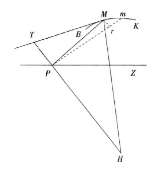
BMK是曲线（“极曲线”）。MT和这一曲线相切。P是坐标的极点或原点。PZ是极轴。PM是M点的坐标（恩格斯称之为“实在的横坐标”，现在叫做动径）。Pm是无限地接近于M的m点的坐标（恩格斯称这一动径为“虚构的微分横坐标”）。MH是切线MT的垂直线。TPH是坐标PM的垂直线。Mr是以PM为半径的弧线。因为MPm是无限小的角，所以PM和Pm可认为是平行的。因此三角形Mrm和TPM，以及三角形Mrm和MPH，都可以看做是相似三角形。——653。
300 指鲁·克劳修斯所阐述的热力学第二定律，参看鲁·克劳修斯《论力学的热理论的第二定律》1867年不伦瑞克版。恩格斯后来对这个问题进行了更加详尽的探讨，见本卷第728—730页。——657。
301 这篇札记和后面两篇札记（《星云》、《赛奇：天狼星》）中的材料摘自下列两部著作：（1）约·亨·梅特勒《宇宙的奇妙结构，或通俗天文学》1861年柏林增订第5版（第9篇《恒星》，第10篇《星云》）；（2）安·赛奇《太阳》1872年不伦瑞克版（第3部《太阳或恒星》）。这些摘录是在1875年底或1876年初作的，恩格斯在《自然辩证法》的《导言》笫二部分中使用过（见本卷第476—484页）。——658。
302 这一标题的第一行写在正文前面的单页上，第二行写在正文第一页上。在《自然辩证法》第三束材料的目录中，本文的标题是《潮汐摩擦》，写作时间为1880年。——662。
303 鲁·沃尔夫在《天文学史》（1877年慕尼黑版）一书第325页指出，光的折射定律是维，斯涅尔发现的，而不是勒·笛卡儿发现的；但是斯涅尔表述这个定律的著作在生前并未发表，斯涅尔死后笛卡儿从他的著作中抄袭了这个定律。——667。
304 本文没有写完。本文和札记《辩证逻辑和旧的纯粹的形式逻辑相反》（见本卷第560——563页）都对自摩擦取火以来有关热的观念的历史发展进行探究、从它们阐述的详略程度来看，恩格斯写作本文的时间是在《辩证逻辑和旧的纯粹的形式逻辑相反》之后；《辩证逻辑和旧的纯粹的形式逻辑相反》与《认识》写在同一张纸上，恩格斯在《认识》中引用了1882年6月8日《自然》杂志第658期上的内容（见本卷第559页），由此可以推断恩格斯开始写作本文的具体时间应在1882年6月8H之后。恩格斯结束本文的时间是同年8月底之前，因为恩格斯在本文以及与本文写于同一时间段的《电》中没有采用威·西门子在1882年8月底提出的新的功率单位——瓦特，仍沿用“伏特”这一术语，而从恩格斯1882年8月26日和11月23日给马克思的信看出，恩格斯是知道西门子在不列颠科学促进协会第五十二届年会上的发言和他提出的这一新的量度单位的。——669。
305 这里应“换算”成电的量度单位——瓦特。恩格斯在1882年11月23日给马克思的信中、对电这种运动形式的量度问题作了重要修正。——671。
306 在《自然辩证法》第三束材料的目录中，本文的标题是《电和磁》。从恩格斯在写作本文时引用了1882年6月15日《自然》杂志第659期一事来看，本文的写作时间应该是1882年。——674。
307 恩格斯引证的是《自然》杂志上的一篇书评《马斯卡尔和茹贝尔的〈电和磁〉》，作者署名G.C.。书评中提到古·维德曼的《流电说和电磁说》。——674。
308 托·汤姆生是在他的《热学和电学概论》第2版第400页上引用法拉第这段话的。这段话引自法拉第《电学实验研究》第12辑。法拉第的这篇文章发表在1838年伦敦皇家学会杂志《自然科学会报》第105页。汤姆生的引文有一处不确切。按法拉第的原文，应译为“就像以金属丝代替放电的粒子时所发生的情形一样”。——676。
309 1905年爱因斯坦创立了狭义相对论，认为光在真空中的传播速度c为一物理常数，是物质粒子运动速度的上限。带电粒子的运动速度小于c。——679。
310 恩格斯在说明法夫尔的实验时依据的是古·维德曼《流电说和电磁说》1874年不伦瑞克版第2卷第2篇第521—522页。——682。
312 《维德曼年鉴》即《物理和化学年鉴》，古·维德曼从1877年起为该杂志发行人。这里引用的是弗·柯尔劳施《轻金属水化物、轻金属盐、五水硫酸铜、七水硫酸锌和硝酸银的水溶液的电导性》一文。——695。
313 有关在德国批判圣经的流派和代表人物可参看恩格斯写的《路德维希·费尔巴哈和德国古典哲学的终结》以及《论原始基督教的历史》。恩格斯提到批判圣经的几部主要著作：大·弗·施特劳斯《耶稣传》（校勘本）1835——1836年蒂宾根版第1—2卷、布·鲍威尔的《约翰的福音故事考证》1840年不来梅版、《符类福音作者的福音故事考证》1841年莱比锡版第1—2卷和《符类福音作者和约翰的福音故事考证》1842年不伦瑞克版。——696。
314 这是当时的一个笑话。在德语中，博士和医生均称做“Doktor”。有一个老少校，听到一个“一年制志愿兵”自称是哲学博士。而老少校弄不清什么是“哲学博士”，什么是“医学博士”，不知道两者有什么不同，便说：“对我来说倒无所谓，外科医生就是外科医生”。恩格斯用这个笑话嘲笑那些不懂得区别概念含义的人。——703。
315 指《逻辑学》第2编《本质论》第3部第3章中的《相互作用》。另见《哲学全书》第1部（即《小逻辑》）第156节附释。黑格尔把生物机体用做说明相互作用的例子；“生物机体的各种器官和机能都是处于彼此相互作用的关系中”。——753。
316 恩格斯在这里引用的实验结果，依据的是古·维德曼《流电说和电磁说》1874年不伦瑞克版第2卷第2篇第498—499页。——709。
317 恩格斯引用的拜特洛的热化学测量结果，依据的是亚·瑙曼《普通化学和物理化学》1877年海德堡版第652页。——710。
318 恩格斯在这一节中引用的电动力的测量结果，依据的是古·维德曼的《流电说和电磁说》1874年不伦瑞克版第1卷第390、375、385和376页。这些结果是从拉乌尔、惠斯通、贝茨和焦耳的实验中得出的。——716。
319 “又是克里斯平”（Ecce itcrum Crispinus）是古罗马诗人尤维纳利斯的《讽刺诗集》第四首诗的首句，这部诗集的第一首诗曾提到并痛斥罗马皇帝多米齐安的一个宫臣克里斯平。这句话的转义是：“又是这个家伙”或“又是这个东西”。——716。
320 十字实验（Experimentum Crucis）源于弗·培根的insiantia cruces（十字路口用来指路的标志物），指一种决定性的实验，可最终确定对某一现象所做解释的正确性。见弗·培根《新工具论》第2册格言第36则。——717。
321 “联盟中的第三者”出自席勒叙事诗《保证》。暴君狄奥尼修斯口出此言，要求接受他参加两个忠实朋友的联盟。——722。
322 彼·拉·拉甫罗夫在匿名出版的著作《论思想史》1875年圣彼得堡版第1卷第109页上说：“那些熄灭的太阳以及死寂的行星和卫星体系在变为正在形成的新星云以前，在空中继续运动。而死去的星体的残骸会成为加速新的星体形成过程的材料。”他在脚注中引证了弗·策尔纳的观点：熄灭的天体的僵死状态“可能仅仅由于外部的影响，例如，由于和另一个天体碰撞产生热而停止”。——728。
323 海·亥姆霍兹《通俗科学讲演集》1871年不伦瑞克版第2册第119—121页。恩格斯在《运动的基本形式》中对亥姆霍兹的计算作了评述（见本卷第594页）。——728。
324 指鲁·克劳修斯1867年9月23日在美因河畔法兰克福德国自然科学家和医生第四十一次代表大会全体会议上所作的报告《论力学的热理论的第二定律》。报告的单行本于1867年在不伦瑞克出版。——729。
325 恩格斯显然是指鲁·克劳修斯《论力学的热理论的第二定律》1867年不伦瑞克版第16页上提到的存在于天体之外的以太。克劳修斯在该书第6页上也谈到以太，但是他在那里认为它不是存在于天体之外，而是存在于天体的粒子的空隙之间。关于以太的概念参看注194。——731。
326 嫌恶真空（horrow vacui）源于亚里士多德的下述观点：自然界不存在真空的空间（亚里士多德《物理学》第4章中的《B虚空》）。在17世纪中叶以前，这一观点在自然科学中统治地位。1643年，伽利略的学生埃·托里拆利发现了大气压，从而证实了物理学意义上真空的存在。——731。
327 这里是指彼·拉·拉甫罗夫的著作《论思想史》。在《思想史的宇宙基础》这一章，即该书第103——104页上、拉甫罗夫提到各派科学家（奥伯斯、威·司徒卢威等）关于光经过极大距离会消失的观点。——732。
328 这里是指安·赛奇的著作《太阳》第632页上所引用的，用来表明不同太阳射线的波长与其热功能、光功能和化学功能之间的关系的图解。图解的主要部分如下：
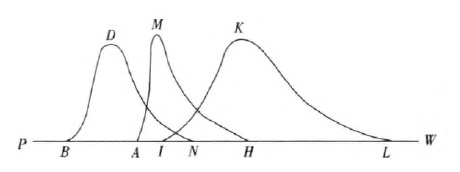
曲线BDN表示热辐射从波长最大的热射线（在B点）到波长最小的热射线（在N点）的强度变化。曲线AMH表示从波长最大的（在A点）到波长最小的（在H点）光线的强度变化。曲线IKL表示从波长最大的（在I点）到波长最小的（在L点）化学射线的强度变化。在所有这三种情形中，射线的强度都是用曲线上的点到直线PW的距离来表示的。——733。
329 这篇札记中的引文均摘自托·汤姆生《热学和电学概论》1840年伦敦第2版。这篇札记和接下来的两篇札记（《电。关于汤姆生的无稽之谈》、《静电和动电》）是恩格斯为写作《电》一文（见本卷第674—727页）准备的材料。——733。
330 在这篇札记以及下一篇札记《自然辩证法的一个很好的例子》中，恩格斯引用的是弗·格思里的著作《磁和电》1876年伦敦——格拉斯哥版。格思里在第210页上写道：“电流强度和溶解于电池中的即氧化了的锌的量成正比、而且也和这个锌氧化时所放出来的热成正比。”——736。
331 指路·巴斯德1860年所做的有关自然发生这个问题的实验。巴斯德用这些实验证明：空气中广泛存在着微生物；在装有营养被（有机液）的容器中，如果没有细菌孢子，此后又阻断了外界空气中生命胚种的进入，其中不可能产生微生物（细菌、真菌、纤毛虫）。巴斯德由此得出结论：生命不可能自然发生。——742。
332 黑格尔《哲学全书纲要》第1部（即《小逻辑》）第81节附释1：“生命本身即具有死亡的种子。”——740。
333 原生质发生（Plasmogonie）这一概念源自恩·海克尔，指有机体产生于某种有机溶液中；它不同于自生（Autogonie），即最简单的有机个体从无机溶液中直接产生。原生质发生又被海克尔称做自然发生。参看恩·海克尔《自然创造史。关于一般进化学说·特别是达尔文、歌德、拉马克的进化学说的通俗学术讲演》1873年柏林第4版第302页。——741。
335 莫·瓦格纳《自然科学的争论问题》载于奥格斯堡《总汇报》1874年10月6日第279号附刊第4333——4335页、1874年10月7日第280号附刊第4351—4352页和1874年10月8日第281号附刊第4370—4372页。——742。
336 威·汤姆生和彼·格·泰特《理论物理学手册》，经作者同意的德译本，由海·亥姆霍兹和韦特海姆翻译，1874年不伦瑞克版第1卷第2部第XI页。这段文字恩格斯转引自莫·瓦格纳的文章。马克思针对这种意见，曾写道：“亥姆霍兹和其他人已经打算宣布一种荒谬的学说，胡说地球上生命的胚胎是从月亮上现成地掉下来的，即它们是靠陨石带到我们这里来的。”（见马克思1875年6月18日给彼·拉·拉甫罗夫的信）——743。
337 恩格斯这里引用的是恩·海克尔《自然创造史》1873年柏林第4版。图表I在该书的第168和169页之间，而图表的说明在第664—665页上。——748。
338 恩格斯引用的很可能是威·冯特的著作《人体生理学教本》1873年埃朗根增订第3版第14页。该书1865年第1版，1868年第2版均在埃朗根出版。——749。
339 恩·海克尔在他的著作《自然创造史》第4版中列举了多细胞动物胚胎发育的下述五个最初阶段：Monerula（前卵），Ovulum（卵），Morula（桑椹胚），Planula（毛胚）和Gastrula（原肠胚）。根据海克尔的观点，这五个阶段与整个动物界的五个最初发展阶段相一致。在这部著作的以后各版中，海克尔对这个公式作了重要修改。但是，恩格斯所肯定的海克尔的基本思想，即有机体的个体发展（个体发育）和该有机形态的历史发展（系统发育）之间的平行关系的思想，在科学中得到了可靠的证实。——750。
340 “深水虫”的原文为“Bathybius”，这个词的含义是“生活在深水中”。1868年托·赫胥黎描述了取自北大西洋海底的黏物，认为这就是原始的无结构的活的物质——原生质。为了纪念恩·海克尔、他把这种在他看来最简单的生物命名为海克尔深水虫。海克尔认为，深水虫是现代还活着的胶液原生物的一种。关于深水虫及其中的石灰石小块，见海克尔《自然创造史》1873年柏林第4版第165—166、306、379页。后经对各大洋海底进行考察，都未证实所谓深水虫的存在，前面发现的黏物只不过是有机体的分解物。——751。
341 指乔·詹·奥尔曼1875年5月24日向林耐学会所作的年度报告。报告以《我们关于纤毛虫类的知识方面的最新进步》为题，载于1875年6月17日和24日以及7月1日《自然》杂志第294—296期。——751。
342 指署名为J.F.B.的人对詹·克罗尔《气候和年代以及它们的地质关系。地球气候世纪变化的理论》（1875年伦敦版）一书的评论。评论发表于1875年6月17日和24日《自然》杂志第294、295期。——751。
343 指约·丁铎尔的论文《论胚胎。腐烂和传染现象引起的大气在光学上的变化》，这是他于1876年1月13日在皇家学会上所作报告的简述。论文以《丁铎尔教授论胚胎》为题发表在1876年1月27日和2月3日《自然》杂志第326、327期。——751。
344 恩·海克尔在《有机体普通形态学》第1卷中，用四大章（第8——11章）的篇幅来阐述有机个体的概念、论述有机体在形态学和生理学上的个性。海克尔的《人类起源学或人类发展史》一书有许多地方也考察了个体的概念。他把有机个体分为六个纲或目：质体、器官、体辐、体节、个体、合体。第一目中的个体是细胞前的原虫（原细胞）型的有机构成和细胞。这是“初级有机体”。从第二目开始，每一目的个体都是由前一目的个体构成。第五目的个体，在高级动物中，是狭义的“个体”。
合体是第六目的形态学上的个体，是第五目的个体的群体；可以作为合体的例子的是海萤的链。
体节是第四目的形态学上的个体，是第五目个体的躯体的重复部分。可以作为体节的例子的是绦虫的节片（节）。海克尔认为，未分化为体节的动物不可能达到已分化为体节的动物在形态和功能上的完善性，因此体节在某种意义上是独立的个体。——751。
346 这一札记与恩格斯1875年11月12—17日给彼·拉·拉甫罗夫的信在内容上几乎完全一致。——755。
347 “一切人反对一切人的战争”（bellum omnium contra omnes）是英国哲学家托·霍布斯的用语，出自他1642年的论文《论公民》中的致读者序（《霍布斯哲学著作集》1668年阿姆斯特丹版第1卷第7页）以及他用英文写的《利维坦，或教会国家和市民国家的实质、形式和权力》1651年伦敦版的拉丁文译本（《霍布斯哲学著作集》1668年阿姆斯特丹版第2卷第83页）。霍布斯认为，人的自然状态，即市民社会之外的状态，是一切人反对一切人的战争；为了克服这种状态，人们必须通过契约来建立国家。——755。
348 生理学家阿·菲克和化学家约·维斯里辛努斯在1865年登上瑞士土伯尔尼阿尔卑斯山福尔山，用采集小便的方法研究人体肌肉的新陈代谢的变化。他们把生理学上的机能活动简单地等同于热力学的功。他们的研究结果发表在《苏黎世自然研究学会季刊》1865年第10年卷第317—348页上。——757。